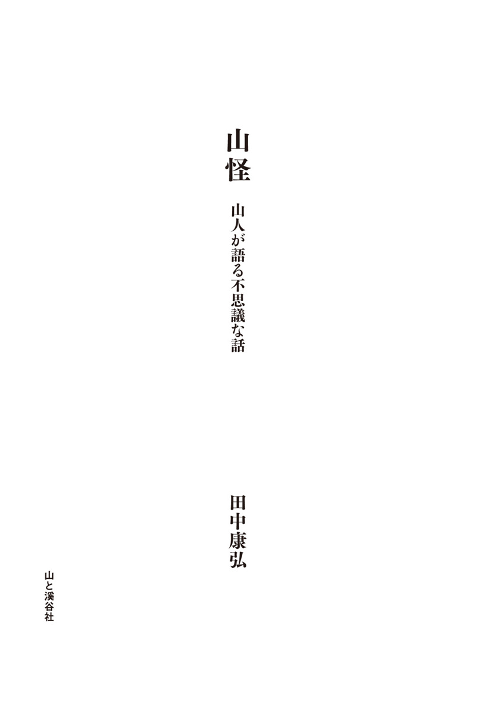
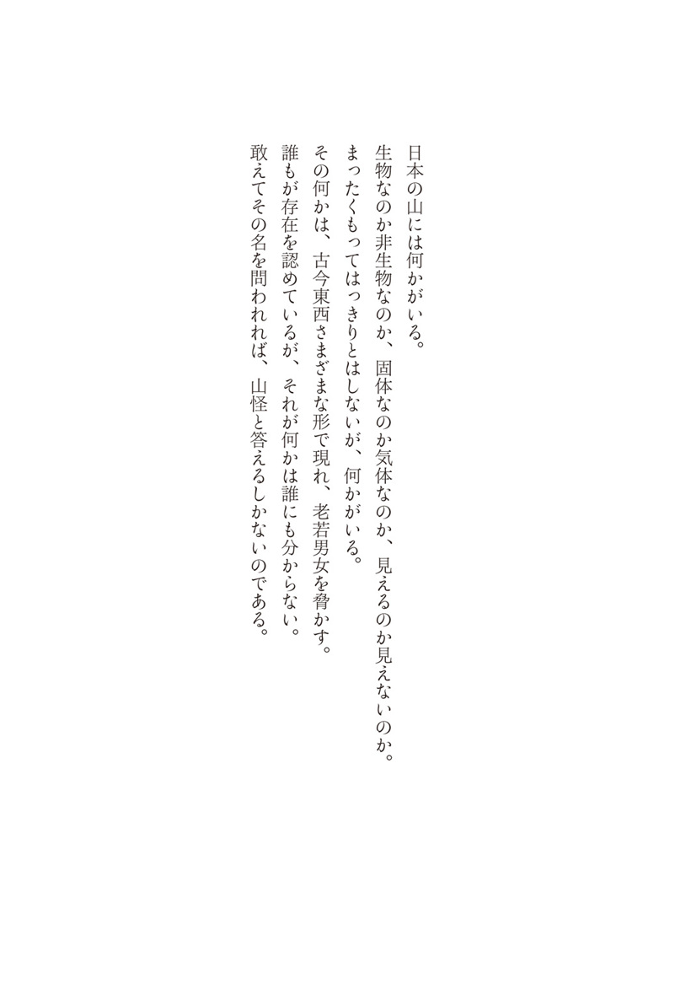
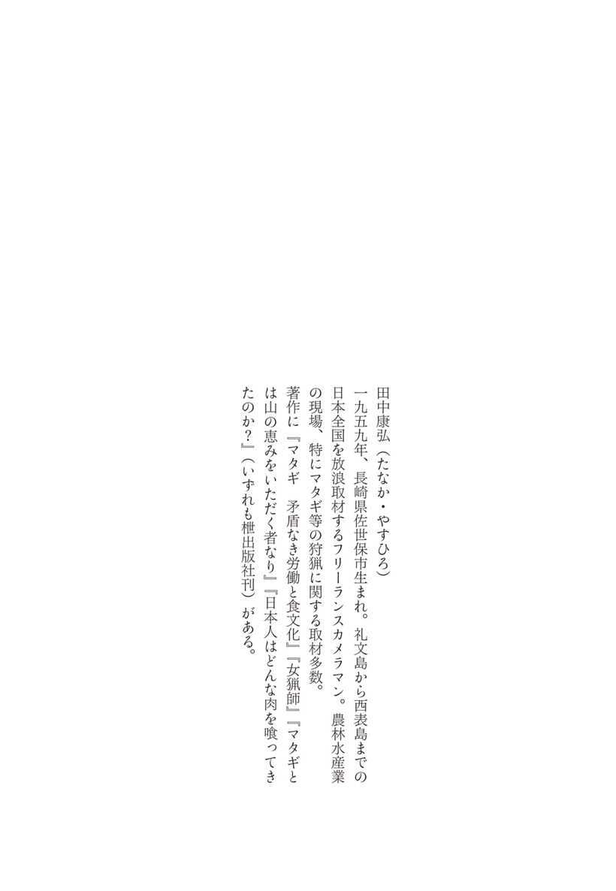

| 山怪 山人が語る不思議な話 | |
| 田中 康弘 | |
| (2015) | |


私はもう四半世紀以上にわたり、山関係、狩猟関係の現場を歩いている。現場では山での不可思議な出来事の類い、大蛇や狐に関する謎の現象譚を聞くことが時々あった。それらは本筋の取材対象ではなかったので、詳しく記録したことがほとんど無いが、記憶にはしっかりと刻み込まれ、細かなディティールまでもが鮮やかに残っている。たわいもない話であり、聞けば〝そんな馬鹿なことがあるか〟と一笑に付す人も多いだろう。しかしながら、私にはなぜか非常に魅力的に思えたのである。
これらのエピソードは民話や昔話とは違って、起承転結がはっきりとある訳ではない。おまけに宗教的または道徳的戒めを含む要素も皆無である。
例えば、
「この前、山で太鼓の音を聞いたが、あれは多分狸だろう」
といった単純極まりない内容なのだ。この手の小話にもなり得ない小さな逸話が、実は現在絶滅の危機に瀕している。
話というものは、本来語られることで生き長らえる。それが現在は語る人も聞く人も少なくなりつつあるのだ。このことに気がついた私は、本気で取材してみようと考えたのである。
その昔、山里は静かで夜は恐ろしく暗かった。今と違って街灯も無く、車もほとんど走っていないからだ。
漆黒の闇、そして獣が支配する深い森は、人々の考え方に大きな影響を及ぼした。特に東北の豪雪地帯は顕著であった。一年の四分の一近くを雪に閉ざされるのである。大きな茅葺き屋根の下、一年中火が絶えることのない囲炉裏を中心に、人々は肩寄せ合って生きてきた。子だくさんで十人を超える大家族が一緒に囲炉裏の火を見つめながら食事をし、そして話をする。
三メートル以上の雪に埋もれた生活は、のんびりとした面もあった。除雪という作業がかつては無かったからだ。玄関先や明かり取りの窓だけ雪を退け、後は子供たちの通学路のような必要な部分だけを皆で踏み固めるのである。現在は誰もが車を使って仕事に行き、そして買いものや通院をする。そのためには、雪が降れば朝の四時頃から家の周りを除雪しなければならない。多額の税金をつぎ込み、延々と道路を除雪する。その後は、大量の雪を捨てる作業にまた多くの人手と費用が費やされるのだ。昔はそのような作業は一切無い。ただひたすら春になるのを待つだけだった。
「昔は囲炉裏端で爺さん婆さんたちが集まって、一日中縄綯いしたり、春先の準備してたんだぁ。そこでよ、村のどこどこの話とか山の話とか、ずーっとしてるのさ。それを横の子供たちも知らず知らずに毎日聞いていたもんなんだよ」
福島県の南会津で聞いた話だ。
薄暗い家の中で唯一の暖房である囲炉裏の周りでは、飽きることなく同じような話が繰り返されたのだろう。テレビも無い時代だから、それが唯一の楽しみでもあった。そのような中で、山の不思議な話は定番だったに違いない。そこには完成された民話のようなものから、先述したオチも何も無いような単純なエピソードまでが〝ごった煮〟状態で存在しただろう。何度も何度も人の口の端に乗ることで話は少しずつ熟成して、地元の面白い民話に化けたのかも知れない。
薄暗く、閉ざされた空間だからこそ出来た話の数々。それはまるで樽の中でじっくりと醸成された酒のように、芳醇な香りを漂わせたに違いないのである。
しかるに現在はどうであろうか。山の中の集落でも街灯は道を照らし、家々の明かりは夜ごと眩しい。少子高齢化核家族化で子供のいない家が当たり前、いても子供たちはゲームや習いごとに忙しく、年寄りの話など聞く耳を持たないのである。
「特別に孫に山の話などしねなあ。おらたちもテレビ見てっからなあ......話なんてしてもどうせ聞きやしねって」
取材して回った地域のお年寄りたちは異口同音のことを言う。自分たちが散々聞かされてきたような山の話、地域の話を、今は誰にもしていないのである。
古の時代、目の前に山があったからこそ、そこで生活が出来た。人は山から飲み水、食料、そして燃料や多種多様な材料を手に入れる。自然の中にさまざまな神を感じ、生きる指針もまた見いだしてきた。生きることのすべては山にあったとも言える。その中には〝語り〟もまた大事な位置にあったはずだ。
この〝語り〟の根元は本来小さなエピソードだったに違いない。作業の合間や長い夜には欠かせない暮らしの友だったろう。それが今ほとんど消滅しかけているのだ。地域の昔話や民話などは各地の教育関係者が冊子にまとめたり、語り部の姿が映像で記録されている。しかしそれはいわば完成形であり、私が探し求めているような民話の原石とでも言える小さなエピソードは意識すらされていないのが現状だろう。
このままでは間違いなく消えてしまう、これらの原石を集めたのが本書である。
秋田県の北部、今は北秋田市となっている旧阿仁町は、マタギ発祥の地として知られている。四半世紀前には五千人を超える人口があったが、現在では三千人程度の典型的な過疎化高齢化地域だ。
旧阿仁町には三つのマタギ集落があり、それぞれに不思議な話がある。
阿仁で最も奥まった場所に位置する打当集落は〝奥阿仁〟と呼ぶにふさわしい所だ。温泉施設や熊牧場などの観光施設が出来る以前は、訪れる人もあまりいなかった静かな里である。
そんな打当地区の鈴木英雄さんは、私がマタギ関係の取材でよくお世話になる方だ。代々マタギ家系の英雄さんの家で山の奇妙な話を聞いた。
英雄さんのお母さんの英さん（昭和八年生まれ）は子供の頃、感動するような光景を目に焼きつけている。ある日の夕方、英さんは母親と家の外に立っていた。親戚筋の来訪を出迎えるためである。薄暗くなっていく庭先で母親とたわいもないおしゃべりをしながら待っていると、急に母親が黙り込んだ。
「どうした？」
母親を見上げると、その視線の先へと目を転じた。
「何、あれ？」
「狐だ」
確かに母親に言われて見ると大きな獣の姿が目に入った。その獣はすすすっと庭先を抜けると家の裏山へ向かう。父親が捕ってきた狐の皮ならば何度も見たことがあったが、生きて走る狐を見たのは生まれて初めてだった。英さんはそれが嬉しくて興味津々に眺めていた。狐は山の斜面に差しかかると、その尻尾を大きく振り出した。
「狐がぴょんと跳ぶのが凄いものなあ。そして尻尾をくるくる、くるくるって回すんだぁ。そしたらそのたびにベロベロベロベロって光るんだ。あれは見たもんでねえと分かんねえ、見事なもんだったよ」
同じような話では、家のすぐ横の山を光がゆらゆらと登っていくのを見た人は多くいる。この辺りで不思議な光は狐のせいだと考えられている。いわゆる狐火だ。しかし狐は光だけを見せる訳ではない。これまた狐に化かされる話も多くある。
マタギ集落である打当には、熊の胆を求めてやって来る商人が昔からいる。その一人で富山の薬売りが買いつけに来た時の話だ。その人はマタギの家を一軒一軒回って、薬の材料になる熊の胆や乾燥した血液、骨などを買い集めていた。
「おめぇん所さ来たか、富山の薬売り？」
「ああ、昨日来たぁ、まぁだ歩いてるな」
「今日は打当内のほうさいるみたいだ」
狭い集落なので薬売りの動向は誰もが把握している。しかしその薬売りの行方が突然分らなくなった。
「どうした、薬売りは？ 打当内からこっちさこねえぞ」
「帰ったか？」
「そんなはずねえべ。おらん所さ来る話だった」
そこで何人かが探しに行くと、すぐに見つかったのだが......。
「それが素っ裸で沢に入ってるんだよ。おめ何やってんだぁってみんなで引き上げたんだ。あれは狐に化かされたんだなあ」
その薬売りが打当内で買いつけをしてから歩いていると、今までに見たこともないくらいの美人が辻の所に立っていた。その美人に誘われて近くの家に行き、一緒に風呂に入ったと言うのである。その話を聞いた、集落でも剛胆さで知られる一人の若者は、
「そんなことがある訳ねえべさ！ 会ったらおらがそいつをとっ捕まえてやる」
そう言うと、わざわざ夜更けにその打当内へ曲る辻へと一人で向かった。
「どいつもこいつも何馬鹿げたこと言ってるんだぁ。薬売りは酒飲んだに違えねって」
打当内へと曲がる辻の所まで来ると、暗がりの中に何かが見えた。明かりを前に突き出して恐る恐る近づいていく。薄ぼんやりとした中で見えたのは、誰かがしゃがんでいる後ろ姿だったのである。
「誰だ？ そこで何やってんだぁ！」
声を掛けたが、その誰かはまったく動かない。そこで若者は大声を出した。
「おいっ！」
振り向いたのは集落の者ではなかった、いや、そもそも人間ではなかったのである。
若者はその後三日間高熱を発して寝込んだが、後にこう語っている。
「いや、あれは何だったのか、まったく見当もつかねえ。振り向いたのはもの凄い顔だった。何かまったく分からねどもな、とにかく恐ろしい顔だった......」
これらの話は大昔の出来事ではない。たかだか四十年ほど前のことなのだ。四十年前といえば、ちょうど新幹線が博多まで開通した頃だ。
打当地区の中心から少し離れた所に打当内がある。そこへと曲がる辺りは、昔から狐の住処として言い伝えられている。今は観光施設が作られて開けた場所になっているが、四十年前には鬱蒼として薄暗く、気持ちの良い場所ではなかったようである。
その打当内の泉健太郎さんが中学生の頃の話。冬場、学校のクラブ活動で遅くなると帰り道は真っ暗で、打当内へと曲がる辻の所は非常に怖かったそうだ。しかしそこを通らないと家に帰れないから、我慢するしかしょうがなかった。
ある冬の日、いつものようにとっぷりと日が暮れて暗くなった帰り道。雪明かりだけが頼りの寒い日だった。いつものように辻に近づく。
「本当にあそこは怖かったもんなあ、暗くてよ。でもあの日は、そこさ曲がって、ぱって前見て驚いたんだぁ」
泉少年が見たものは明るい光の列だった。
「いやあ、明るくてな。見たら夜店が出てるんだぁ。靴屋とか玩具屋とか五、六軒あったんじゃないかなあ。あれぇ、今日はお祭の日だったかなあって、しばらくその店を眺めてたんだぁ」
雪の中に突然姿を現した明るい店に見とれていると、その光が急に消えた。まるでいきなり停電にでもなったかのようだった。
「えっ？」
泉少年が呆気にとられる。そこにはいつもように暗い雪景色が広がっているだけだった。
＊
泉少年はこの後ふたたび謎の夜店に遭遇する。
阿仁地方では市が定期的に開かれている。四のつく日が阿仁合、五のつく日が比立内地区だ。四十年以上前の市は多くの店が出て大変賑やかだった。十日に一度のショッピングは数少ない集落の楽しみであり、迷子が出るほどの盛況ぶりだったのである。
比立内から八キロほど離れた打当集落の人にとっても、市は特に楽しみな存在だ。もちろん今と違い車も無かったから、歩いて行くのが普通だった。
その日、泉少年は祖母と二人で市へ行き、大きなカスペ（カスベとも言うエイの一種で、煮つけにすると美味しい）を一枚買った。雪の上をそのカスペを引きずりながら帰る途中、トロッコ軌道の橋を渡った。ここを通れば随分と近道になるから、打当の人にとっては当たり前の通り道だったのである。
「鉄橋を真ん中くらいまで来た時だったっかぁ、目の前が急に明るくなってな。何だと思って見たら、前に夜店が出てるんだよなあ。店先まではっきりと見えるの」
鉄橋の上である。これはさすがにおかしいと思い、後ろから来る婆ちゃんに振り向いて話をすると、婆ちゃんは怪訝そうな顔をする。
「あんな所に店が......」
そう言って前を見ると、そこには何も無かった。
「子供だからそういったものを見せたのかも知れねえなあ。その時はカスペを引っ張ってたから、それを狙ったのかもなあ」
それ以来、泉少年の前に夜店が突然現れることは無かった。
＊
打当の鈴木英雄さんの親戚も、謎の光によく遭遇している。英雄さんの妹が、部活で帰りが遅れた子供を駅まで迎えに行った時のことだ。すっかり暗くなった無人駅には時折白いものがちらついていた。本格的な冬がもうすぐそこまで来ている。彼女は暖かな車の中で待ちながらラジオを聞いていた。しばらくして時刻を確認すると、車から降りて駅舎へとゆっくり歩き出す。
「来週辺り、もう雪降るべか......」
白い息を吐きながら満天の星を見上げると首を傾げた。
「流れ星？」
数多ある星の中に不思議な動きをする光が目についた。彼女が立ち止まってその光を見つめていると、光が段々大きくなるのが分かる。
「何だべ？ 星があんな動きしねえべなあ」
妙な動きをしながら謎の光はどんどんと大きくなり、凄い速度で近づいてくるではないか。呆然と見上げる彼女の真上で、巨大な光の塊はぴたりと停止した。同時に彼女の周りだけが明るくなる。それはまるで舞台の上でスポットライトを浴びたような感じだった。声も出せず動くことも出来ず、彼女はその光の中にいた。そのうちに光が徐々に小さくなるのが分かった。そして急にビュンともの凄い早さで飛び去っていったのである。暗闇の中に立ちつくす彼女の耳元には、遠くからレールの響きが近づいてきていた。
「あれがＵＦＯって言うもんじゃねがったのかなあ」
妹さんはあの夜の不思議な光がどうしても忘れられない。
＊
英雄さんの弟は、子供の頃に柿の木から落ちたことがある。その時に頭を強く打って意識を失った。
「弟はそれから、何かいろんなもんが見えるようになったんだぁ。おらの爺ちゃんが死ぬ時なんかは、早くに亡くなった婆ちゃんが昔の飼い犬連れて近くまで来てたって言ってたもんなあ」
彼は木から落ちたショックで、いわゆる見える人、霊感体質になったらしい。
「弟の嫁さんは、比立内からこっちさ来る時に凄いもの見たって言ってたなあ」
それは用事があって彼女が打当に向かっていた時のことだ。すっかり暗くなった道を車で走っていると、すぐ横を流れる沢に明かりが見えた。
「あれ？ 誰かカジカでも突いてるべか？」
今時夜突きをやる人がいるのかと思って速度を落とすと、一つ二つと光が灯るのが分かった。好奇心に駆られた彼女は車を止め、窓を開けて沢に目を向けると、ぽつぽつ灯る明かりが一気に沢一面に広がったのである。
「ばあーって広がったって。凄い明るさで、あれがＵＦＯではねえかって言ってたなあ」
これも地元で言うところの狐火の部類なのか、それとも本当にＵＦＯなのかは分からないが、阿仁地区に謎の光が多く出現するのは間違いがないようだ。
カスペ以外にも、生臭ものを持っていると何かが起こる例はいくつもある。打当内の泉良一さんに聞いた話だ。
「俺のおじさんがカジカ捕りに行ってなあ。昔はカジカ捕りは夜やるんだ、夜突きって言ってな」
カジカは独特の味わいのある美味しい清流魚である。昼間は鳥に狙われないように石の下に潜み、夜になると姿を現す。浅い沢をライトで照らしながらその姿を探し、ヤスで突いて捕るのである。これが簡単にたくさん捕れる（現在は禁止）。
「カジカをたくさん捕って、それを腰の魚籠さ入れて沢を歩いてるとな、その魚籠をぐいぐいと誰かが引っ張るんだと。てっきりまた仲間が来て悪さしてるなと思って後ろ振り向くと、誰もいないのよ」
真っ暗な中で聞こえるのは、沢を流れる水音だけである。
「ああ、木が引っ掛かっただけか」
気を取り直してカジカ捕りを続けた。しばらくすると、また魚籠をぐいぐいと引っ張られた。
「あれ、また木に引っ掛かったか？」
そう思いたかったがもう出来なかった。なぜなら、そこは沢の真ん中である。引っ掛かるような木も枝もまったく無い場所なのだった。
＊
同様の話を宮城県の七ヶ宿の民宿でも聞いた。そこの婆ちゃんの両親は仕出し料理屋を営んでいた。ある日、婆ちゃんのお父さんが大きなマスの塩焼きを担いで届けに行く途中で、薄暗い場所に差しかかる。すると担いだマスを何物かが引っ張るのである。
「こりゃ何だ？」
お父さんは必死でマスを押さえて夜道を何とか抜けたが、届けた家で見たものは半分になったマスだった。稲荷の祠に油揚げをお供えするのはよく聞く話だ。稲荷の眷属が狐で、それが好むからお供えするのである。これと同様に、山中の狐は生臭ものを好むようだ。
＊
奈良県の吉野町では、魚の行商人が同じような目に遭っている。吉野町は後醍醐天皇が南朝を開いた古の地である。そこの猟友会会長である下中章義さんが子供の頃に聞いた話。
「この辺りには行商人がよう来よったんです。魚の行商は背カゴにいっぱい魚を入れて売り歩くんですよ。それが山道を歩きよって、何か変やとカゴを下ろすとね、魚が全部葉っぱになっとった。狐にやられた言うんですわ。まあ狐の話はよう聞きましたよ。そいでも近江の商人だけは騙そうとした狐を逆に騙して、捕まえて襟巻きにしたそうですわね」
近江商人、恐るべし。
これは打当集落を訪れたお客さんの話だ。英雄さんの所へ来るなりこう話した。
「ここさ来る途中で親子の狐がいてなあ」
林道を降りて打当へ向かっていると、狐の親子がいた。わざとその狐に向けてハンドルを切ったりして親子を少し追い回したと面白げに言うのだった。
「そのまま山の中さ入ればいいのに、道の脇を走って逃げるんだぁ。馬鹿だな、あいつらは。しばらく追っかけてやったよ」
そんな話をしながら、後から来た友達と合流すると別の家に行って酒盛りを始めたのである。久々に集まる仲間と楽しい時間を過ごし、夜半にお開きとなった。
狐を追い回した男と一緒の部屋に寝ていた友達が異変に気づいたのは、トイレに立った時である。隣に寝ているはずの件の男がいない。てっきりトイレに行ったのかと思って後を追ったが、男の姿はどこにも無かった。気になって家中を探したが見つからず、その家の人も起き出して大騒ぎになった。真っ暗な山中の集落である。それなのにライトも持たず、夜中にいったいどこへ行ったのか。
皆が心配しつつ夜明けを待つ。少しずつ明るくなる空が不安を和らげるようだった。まだ完全に夜が明けきらぬうちに、玄関先に人の気配がした。慌てて開けると、そこに男が立っている。
「何だ、お前どこさ行ってたんだぁ」
そう言われて、男は惚けたような顔をして話し始めた。
夜中寝ていると誰かが戸を叩く音がする。普段なら酒を飲んでその程度では目が覚めることなど無いが、なぜか昨晩はすぐに目が覚めた。気になったので戸を開けて外を見ると、暗い中に一人の女が立っている。
「その女が綺麗でなあ、おらにこっちに来いって手招きするんだ」
そのまま裸足でその女の後へついて行った。暗闇で見ても美しい女の姿は男を魅了した。抱きつこうと思って後を追うが、どうしても追いつけない。女は別に素早く逃げる訳ではない。少し手を伸ばせば届きそうなのだ。こうして手が届かぬ女を追いかけながら、朝まで集落の中を彷徨っていたというのだ。
この話を聞いた友達は言った。
「だから狐にちょっかいなんて出すもんじゃねえ」
話を聞いていると、山で怪異に会う人と会わない人がはっきりと分かれることに気がつく。これはいわゆる心霊現象でも同じことがよく言われているようだが、見える人とまったく見えない人がいるらしい。
「そうだな、例えばよ、五人で列になって猟場に向かうべ。そん中で何かあるのはいつも決まった人なんだ。何も無い所を歩いていても、その人だけが何かに足を引っ張られることがあるな。おらか？ おら、そんなことまったく無いけどよ」
そう話すのは打当集落前山の鈴木進さんだ。七十半ばの超ベテランマタギは、不思議な体験をしたことは無いという。
「おらは無いけど、そういえば従兄弟には妙なことがあったなあ」
進さんの従兄弟が、近所の人と打当集落中村の道を森吉山方面に向かっている時のことだ。狭い道なので一列になって歩いていた。進さんの従兄弟は知り合いの後ろを歩いている。何気なく前の人越しに先のほうへ目を向けると、思わず言葉が出た。
「あれ、また来たよ」
それを聞いて前を歩く知人が振り向いた。
「何？ 何が来た？」
「いや、あの前さから来る人、あの女の人な、昨日もここですれ違ったんだぁ」
ぎょっとした知人は前を確認すると振り返り、きっとした表情で言った。
「おめ、何しゃべってる！ どこにもそんな奴いねでねか」
驚いたのは従兄弟のほうだった。前方からは昨日もすれ違った女がこちらへ向かって歩いてきているのだ。それが前を行く知人には何も見えないという。
「見えてねって......じゃあ、あの女は何だべ」
そう思っているうちに女の姿は消えてしまったのだ。実に不思議な話である。
「それがな、結構綺麗な女の人だったみたいなんだ。そいつがな、手には編み機を持っていたんだと」
セーターなどを編む、あの編み機である。それを片手にぶら下げて山のほうから二日連続で降りてくるとは、いったいどれだけ編みもの好きなのだろうか。
英雄さんの話では狸もいろいろのことをするらしい。もっとも狐のように実害を被ることはほとんど無く、たわいもない話が多い。
今はもう廃業してしまったが、打当温泉から熊牧場へ向かう途中に小さなスキー場があった。そこはもともと牧草地である。阿仁地方では馬が大事な労働力で、各集落の山との境界線は大概牧草地になっていた。
「夕方近くになって、そこへ草刈りに行くんですよ。するとね、その草っぱらの上のほうで音がするんですよ。コンッコンッって」
それは樵が斧を立木に振るう音そのものである。しかしそこに木は無い。
「狸だな！って大声で叫ぶと音が止むんです。俺の爺さんもよく山の中で同じような音を聞いたそうですよ」
爺さんが木を切ってから休んでいると、今度は反対側から同じように木を切る音が聞こえてくる。あれおかしいなあ、誰かあっちにもいるのかと反対側の斜面に目を凝らしても、それらしい様子は確認できない。そのうちに今度は太鼓を叩く音がし始める。こんな所で太鼓なんて叩く奴は狸くらいだなと納得したというが、別にそれだけの話である。
「最近の狸はチェーンソーの真似もするんですよ。斧からチェーンソーに山仕事が変わってきたら、いつの間にか狸もそれを真似るようになってね」
山に入ると誰かがすぐ近くで木を切っている。チェーンソーの音なのですぐに分かる。しかし、付近の林に目を向けても誰もいない。その誰もいない林の中からチェーンソーの音だけが響いてくるのである。
狸も時代の流れに乗るようであるが、なぜ音だけなのか、こればかりは彼らに聞かないと分からない。
＊
この話を補足してくれたのが、英雄さんと同じく打当に住む高堰幸一さんである。高堰さんは長年森林組合で山仕事に従事してきた山のプロだ。
「チェーンソーの音は聞こえるよ。作業で山に木ぃ切りに入った時に聞いたんだぁ。あれ、他でも作業してるべか？って聞いてるとな、メキメキメキ、ドーンって、大木が倒れる音まで聞こえるんだよ。でもそこは、誰も作業になんか入っちゃいねえのよ。作業道も無い所なんだ。いるのは俺たち森林組合のもんだけよ。あれは不思議だったなあ。全員で聞いてたものなあ」
謎のチェーンソー音は、その後も何回か聞いたそうである。
＊
高堰さんは高校生の時に狐火にも遭遇している。夜間高校に入った高堰さんは昼間工場で働き夜学ぶという生活を送っていた。
ある日、授業を終えて同級生と寮に向かっていると......。
「真っ暗な中で、五、六十センチくらいかなあ、こう火玉が出てきてよ、ちょうどそん時親戚で死にそうな人がいたから、ついに死んだかと思ったよ」
その光はオレンジ色で、ぼうぼうと燃えながらぐるぐる円を描いてしばらく飛んでいたそうだ。寮の友達と二人で辺りを明るく照らす謎の火をしばらく眺めている。この時、親戚の人は亡くなってはいなかった。
国道一〇五号から脇へそれ、トンネルを抜けると根子集落へ入る。暗く細長いトンネルはそれだけで結構迫力がある。この根子集落でも、やはり不思議な話は狐が関係するようだ。
佐藤国男さんの所でいろいろな話を伺った。ここは私の山の師匠である故佐藤弘二さんの家でもある。弘二さんについて奥さんや爺ちゃん婆ちゃんが話してくれた。
「あれは何だったのかなあ、弘二が山から帰ってきて〝お爺ちゃん、奥山まで行かなくても山野草がいっぺあっとこ見つけたから〟って言うんだ」
国男さんはいつも奥山まで山野草を採取に行っていた。それが心配な弘二さんは比較的近くに群生地を見つけて教えてくれたのだ。
「どこさあるって聞いたら、私もよく知っている林道のすぐそばだと。そこに池があって、その周りに山野草がびっしり生えてるって言うんだ」
話を聞いて国男さんは首を傾げた。そこは国男さんも若い頃からよく知った場所なのだ。そこに池は無い。
「それは違う場所じゃねか、そんなとこさ池はねって言ったけど、弘二は聞かねんだ」
弘二さんが言うには、今まで気がつかなかった所に池があって、その水が凄く綺麗な青色をしていた。その周りに山野草が咲き乱れていると言い張るのだ。しかし家族は誰も信じない。あの場所にそんな池は無いと皆がそう思っているのだ。そこで怒った弘二さんが、
「よし分かった、じゃあ明日の朝みんなで見に行くべ。行けば分かっからよ」
こうして翌朝、弘二さんと国男さん、それに子供たちと荒瀬の西根さんも加わって現場へと向かった。
根子集落からビゼンノマタ方面へ林道をゴトゴトと進む。
「ここだ、この上さ池があるんだ」
林道のヘアピンカーブを過ぎた所で車を止めると、弘二さんは斜面を登り始めた。ついてきた家族は池の存在は信じられないが、弘二さんのあまりの勢いにひょっとしたらあるのかも知れないという気もしてきた。
斜面を登ると、そこには弘二さんの背中だけが見えた。その先はただ森が広がっているだけである。山野草も、そしてもちろん青い池も無かった。
「あれはいったい何だったかねえ。狐に騙されたんじゃないかなあ、絶対にあるって弘二は言ったものなあ」
山の達人だった根子マタギの弘二さんの懐かしい話である。
根子集落にも打当集落と同じように狐にまつわる話が多い。その大半に酔っぱらいが関係しているのが面白い。
国男さんの所に、ある日知り合いがやって来た。写真撮影が好きな人で、何か行事があると撮影を買って出る。そのプリントが出来上がると、写っている人の家を一軒一軒回って写真を手渡すという奇特な人だ。貰うほうもタダという訳にはいかないから、一杯ご馳走をするのがいつものことである。
「その人がうちさ来ていっぺ飲んでから余所へ回ったども、途中で行方不明になってしまってな」
いつものように写真を持って各家を回り、国男さんの所に来たときはすでに出来上がっていた。それでもまた一杯引っ掛けて次の家へと向かったが、そのままどこへ行ったか分からなくなった。酔っていることでもあるから心配して、集落中をみんなで探し回ると......。
「いや、沢の横の道でなんか一人で騒いでるんだぁ、それも裸でよ。それを無理矢理連れて帰って話を聞いたらな、〝戦ってた〟って言うんだよ」
どうやらその人は見えない何かと格闘になったらしい。もっとも見えなかったのは集落の人だけで、彼には戦う相手がはっきりと見えている。
「おめ、いったい誰と戦ってたんだ？」
「あれだ、ほら座頭市よ」
「座頭市？ 座頭市って勝新太郎のか？」
「そうそう、今おらはその勝新太郎と戦ってたんだ」
＊
酒を飲んで歩くのは、何も男だけの専売特許ではないようだ。同じく根子での話。結構な酒好きで知られる婆ちゃんが、祭りの日にあちこちの家を回って飲んでいた。かなり酔っぱらってふらふらと集落を歩き回る姿を誰もが見ていた。
「うちの婆さんが帰ってこねども、おめたち知らねえか？」
しばらくして、その婆ちゃんの家族が心配そうな表情で探しに来た。
「おめんとこの婆なら随分前に出てったぞ」
何せ年寄りのことで、おまけに酔っぱらっている。沢にでも落ちたら明日は葬式だ。心配してみんなで探し回ると、集落の外れの道にその姿があった。一安心して近づくと、様子がおかしい。婆ちゃんは上がりもしない足を精一杯上げながら、妙な格好で歩いているのだ。
「あぃふげぇでぇ～あぃふげぇでぇ～」
言葉の意味は〝何とまあ深いことだ〟。
婆ちゃんは家族に連れられて無事帰宅した。後に語ったことによると、あれから三軒ほど回って帰る途中で雪が降ってきた。凄い勢いで降ってきた雪があっという間に積もって、歩くのに難渋していたと言うのである。それを聞いて集落の人は婆ちゃんの妙な歩き方に納得はしたが、もちろん雪などまったく降る季節ではない。おまけに婆ちゃんが歩いていたのは、ごく普通の歩きやすい道だったのである。
「酒飲み過ぎて歩くから、狐に化かされたんだ」
婆ちゃんはみんなにそう言われて少し酒を控えるようになった。
＊
「大抵はですね、酔っぱらっていたり疲れていたりが原因ですね」
そう話すのは根子の親方こと佐藤哲也さんだ。哲也さんは長年教職にあり、教育委員会にも在籍していた地元の知識人である。その哲也さんの立場からすると、狐に化かされるなど絶対にあり得ないことなのだ。
「山の中でいろいろのものを見る時は、疲労困憊してるんでしょうねえ。雪の中でも同じですね。前が見えないくらいの吹雪の中では、木の陰も化けものに見えるんじゃないでしょうか？ 狐火や人魂も同じ理屈で説明がつくでしょうねえ。リンが燃えただとか、街灯や家の明かりが何かに反射して、怖がる人の目にまったく違った形に見えるんだと思いますよ」
すべてを否定されるようで面白くないが、哲也さん自身はまったく見たことがないのだろうか？
「ありますよ」
えっ、ある？ それは......。
「帰り道にトンネルの下の墓場に大きな光がこうぼわーっと飛んできて、一つの墓石の上からふわーっと被さったんですよ」
何と、哲也さんも謎の光る物体を見ているのだ。それは何だと思うか尋ねると、
「おそらくは近くの家の明かりでも墓石に反射していたんでしょうねえ」
墓場の横は山が迫っていて家など無いのであるが......。
荒瀬にある鍛冶屋の西根稔さん（故人三代目正剛）という阿仁マタギは、私の恩人である。西根さんが素人の私をいろいろと山に連れて行ってくれたからこそ、今の私がある。それほどに恩を受けた人だ。その西根さんからは大蛇の話を聞いたことがある。
「露熊のほうさ行った時、山歩いてたら土管があるんだよ。山の中だべ、不思議でな。何でこんな場所さ土管が横切ってるんだってよく見ると、それが動くんだよ」
狭い山道を横切っていたのは土管ではなかった。蛇なのだ。しかしただの蛇ではない。藪から藪へと伸びた体は、どちらが頭か尻尾なのか分からないくらいであった。
荒瀬にほど近い露熊渓谷は、昔から蛇が多い場所である。ここには七面様が祀ってあるが、近くの萱草地区にも七面様があり、言い伝えではやはり大蛇が登場する。そして阿仁は、古くから金や銀などの鉱山地帯として有名である。鉱山とこの大蛇が密接に関わるのが山の定番らしい。
＊
蛇に関する話は、打当の英雄さんからも聞いた。親戚の女性が納屋に味噌を取りに行った時だ。ガタガタと戸を開けて薄暗い納屋に入り、味噌樽を開けようとしたら突然何かが目の前に現れた、いや正確に言うとぶら下がった。驚いて跳び退くと、それはビール瓶ほどの太さがある蛇だった。天井からぶらりと垂れ下がり、彼女のほうをじっと見ている。
驚いた彼女は納屋から走り出し、母屋の家人へ知らせた。急を聞いた父母らが納屋へ入ったが、そこには何も変わった様子は無い。縄でも見間違えたのだろうということで話は終わり、結局その大蛇は彼女以外に誰も見ることはなかった。
彼女は寝ている時に正体不明の何かが布団に落ちてきたり、ＵＦＯのような光に包まれたりと、いろいろなことがある人だった。
＊
光といえば、露熊渓谷の入口に住む斉藤真一さんも、家から不思議な光を見たことがある。
「居間の窓から見たよ。向こうの杉林のほうから光の塊がふわふわ～って飛んでくるんだ。これが狐火かって女房と二人で見たんだぁ」
夫婦二人で杉の木の高さくらいを飛ぶ、ソフトボールより大きな狐火を見たそうだ。
斉藤さんはトイレからも不思議なものを見ている。
「いや、夜トイレさ行って窓から外見てたんだぁ。そうしたらな、頭から背中にかけて、こうぴかーって光ってる動物が下のほうにいるんだよ。初めて見たよ、あんな生きもの」
驚いた斉藤さんはトイレから駆け出すと、ライトを手に家の外へと走り出た。しかしいくら探しても、それらしき動物の姿は無かった。
＊
西根さんと斉藤さんは家が近く、仲の良い幼なじみである。西根さんが急逝して斉藤さんはかなり落ち込んだ。葬式も済んでしばらくした頃、斉藤さんが居間でくつろいでいると不思議なことが起きた。
「まずな、天井がガタガタガタって音立てたんだ。何だべと思ってると、今度はテーブルのコップがカタカタカタって動くんだよ。俺はすぐに〝ああ鍛冶屋が来たな〟って分かった」
鍛冶屋とは西根さんのことである。それから二、三日後、今度は斉藤さんの娘さんが仕事から帰ってきた夜のことだ。車を車庫に入れて家に入ろうとすると、突然声を掛けられた。
「おおっ、今帰ってきたか」
それは間違いなく聞き覚えのある西根さんの声だった。娘さんは生まれた頃からのつき合いである。怖いとはまったく感じなかった。自分のそばに来てくれたんだと温かな気持ちがしたそうである。
知らない場所で迷子になる。これは別に不思擬な話ではない。しかしそれがよく知った場所で突然迷子になることがあったとしたらどうなるのだろうか？
山で生まれ育ったはずのベテラン猟師でさえ、時として不思議な世界へと踏み込んでしまうようだ。
ある初冬のことである。打当のマタギたちが熊猟に出掛けた。いずれもこの道三十年以上のベテラン揃い。経験豊富なマタギ集団での猟である。
「マチバさ着いて無線で連絡取り合ってたら、一人が出ねえんだ。いくら呼んでも返事がねえのよ」
巻き狩りは、山の斜面を下から勢子が熊を追い上げ、上で待ちかまえる撃ち手が仕留める猟である。まずは撃ち手がそれぞれの持ち場へと山を登り、配置についた所で勢子が一斉に声を上げる。
「ホヤ～ッホヤ～！」
「ホイ～ホイ！」
声が枯れるまで叫び続けながら熊を追い上げるのだ。しかしこの時はいつまで経っても猟が始まらなかった。
「どうした？ おかしいんでねか。何かあったか？」
無線に出ない仲間を心配してマタギたちは、いったん猟をやめて仲間の行方を探すことにした。しかし結局仲間の姿は見つからなかった。
「登ったはずの所から全部探したども見つからね。どこさ行ったってまったく分かんね」
仲間たちが必死で探している時、その人はどこにいたのか？ 彼は配置につくはずの稜線とはまったく違う場所にいたのである。
「いやあ、あれは四、五キロ先でねか。とんでもねえ所さ入っていってるんだぁ」
彼を見つけたのは奥山で林道工事をしていた作業員である。山のほうから降りてきたマタギは明らかに様子がおかしかった。そこで声を掛けたのである。
「おめさ、どっから来たんだぁ？」
その言葉に惚けたような顔をした彼がはっと我に返った。こうして無事仲間の元へ帰ることが出来た彼が言うには、
「いや、持ち場さ向かって山入った所までは覚えてるんだ......ただ後は何も分からね。どこさ歩いてたのか全然分からね」
発見された場所に行く途中には大きな橋があり、さらには小さな温泉施設もある。そこを通った記憶も何もまったく無いと言うのだ。
「あん時、工事の人が声掛けてくんねかったら、どうなっていたんだろうなあ」
＊
このような不可思議な経験は集団でも起こるらしい。比立内のマタギが猟に出掛けた時のことである。六人のベテランマタギが一列になって猟場を目指していたが......。
「いやあ、もうとっくに猟場さ着いていい頃なのに全然着かねえのさ。それどころか、まったく違う場所に向かってるんだぁ。全員誰もそれが分かんねえのよ」
いつもの猟場へ向かう地元のマタギたちが、その目指す猟場へ着けないとは実に妙な話だ。いくら何でもこれはおかしい。屈強のマタギたちも尋常ではない状況に恐怖すら覚えた。
「阿毘羅吽欠蘇婆訶」
各人が口々に呪文を唱え、何とか山を降りた時にはふたたび山神様に手を合わせたのである。
後日、マタギたちは自分たちがどこで道を誤ったのかを検証した。
「それが何でもねえ所なのよ。登って右に曲がる所を真っすぐに行ったんだなあ。絶対にあり得ないんだ、そんなことは。一人じゃないのによ、六人いて誰もそのことに気がつかねなんて、おかしいべ」
＊
これと似たようなことが時々起こる場所があり、そこを地元の人はムジナ沢と呼んでいる。迷わすのは狐ではなく、ムジナのせいと言うのだろうか。
「山に入る時は唐揚げとか天ぷらは絶対に持って行っちゃ駄目なんだ。酷い目に遭うぞ。大怪我した人も実際にいるからな」
打当の高堰さんの話である、これは他のマタギからも聞いた。揚げものは山行きには御法度らしいが、持参すると良いものもある。
「ニンニクだな。生ニンニクを一つ胸ポケットに入れておくんだ。そうすっとよ、変なもんは寄ってこねえのよ」
ニンニクが山の不可思議な力から身を守ってくれるとは驚きだ。まるで吸血鬼除けではないか。しかし、これを実践するマタギは少なくないのである。
比立内の佐藤正一さんは、理詰めで山を覚えていった人だ。
「山さ入るべ、そうすっとよ、どんどん奥には行かねんだ。今日はどこそこまで行ってそれ以上は行かね。そしたら次はその先さ足を延ばすのよ」
こうして少しずつ山を調べ上げて行くのが、正一さんの若い頃からのやり方である。
「俺はよ、山のすべてを知り尽くしてっからよ。迷うなんてことは絶対にねえんだ。狐火？ そんなもの見たこともねえ。第一妙なことがあるとみんな狐のせいにすっけど、それは自分の間違いを狐におっかぶせているだけだって」
山では爺ちゃん、婆ちゃん、ベテランのマタギでさえ迷うことがある。場合によっては集落で捜索隊を編成して探しに行くのである。
「無事見つかるべ、大勢の人に迷惑かけてるんだよな。そん時に狐にやられたって言えば誰もそれ以上は何も言えねべ？ 都合の悪いことは全部狐のせいよ」
狐に化かされて迷った人の話を聞くと、正一さんはどこの場所で迷ったかがすぐに分かるという。間違いやすい沢筋や山道をすべて把握しているから出来ることらしい。
「化かされたって言う人が迷う所は大抵決まってるんだ。そこはよ、複雑な所じゃねえもんなんだよ。でもよ、沢筋を間違うと全然違う所さ行ってしまうもんだから、みんなが化かされたって言うのよ」
狐火も見ない、山で不思議なことも体験しないという正一さんに、ふと頭に思い浮かんだことを聞いてみた。
「そうですか、何も無いんですねえ......七面山についてはどうですか？ 蛇の話とかは聞いたことがありますか？」
正一さんの顔つきが一瞬変わった。
「蛇か......」
「何かありますか、蛇関係？」
「昔よ、七面山の和尚さんに〝お前には蛇が憑いてる〟って言われたことがあるんだ」
それは小学校の六年生の時のことだ。学校の遠足で七面山に向かった正一さんは、出会った住職に開口一番〝蛇の霊が憑いている〟と指摘された。
「いや驚いたな、実はよ、少し前に蛇を殺してるんだよ」
それは数カ月前のことである。隣の家から叫び声が上がり正一さんが見に行くと、家の中に巨大な蛇がでんととぐろを巻いている。
「それがよ、二メートルくらいの青大将なんだ。天井から落ちてきたんだと」
ちょうど隣家には爺ちゃんしかおらず、その爺ちゃんはあまりの蛇の大きさに腰を抜かして助けを求めていたのである。そこで駆けつけた正一さんが、その大蛇を打ち殺してしまったのだ。
「いや、その話は誰にもしてないから驚いたな」
さらに驚いたのは住職の警告だった。
「それを祓わねば大変なことになるって言われてな......」
その取り憑いた蛇の霊を祓わないと、正一さんか家族に災いが降りかかるというのだ。もちろん正一さんがお祓いを受けたのは言うまでもない。
「その後も大きな蛇は見たな。この近所の社を建て直した時だ。古い社を解体してるとよ、真っ白のやっぱり二メートルくらいあったべか、蛇が出てきたんだぁ」
当然その蛇はみんなで丁寧に逃がしている。
＊
巨大な白蛇話は打当の高堰さんからも聞いた。
「山で白蛇見たことある？ おれはあるんだよ。それがな、でかいんだ。山ん中さ歩いてたら目の前にいたんだけんど」
その白蛇は高堰さんの前に、まるで立ちはだかるように六十センチほど鎌首を持ち上げていたそうだ。六十センチの鎌首ということは、ほとんどキングコブラである。やはり二メートル以上の大物だろう。阿仁の山にはどうやら凄い生きものがいるようだ。
これも打当の高堰さんに聞いた話。
五年ほど前のことだ。鷹巣市にある建設会社が森吉山での林道工事を請け負った。そこは森吉の北麓に道を付ける仕事で、別段難しい現場には見えなかったが......。
「やり始めてな、しばらくしてある地点まで進んだ所で変なことが起き始めたのよ。現場に立っているとな、後ろで話し声がするんだ。誰かいるのかと思って振り返るべ、そうすれば誰もいねえ。後ろから声掛けられた奴もいてな、もちろん振り向くと誰もいねえ」
十人近い工事関係者は全員がこの声を聞いている。しかし異変はそれだけでは収まらなかった。
「そのうちよ、霊がついてくるようになったんだ、作業員の家までな。そしてその家のお母ちゃんにとり憑いて大変な騒ぎになったんだよ。それが一人二人じゃなくて何人もそういう目に遭ってなあ。あの場所がどんな場所かを知らなかったんだなあ、会社は」
その場所とは、五十年ほど前に雪崩で三人が亡くなった所だった。その地点のすぐ上には沼があり、そこでも男性が一人謎の死を遂げていた。地元の人は全員が知っている、いわくつきの場所だったのだ。工事関係者の中で最も大変な目に遭ったのは、自他ともに認める霊感の強い夫婦である。夫が現場から連れ帰った霊にかき乱され、ついに耐えきれず七面山に相談に行った。そこで渡された御札を貼って様子を見ることにしたが......。
「持って帰った御札がな、次の日には黒く汚れてたんだ」
まるで煤けたように御札は汚れていた。夫婦は誰かがわざと汚したのではないかと思ったくらいだ。結局妙な出来事は一向に収まらず、本格的にお祓いを受けて平静を取り戻した。御札も綺麗なものに貼り替えて一段落がついた。
「お祓いもしてもらって落ち着いたんだけどな、御札はやっぱりすぐ汚れるんだ。黒く煤けたみたいによ」
打当マタギの鈴木達郎さんは死にかけたことがある。風邪をこじらせて肺炎を併発してしまったのだ。五十日間の長期入院を余儀なくされ、その間危篤状態に陥った。
「あん時は別に怖いとかそんな気持ちは無かったよ。気がついたら、どうやらそこは寺みたいだった。祭壇があってなあ、自分の祭壇だろうなあ、あれは」
どこの寺かは定かでないが、自分の葬式がここで行われるんだろうと鈴木さんは理解した。祭壇の向こうには襖があって、そこから和尚が出てくるはずである。
しかし......。
「いやいくら待っても襖が開かないんだ。和尚さんが出てこねえんだよな。こりゃ困ったなあって思ったよ」
結局和尚は現れず、諦めた鈴木さんは寺の外に出た。しかしそこには大きな川があり、ごうごうと音を立てて濁流が流れているではないか。
「こりゃ困ったなあ、どこか渡れる所はないのかって、あちこち探しているうちに目が覚めたんだ」
その後快方に向かった鈴木さんは現在六十六歳で、現役のバリバリのマタギである。もしもあの時、襖が開いて和尚が出てきたら、多分鈴木さんはそのまま戻ってこなかっただろう。
＊
打当の高堰さんは森林組合で長年働いた山のプロである。その友達の話。
「現場で切り倒した木にワイヤを掛けて引き出す作業をしてたんだ。そうしたらワイヤが外れてな、もの凄い勢いで胴に絡まったんだよ」
瀕死の重傷を負った友達を病院に連れて行ったが、何せ奥山の作業場の出来事である。林道はガタガタ道で曲がりくねり、急ぐことも出来ない。そのうちに彼の顔色が失せ、意識も無くなっていた。
「病院に着いた時はほとんど死んでたんじゃねえかなあ。まあ結局助かったんだけど。そいつは花畑を見たって言ってたな」
彼が病院に着いた時はもちろん意識など無い状態だった。しかし集中治療室に入れられ、彼は多くの人の話し声を聞いている。そして自分の体が治療室の中ほどに横たわる絵をはっきりと見ているのだ。特に不思議とも思わず恐怖も感じない。そのうちに病院から抜け出して彼が辿り着いたのは一面の花畑だった。
「綺麗な花畑だったって。その中に立ってると誰かが向こうにいるんだ。それが和尚さんなのよ、その和尚さんがこっちさ来いって手招きしてるんだ」
広くて美しい花畑は気持ちの良い場所だった。その向こうで手招きをする和尚、しかし彼は、そちらに行く気がまったく起きなかったのだ。そして蘇生した。
鈴木さんの場合は奥から和尚が出てこないで助かったが、この人は和尚に招かれたのに行かずに助かった。和尚の役割が面白い話である。
根子マタギの佐藤弘二さんは若い頃から徹底的に山に挑んだ人である。最初に彼を鍛えたのはキヨシという打当マタギだ。
「いやあ、あの人はホントのマタギだ。おっかなかったよ。屛風みたいな岩山さ登らされてな、そこを渡って行かねばならねのよ。凄い崖だべ、何も摑むものがねえんだ。触るのは小指くらいの芝草一本よ。それに全身を預けて登るより他ねえんだ。おらが逃げねえように、キヨシは鉄砲こっちさ向けてるんだもんなあ......」
このキヨシという人は後に有名な事件の主役となる人物である。そんな凄い人に山を教わった弘二さんも、また厳しく自分を鍛えた。
ある真冬のことだ。弘二さんは一人で山へ入っていった。真冬の猟といえばウサギ狩りと相場は決まっているが、この時は違った。敢えて真冬の山中で夜明かしをしようと考えたのだ。これも訓練である。
「山さ入って行って暗くなってきたら雪洞を掘るんだ。柴木を切ってよ、穴の入口を戸みたいに塞ぐんだよ。そうすれば風も入ってこねえから暖ったけえんだ」
こうしてビバークの準備を終えると、長い夜を迎えたのである。
「山ん中で迷った時はしゃ、慌てては駄目なんだ。特に天候の悪い時はじっと待つしかねえんだ。ヘタに動くとよ、命取りだからな。昼間でも酷い吹雪になればしゃ、やっぱり雪洞さ入ってたほうが安全なのしゃ。夜ならなおさらだな、でもよ、絶対に寝てはなんねんだ。うとうとするくらいだな。ぐっすり寝たら死んでしまうからな」
弘二さんは雪洞の中でじっと朝を待っていた。夕方はほぼ無風で雪が時折ちらつく程度だったが、夜半から天候が急変して猛吹雪になったのである。もの凄い風の音に生きた心地もしない。戸代わりの柴木が飛ばされないように手で押さえながら耐えていた。すると......。
「声が、声が聞こえたのしゃ」
猛吹雪の中で明らかに風の音とは違う何かが聞こえてきた。何だろうと耳を澄まして集中すると、それは明らかに人の声だった。
「あんまり風の音が凄いんで、よくは聞き取れねえんだよ。何かを叫んでるんだ。段々耳が慣れてきたらよ、どうもおらのことを呼んでるんだな」
猛吹雪の中で聞こえるのは自分の名前を呼ぶ声だったのである。しかしそんな馬鹿なことがあるはずはない。弘二さんはしばらくその声を無視していたが、段々ともしかしたらと思い始めた。
「誰か知り合いがおらを探しに来てるんじゃねえかって考えたんだ。少し柴木を開けて外を見たが、やっぱり誰かが呼んでるんだな、おらのことを」
この吹雪の中で迷っているなら大変だ。そこで弘二さんは雪洞から外へ出た。そして辺りを探し始めたのである。
「凄い吹雪でなあ、まったく分からね。こっちも叫んでよ、探したんだ。そうしたらやっぱり誰かがおらを呼んでいるのよ」
そこで足が止まった。
「いや、これは人間じゃねえ。絶対に違う、行っては駄目だ」
すぐに雪洞に引き返すと、元通りに柴木を立ててじっと身を固くしていた。どれくらい経っただろうか。あれほど酷かった吹雪が止むと呼ぶ声も聞こえなくなった。柴木を開けて外を見ると、月が煌々と冴え渡り、明るい夜の山が広がっていた。
「いやあ、あれは危なかったな。あのまま行ってたら間違いなく遭難してたべしゃ」
これは私がお世話になった狩猟組の人から聞いた話だ。阿仁地方伏影集落の伊藤さんは代々マタギ家系の生まれで、生粋のマタギである。その伊藤さんは私の山の師匠である鍛冶屋の西根さんを中心とする西根組とも言える集団で、よく猟に出掛けていた。
ある冬の日、マタギ発祥の地阿仁の中でも更なるマタギオリジンの地、根子周辺にウサギ狩りに出掛けた。ウサギ狩りは山の上へ向かって勢子が下からウサギを追い出し、それを上部で待ちかまえるブッパ（撃ち手）が仕留めるという猟である。これを巻き狩りと通常は呼んでいる。この日一番の巻きで伊藤さんが配置につくと、猟が始まるのを静かに待っていた。
「雪も止んで結構穏やかな天気だったんだ。ウサギ狩りには最適だな。まだ勢子が動き始めるまで時間があったから、辺りを何気なく見てな、こう下の斜面のほうに顔向けたら、驚いたよ」
伊藤さんが立つ位置から少し下がった雪の斜面に大きな何かが見えた。
「ちょうどなあ、ライオンみたいな感じだった。それが何かって言われると、はっきりとは分からねどもな、感じはライオンだったな、それがこう這いつくばってこっち見てるんだ」
静かな雪山、明るい広葉樹の森の中でとてつもない怪物と対峙したマタギは銃を構えた。
「いやこれは何とかせねばなんね。そう思って銃を構えたけどなあ、とても敵う相手じゃねえって」
ライフルやスラッグ弾なら大物でも倒せるが、今銃に装塡されているのはウサギ狩り用の散弾だ。とてもこれでは歯が立たない。
「もう生きた心地がしねえもんなあ。こりゃあとても駄目だと思ってゆっくり後ずさってよ、仲間の所さ走ったさ」
とんでもない怪物がいた、あれは退治しないと大変なことになる。無線を使い仲間に連絡を入れたが......。
「全然相手にされねって。おめ、何寝ぼけてるって馬鹿にされてな」
結局巻きを解除してしまったから、また別の場所で再度ウサギ狩りを行った。誰一人伊藤さんの見た怪物のことを信じる仲間はいなかった。
「悔しくてな。それでこのことはもう話さなくなったんだ。どうせ誰も信じねえからな」
これは二十数年前の話である。
＊
伊藤さんは家の近所で狐のストーカーに遭ったこともある。農道を軽トラで走っていると、道の前方に何かが見えた。
「あれ、何だろうってよく見たら狐よ。それがじーっとおらのほう見てるんだ。全然動かないで、こうじーっとな」
車が近づいても微動だにせず見つめる狐に恐怖を覚えた伊藤さんは、進路を変えて別の道から行くことにした。
林道を行くのは少し遠回りになるが、狐にとんでもない目に遭わされるよりはましだと考えた。
ところが......。
「いや山から回ってきたら、その降り口の所さいるんだ、さっきの狐が」
そこで再度元に戻ろうとＵターンして、林道へ入って驚いた。
「その狐が林の中走ってるんだよ。先回りしてたんだな、さっきも」
この狐に何とか近寄らないように気をつけて、伊藤さんは無事逃げ切った。
＊
「この辺りではよ、俺が高校生の時くらいまで提灯点けて出歩いたもんなんだよ、夜は。まだ懐中電灯とか乾電池が高かったからな」
真っ暗闇の中を提灯の頼りない明かりだけで歩いていると、それがふっと消えてしまうことが時々あった。見れば蠟燭が無くなっている。出るときに新しいものに変えたばかりなのに、それが無い。
「あれは狐にやられたんだな。蠟燭だけ抜き取るんだよ」
結構いたずらが好きな伏影の狐である。
＊
蠟燭を盗る狐もいれば提灯を下げてくる狐もいる。これは比立内の蜂飼い佐藤洋一さんから聞いた話だ。
「おらの婆さん方の頃は、まだそこに国道なんて無かったんだぁ。道は阿仁川沿いにくねくねあっただけでなあ、そりゃ夜なんて真っ暗闇よ」
当時、まともな買いものは十二キロほど離れた阿仁合まで行くしかなかった。ある日、一人の婆ちゃんが急ぎ足で歩いていた。阿仁合で買いものを済ませてすぐ帰路につけば良かったのだが、その日はたまたま、店先で親戚に出くわして話し込んでしまったのである。
「これはすっかり遅ぐなってしまったすな、明るいうちには着かねべ」
婆ちゃんは日が傾きかけた空を見上げながら、急ぎ足で比立内を目指したのである。阿仁川に沿った道は、所々で橋を渡りながら流れを縫うようにして続く。半分も行かないうちに、辺りはすっかり暗くなってしまった。遅くなるとは思っていなかったので、明かりの準備は当然していない。暗い道を急ぎ足で歩くことしばし。もう少しで比立内の集落に入る辺りまで来た時のことだ。
「あれえ、何だべ......」
暗い道の向こうから、小さな明かりがゆらゆらと揺れながら近づいてくるのが分かった。狐火かと恐ろしかったが、真っ暗な山道ではどこにも逃げようがない。しばらく立ちすくんでいると、それは提灯の明かりだった。
「ああ、おめさ迎えに来てくれたのけ？」
帰りがあまりに遅いために、家の者が心配して集落の入口で待っていたらしい。先ほどまでの心細さは消えてすっかり安心しきった婆ちゃんは、その明かりについて家へと向かった。
結局、その婆ちゃんはそのまま行方不明になった。次の日、集落中の人が探し回り、河原の草の中でうずくまる姿を発見した。
「提灯の後ついて歩いただども、行けども行けどもどこにも着かね。そのうち川さ落ちたりして酷い目に遭って、動けなくなったんだぁ」
婆ちゃんは半裸の状態で傷だらけだった。阿仁合で買ったものは一つ残らず失っていた。
「あれは狐にやられたんだ。こんな話はいくらでもあるよ。全部ホントのことなんだ」
洋一さんは言葉に力を込めた。
＊
その話を聞いていた隣の人が話を続ける。
「いや、おらもよ、狐火見たことがあるのしゃ。それはマイタケさ採りに奥山まで行った時だぁ」
マイタケを採った帰り道に狐火を見たというのだ。最初は別の集落の明かりが見えているのかとも思ったが、そのような位置関係ではない場所だった。
「いやあ、おかしいべ。こりゃ迷ったのかも知んね、迷って不安になったから暗くなったんだべかって思ったよ」
「えっ、暗くなった？ それは夜の話じゃないんですか？」
「いやいや、あれは昼の三時くれえのことだなあ。周りが急に暗くなってな、向こうのほうに光がいくつも見えたんだ。だから別の集落が見えるのかと思ったんだ」
その言葉を継いで、山のことを知り尽くしている佐藤正一さんが言った。
「あそこからは見えねえなあ。もう一つ山越えねば」
突然辺りが暗くなり、遠くに明かりがいくつも見える。何も狐火は夜に限られた現象ではないようだ。
＊
このように、阿仁の三地域（根子、打当、比立内）では狐火や狐に関する話が非常に多かった。周辺もそうなのかと、次にお隣に位置する上小阿仁村に行って話を聞いてみた。上小阿仁村は平成の大合併において独立を守った地区である。ここの矢木沢集落は二百年ほど前に阿仁の根子集落から移住した人たちが作った。今でも親戚も多く人的交流が盛んで、伝統芸能である番楽も根子と共通している。そんな矢木沢集落の人たちにいろいろ聞いてみたが、あまり不思議な話が出てこない。八十八歳になる老マタギも、そんな話は知らないし聞いたこともないという。
「タマシイが見えるって人だばいたな。その人は頑固者なんだよ、でもよく怖がっていたなあ、ああ、タマシイが来たって言ってよ」
「おお、あの人な。あれはとんでもない頑固者だった」
「タマシイ......ですか？ 狐火ではなくて」
「狐火？ いや、ここじゃあまり聞いたことねすもんなあ。大体狐火見たら死ぬって言われてるから。実際に見て死んだ人もいるからなあ」
狐火を見たら死ぬ、それは阿仁では聞かなかった。ルーツを同じくする集落の間でも、かなり考え方は異なるものである。
秋山郷は新潟県と長野県の県境を跨ぐ古い集落だ。江戸末期から明治期にかけて阿仁マタギが数人住み着いた山里でもある。中津川を挟んだ急峻な地形で、日本有数の豪雪地帯だ。それ故に稲作が始まったのは明治に入ってから。それもごくわずかな生産量で、つい近年まで焼き畑で雑穀類を作り、それと栃の実を混ぜ合わせた〝あんぼ〟を主食にしていた。そんな秋山郷で阿仁マタギの末裔という人に話を聞いた。
「私は特に不思議な体験をしたことなどでねえすなあ......う～ん子供がいなくなった話くらいかなあ」
それは今から五十年ほど前のことだ。ある夫婦が農作業のために山へと入っていった。前述したように、この辺りは焼き畑農法で耕地は山の斜面である。
夫婦は四歳の一人娘をいつものように山の畑へと連れて行った。いったん畑仕事に出ると夕方までは帰らないから、それが当たり前になっていた。夫婦が畑仕事してる間、娘はその傍らで花をむしったり、蝶を追いかけたりして遊んでいる。仕事に精を出しつつ娘の様子を伺うのが何より夫婦は楽しかった。
昼食に持参した〝あんぼ〟を食べて一休みする。収穫したモチキビを眺めながら夫婦はたわいもない話をする。娘も横で〝あんぼ〟を頰張りながらニコニコしていた。
今日中にここの畑を終わらせようと、午後はいつも以上に精を出して働いた。途中で娘の様子が気になり顔を上げたが、姿が見えない。辺りにいるはずだが、いくら名前を呼んでも返事は無かった。
集落が大騒ぎになったのは、血相変えて夫婦が山から降りてきて間もなくだった。母親は泣き叫び半狂乱状態、父親も顔色が失せていた。
「急にいなくなったか......神隠しでなきゃええが」
急遽捜索隊が組まれ、畑に近い山を中心に多くの人が探し回ったのである。しかし、いくら探してもどこにもその姿が無かった。少しずつ傾く太陽に誰もが焦り始めていた。夜になると危ない。みんながそう感じ始めた時である。
「帰ってきた、帰ってきたぞ」
その声に皆が駆け寄ってきた。真っ先に駆けつけた夫婦の喜びようは、それは凄いものだった。娘を見つけたのは奥山に木材の切り出しに入っていた男である。どこで娘を見つけたのかを話し始めると、全員が言葉を失った。
「いや、おらの作業場から帰る途中になあ、ちょっと開けた所があっだろう」
誰もが知っている場所だった。奥山の入口だが、なぜか平地があって、狐が出るとか天狗が出るとか言われている場所だ。
「そこの大岩の上にちょこんって座ってニコニコしてたんだぁ」
その大岩は大人でも登るのに骨が折れる大きさなのだ。その上に四歳の子が一人で上がれるとは思えない。いやそれ以前に、その平地まで子供が一人で行ける訳がなかった。
この娘さんは、現在結婚して長野県栄村の中心部に住んでいる。
秋山郷には、阿仁から来て住み着いたマタギたちと一緒に熊猟を始めた地元の人たちがいる。もともと獣猟が盛んではなかったので猟場が荒らされておらず、阿仁マタギの目から見ると宝の山だったのだろう。
そんなマタギたちの技を見て、一緒に山へ入る人がいても不思議ではない。秋山郷の新潟県側にある大赤沢の藤ノ木宣重さんも、そのような一人である。
「おらはマタギじゃねからなあ。マタギは秋田から来た人たちのことだから。その人たちに聞いたのは鹿の話くらいかなあ」
藤ノ木さんは先祖代々秋山郷の人である。若い頃から阿仁マタギの末裔たちと険しい山間地を走り回ってきた。奥山の猟場へ入る時は、途中の岩穴で焚き火をして夜明かしをする。そんな中で聞いた猟の話だ。
「ある時よ、先輩マタギたちが熊狩りに行ったんだと。かなり奥山まで入ったけどなかなか熊が捕れなくて、みんな疲れ切って山歩いていたんだ」
険しい山中を歩いていると、反対側から藪を搔き分ける音がした。その音で熊ではないことはすぐに分かった。マタギたちがその正体を見極めようと目を凝らしていると......。
「出てきたのは鹿だったんだと。それも真っ白の」
現れたのは白鹿だった。まだ山に入って獲物の影すら見ていなかったマタギたちは喜んで銃を構える。
〝パンッ〟
一人が引き金を引き、乾いた発砲音が辺りに響いた。外す距離ではない。白鹿は斜面を転がり落ちると誰もが思ったが......。
「それが倒れないんだな。その人が続けて撃つんだが、やっぱり倒れない。そのうちに他のマタギも撃ちだして、結局十四発もそいつにぶち込んだのよ」
しかし、その白鹿は微動だにせず、じっとマタギたちを見据えているのだ。さすがのマタギたちも震え上がって、手を合わせて呪文を唱え始める。しばらくすると白鹿はくるりと向きを変え、ガサガサと森の中に消えていった。もちろんマタギたちはそのまま急いで山を降りたのである。
＊
「冷静に考えたらそんなことはねえと思うけどなあ。でもよ、おらもバンドリに行った時、妙なことがあったよ」
バンドリとはムササビなどの夜行性動物を撃つ猟である（現在は禁止）。
「雪の中を歩いて猟場へ向かってるとな、突然前に大きな岩壁がばーんって出てきたんだ」
通い慣れた林道であり、そんな所に岩壁など無いことは承知している。しかし現実には行く手を塞ぐ壁があった。
「おかしいなあ、おかしいなあ。夜でも絶対に間違える道じゃね。しかしこの岩壁はとても越せねえなあ」
藤ノ木さんはしばらく考えた。
〝これは壁なんかじゃねえ。何かがそう見せているだけだ。落ち着こう、落ち着けばこの壁は消える〟
そこでいったん腰を下ろして目をつぶり、深く息を吸い込んだ。冷たい空気が肺一杯に入り込む。しばらく目をつぶり自分に言い聞かせる。
〝落ち着け、落ち着け。あれは岩壁なんかじゃねえ〟
目を開けると、前の岩壁が揺れるのが分かった。そして段々と、岩壁は青森トドマツへと姿を変え始めたのである。
「いやあん時、パニックになって横に行ったりしたら迷ったかも知れねえなあ」
＊
同様の話は阿仁でも聞いた。
キノコ採りに奥山まで入ったマタギが歩いていると妙な感じがした。山が変なのだ。いつも歩くのは獣道のような狭いつづらおりである。ところが今、目の前に続く道は真っすぐなのだ。それも両側を挟むようにびっしりと針葉樹が立っている。ここしか通る所は無い、ここを通れと言わんばかりに。
おかしい、こんな道は通ったことがない。そこでマタギは腰を落ち着け、煙草を取り出すと一服つける。深く煙を吸い込むと大きく天に向かって吐き出した。こうしてしばらく心を落ち着けていると、目の前の道はいつも通りの見慣れた山道へと変わっていった。
「時々あるんだぁ、山の中に橋があると思って渡ると沢に落ちたりな。やっぱり狐の仕業かなあ」
＊
藤ノ木さんから聞いた秋山郷のマタギの話をもう一つ。
岩穴で焚き火をしながら暖を取り、夜を明かすのは先ほど述べた通りである。林道が発達していなかった時代は、一日で奥山まで猟に行くことが出来ないから、マタギ小屋と言われる簡素な小屋掛けをしたり、岩の窪みで寝泊まりしていた。もちろん今はかなり奥まで林道が発達しているので、軽トラで日帰りの猟が当たり前である。
「出熊猟に出掛けた時のことだぁ」
出熊とは春先に冬眠明けの熊を狙う猟のことだ。冬眠明けの熊は毛皮も爪も伸びているので商品価値が非常に高い。何よりも長いこと何も食べていないから、胆囊にはたっぷりと胆汁が溜まっているのだ。金と同等の価値がある上質の熊の胆が手に入る最高の獲物である。長かった冬が終わり、本格的な春を告げるのが出熊の猟だ。マタギたちは子供のようにワクワクしながら奥山を目指していた。
「猟場に向かう途中で岩穴に仲間と入ったんだ。そこはよく使う岩穴だけどよ、そん時は変だった」
岩穴に入り込むと暖かかった。春とはいえ、周りはまだ三メートルを超える雪に囲まれている。日も傾き、気温は急激に下がりつつあった。それなのに中が暖かい、そして薄明るい。
「火だよ、火がな燃えてるんだ。誰かが焚き火をしてるんだよ、そこで」
四、五人が入れる大きさの岩穴の真ん中には、焚き火が赤々と燃え上がっていたのだ。みんなは顔を見合わせた。
「誰か先に来た奴がいるのか？」
そんなことがあるはずはないと全員が思っている。なぜなら、その岩穴の周りには誰の足跡も付いていなかったからだ。
石川県はあまり知られていないが狩猟の盛んな地である。岐阜県との境界に白山連峰が鎮座し、山が深いのだ。そのために動物も多く比例して猟師も多い。
地元金沢には猟師が自分で捕った獲物を提供するレストランが多くある。そんな石川県で二年前に猟師になった人の話だ。訳あって実名と場所は伏せることにする。
彼が住んでいるのは白山の麓、とあるスキー場の近くだ。自分が捕ってきた熊や猪を食べさせる猟師カフェを営んでいる。若手ながらベテランの猟師からは期待をされる次代のホープ的存在なのだ。
「いやあ、○○君は本当にしつこい、感心するくらいしつこいよ」
しつこいくらいに熊を追い、猪を探す。猟師にとって〝しつこい〟は最高の褒め言葉なのだ。
その彼が猟を始める遥か以前の出来事だ。もともと山が好きで根っからの山男だった彼は山仕事のアルバイトをしていた。それは白山連峰の登山道を修復する仕事である。初夏の頃に機械類や燃料、それに食料をまとめてヘリコプターで運び上げ、作業員は歩いて現場へと向かう。初雪が降り出す前には撤収しなければならないから、作業期間はほぼ夏場だけに限られる期間工のような仕事だった。
九月も半ばを過ぎると山頂付近はかなり冷え込んでくる。その年は特に秋の訪れが早く、ミゾレが降り出す悪天候が続いた。
「いつもより早いんだけど、もう今年の作業は終わりってことになったんですよ。それで道具類を近くの避難小屋に入れて、天候を見計らってヘリで下ろすことにしたんです」
その避難小屋は稜線近くにあり、登山者が普通に使っているものだった。ミゾレ混じりの雨の中を三人の男たちは小屋に辿り着いた。一人が戸に手を掛けたがびくともしない。
「何だこりゃあ、開かねーぞ」
凍りついた訳でもないのに戸は完全に固まっていて、叩こうが蹴ろうが一ミリも動かないのだ。中に入れなければ大変だ。
「もう必死ですよ。石持ってきてガンガン端のほうを叩いたり、持ってる鉄棒を何とか隙間に差しこんでね、三人がかりで少しずつこじ開けるようにして、やっとの思いで入れたんです。閉めるのも大変でしたがね」
小屋に入って安心した三人は、それぞれに食事の準備をし始めた。食事といってもカップラーメンとビスケットや菓子パンの類いである。それでも山男たちにとっては楽しい時間である。暖かな食事を済ませて一息入れる。外はかなり風が強く、相変わらずミゾレ模様の天気だった。
「今年は夏が短かったなあ、そう思わんか」
ここ二、三日ほど同じ話題だがそれもしょうがない、山の上なのだから。
「あれ？ 何か聞こえませんか」
彼が真っ先に言った。
「何？ 何か聞こえるか」
他の二人も耳を澄ます。しかし聞こえるのはビュービューという風の音と窓に打ちつける雨の音だった。
「何も聞こえんよ」
「ああ、何も......」
と言いかけて口をつぐむ。
〝シャン......シャン〟
風の音に混じって鈴の音が聞こえる気がした。
「鈴......か？ あれは」
〝シャン......シャン〟
三人は黙ってその音を聞いていた。
〝シャン......シャン〟
段々と近づいてくるその音には聞き覚えがあった。
「これは......あれじゃないですか、山伏の人が持ってる杖」
錫杖である。山伏が地面に杖を突くと上の輪がシャンと音を立てるのだ。
「ああ、確かにな。これは山伏の杖の音だ」
白山は信仰の山である。山岳仏教が古くから盛んな修験道の山なのだ。その山を修験者が歩いていても何ら不思議ではなかった。
しばらくすると、その音は小屋の前で止まった。どうやら入口付近に立っているようである。みんなが入口を注視していると......。
〝シャン......シャン〟
「また歩き始めたんですよ、それが小屋の周りをぐるっと歩いているんです」
修験者が小屋の周りを歩いているようだ。
〝シャン......シャン〟
「入れないんですかね」
力仕事に慣れた男が三人がかりでやっと開けられるような戸だ。開けられずに周りを歩いているに違いないと彼は考えた。
「開けてあげましょうか？」
と彼は提案をしたものの、体は動かなかった。
シャン......ほぼ小屋の周りを一周した錫杖の音が止んだ。全員固唾を呑んでいる。恐ろしい静寂だった。
〝ドンッ〟
いきなり大きな音が小屋中に響き渡る。びっくりして天井を見上げた。
「跳んだ、跳び上がった。す、凄いですね。さすが修験者だ」
と少しふざけて言ったつもりだったが、声は震えていた。
〝ミシッ、シャン......ミシッ、シャン〟
錫杖の音は今度は屋根の上から聞こえる。修験者が屋根の上を歩き回っているのだ。いや、修験者であるかどうかは分からないが。
「しばらく屋根の上を歩いているんですよ。全員それを目で追いましたね。少ししてその音が止んだんです。ほっとしましたよ、ああ、いなくなったかなあって」
その時である。
「戸がね、あの三人がかりでもなかなか開かなかった戸がね、しゅって滑るように開いたんです」
ぱしっと全開した戸からはミゾレが凄い風とともに吹き込んできた。その瞬間、誰一人目を開けている者はいない。手を合わせていつの間にか全員で念仏を唱えていたのである。
「南無阿弥陀仏南無阿弥陀仏」
どれくらいの時間が経ったのだろうか。目をつぶった三人はぴしゃりと閉まる戸の音を聞き、風が吹き込まなくなったのが分かった。しかしすぐには誰も目を開けようとはしなかったのである。
これも同じ人の話である。場所も同じ白山連峰で、登山道の拡幅作業で現場へ入った時のことだ。
その日は昼過ぎから天気が急変し、ガスが掛かってきた。最初は薄く霞む程度だったが、時が経つに連れて段々と濃霧の様相を呈し、三時前には三十センチ先も見えないくらいになった。
「さすがにこれは危ないからって撤収に入ったんですよ。後片づけをして降りるんですけど、前がまったく見えないんです」
そこで五人の作業員は一列になると前の人のリュックに手を掛けた。こうしてムカデ競争よろしく、よちよちと下山をしようというのである。
「いや、本当にそうでもしないと歩ける状態じゃなかったですからねえ。準備が整って降りようとしたら、班長が変なことを言うんです」
〝いいか、何か来るかも知れないけど絶対に慌てるな！ 落ち着いて黙ってるんだぞ、絶対に慌てるなよ。そうすれば何もしないんだから〟
彼には何のことか意味がよく分からなかった。
周りがほとんど見えない濃霧の中を一列で歩く。リュックに手を掛けた前の人の姿さえはっきりとは見えない。足元はまったく見えず、先行く人を信じて足を出すしかなかった。
〝ザック、ザック〟
緊張に包まれたままの下山が続いた。
その時......。
「おぅい!! ちょっと待ってくれ、何か、何か来たみたいだよ～」
一番後ろを歩いていた同僚が情けない声を出した。
「よーし、止まれー。後ろ向くなよー」
班長の声が霧の中に染み込んでいく。中ほどにいた彼には何が起こったか分からない。
「よーし、いっぺん腰下ろしてみよう、行くぞー、よっこらしょっと」
霧の中でムカデ競争は、いったん小休止して登山道に座り込んだ。その間、誰も何も話さなかった。
「よーし、ゆっくり立ち上がってみっぞお。せーのお」
ふたたび全員で立ち上がる。
「どうだぁ、まだいるかぁ？」
一番後ろの人はしばらくして、
「う～ん、まだいるみたいだなあ......」
「そうかぁ、よ～しもう一度全員しゃがむぞー」
ふたたび霧の中でしゃがみ込む男たち。絵を想像するとこれは結構おかしいが、当人たちは必死である。
「次に立ち上がった時は大丈夫みたいで、そのまま下山したんです。後で聞くと、ああいう濃霧の日は何かが出るらしいんですよ」
あの時起こったことはこうだ。列の最後尾を歩いている人のリュックを何者かがぐっと摑んだのである。そんな時は絶対に振り向いてはならない。そして大声を出して騒いでもいけない。静かに少し待つのである。そうすれば、かならずその何者かは去っていくらしい。
「山に慣れていない人ならパニックを起こすでしょうねえ。それが滑落事故なんかに繫がるんじゃないでしょうか」
後ろから摑まれた時に振り向くと何がいるのか班長に聞くと、
「さあなあ、とんでもない者がいるかもなあ......まあ霧が濃くて何も見えないんじゃねえかなあ」
見えない何かがそこにはいるようである。
一般的に山と海は行き止まりのイメージが強い。地図で見る限り、岬の突端や先が無い山道はそれ以上進めないように思えるが、それはあくまでも車にとってのことだ。その昔、山の中は自由に歩ける空間で、特に大きな山系の尾根道は高速道路並みに移動出来るルートでもあった。海はもちろん舟を使って自由自在に進めるフリールートで、今では不便に感じる半島や島こそ流通の重要な拠点になっていたのである。
マタギや猟師たちは、山を縦横無尽に動き回りながら獲物を追いつめる。地元の山を知り尽くした達人であるが、やはり不思議な空間に時々迷い込むことがあるようだ。
兵庫県朝来市の吉井あゆみさんは、確定申告の職業欄に猟師と書き込むくらいの実績の持ち主だ。小学生の頃から猟師である父と山に入り経験を積んできたベテランでもある。その吉井さんに聞いた話だ。
仲間の丹波猟師たちと県内の猟場で巻き狩りをした時のことだ。犬を入れて獲物を追ったが、どうやらタツマ（撃ち手）の配置の間を抜けて獲物が逃げたらしい。これはよくあることで、この場合はいったん態勢を立て直して再度巻き狩りを行う。
「どうも抜けた（逃げられた）みたいでマチ解除いうことになったんですわ。それで、いったん集合して次をどうするか話をしよう言うんで、みんな戻ることになったんです」
その時、山の上で待機していた一人の猟師が妙なことを言い出した。
「あれ？ こんなとこに道があるわ。こっち行くと近いんちゃうか、俺こっちから行くわ」
それを全員が無線で聞いていた。吉井さんもそれを聞いて首を捻った。
「道？ あんな所に道なんかあったやろか」
他の仲間も不審に思ったらしく尋ねる。
「道って？ そこに道があんのか？」
「うん、あるよ。真っすぐで綺麗な道が出来とる。これ絶対近道や。白くて新しい道や」
これを聞いて全員が思った。それは変だ、そんな所に真っすぐな道などあるはずがない。
「おい、その道、絶対行ったらあかんぞ。それ道やないで、お前行ったらあかんぞ、おい、おい」
無線はそこで途切れてしまった。それ以上どうすることも出来ず、仲間たちは集合場所へと降りていった。
「何や、あいつ来ぅへんやないか。どないしたんや」
「変なこと言うとったでぇあいつ。道やて、白い道があるーって」
「狐にでも化かされたんちゃうか、わはは」
最初のうちは笑い話で片づけていたが、その彼は一向に集合場所に現れない。一時間ほど待ったが、さすがにおかしいと誰もが思い始めた。
「何かあったんちゃうか、おかしいでこんな遅いんわ」
「しゃあないなあ、怪我でもしとったら動けんやろ」
結局全員で探しに行くことになったが、白い道がどこにあるかは誰にも分からない。そこで、山を見ながらどこから探すかを慎重に決めていると......。
「それがね、ひょっこり現れたんですわ」
姿を見せた彼はボロボロだった。帽子は無くなり顔中傷だらけ。全身泥だらけで、藪漕ぎしながら何度も滑り落ちたのは誰の目にも明らかだった。
「お前、どこ行っとったんや」
みんなは怒り気味で聞いたが、彼は少し惚けたような顔で行った。
「それがよう分からへんのや。何でわしここにおるんやろ」
＊
この事件があって二年後のことだ。同じ場所でふたたび巻き狩りをすることになった。今回吉井さんは勢子ではなくタツマについた。その場所は奇しくもあの〝白い道事件〟が起こった所だが、吉井さんはそのことをすっかり忘れている。
「勢子が動き出して追い始めたんですよ。そん時は鹿が巻きに入っとったんやけど抜けてしもうて、結局マチ解除になったんです」
いったん集合してどうするかを打ち合わせることになった。銃から弾を抜き、降りる準備を済ませた時......。
「道があったんです」
降りようとして気づいたのは真新しい道だった。
「あれえ、こんな所に道なんかあったかなあ思いましたね。綺麗な道なんですわ、それが。軽トラが通れるくらいの幅があって真っ白なんです。ああ、これは最近出来た作業道やな思うて行きかけたんです」
二、三歩進んだところで、吉井さんはあの出来事を思い出したのである。
「真っ白の一本道......あん時の道やこれは！ 行ったらあかんのや」
こうして吉井さんは難を逃れ、無事に仲間と合流出来たのである。
＊
吉井さんはかなり不思議な体験をする体質らしい。そんな吉井さんの話を続ける。
「山から帰る時のことなんです。ちょっと遅くなって、もう周りが暗くなっとったんですよ。そこで小人に遭ったんです」
「小人？ですか、白雪姫に出てくるみたいな？」
「そうです、あんな感じです」
それは吉井さんが暗くなった林道を走っていた時のことだ。ぐねぐねと曲がりくねった道は、車のライトがあたる所だけが闇に浮かび上がる。そんな状況下で急なカーブを曲がると、明るく照らされた山際に何かが立っていた。
「何やろ、思うてよう見たら小人なんです。五、六十センチくらいでしたね。それがこっちをじーっと見てるんですわ」
思わずブレーキを踏むと運転席でしばらく小人と見つめ合った。ほんの数分か、はたまた数秒か定かではないが、睨めっこに飽きたのか小人はぴょいと山へ姿を消したのである。
「いや凄いもんに遭ったなあ思うたんやけど、誰も信じひんのですよ」
小人に遭った話は、誰にしても馬鹿にされるだけである。悔しくてしょうがない吉井さんは、助手席にカメラを常に置くことにした。これで小人の写真を撮ればみんな信じるはずだと考えたのである。それからしばらくは、夜の山で何ごとも起きなかった。しかしついにその日がやってきた。
「また夜林道を走ってたら出たんですわ、あれが」
前回と同じく、暗闇の中にライトで照らされた小人の姿があった。吉井さんはかねての計画通りに車を止めると、静かに助手席のカメラに手を伸ばす。そしてドアを開けて外へ出ようとした瞬間、小人はぴょいと森へ姿を消したのである。残念がる吉井さん。しかしそれ以降、謎の小人が吉井さんの前に姿を現すことは無かった。
＊
吉井さんは山と獲物を知り尽くし、森を疾風の如くに駆け巡る山人である。その吉井さんでも、時として驚くような体験をしている。
「鳥取のほうの猟場に行った時なんです。ちょうどその日が〝海の日〟って地元で言われている日やったんです」
なぜ山でも海の日というのかは定かではないが、別段誰も気に留めずいつものように猟を始めた。吉井さんはこの日タツマ担当である。配置についたのは竹藪の中だった。全員の配置が完了するまでは比較的のんびりした時間が過ぎていく。山の状況を確認しながら、獲物がどこから出てくるかを何度も頭の中に描いていると......。
「朝から風も無くて静かな日やったんですわ。それがね、配置について少うししたら段々音がしだしたんです」
最初は軽くカツンカツンと音がした。風に竹が揺れてお互いにあたる、別段何の不思議でもない音だった。
「それがいきなりガラガラガラガラって凄い音になったんです。見上げたら、もう竹藪がグワーって動いてるんですよ、台風みたいに。最初は単に突風が吹いたんかと思たんですが、明らかに違うんです、雰囲気が。これは異常や、ただごとやないって、もう必死で竹藪から逃げ出したんです」
猛り狂う獣のような竹藪の咆哮から飛び出すと、数十メートル先まで走って逃げた。そして後ろを振り返ると、見えたのはしんとした竹林だった。
「風なんか全然吹いとらへん、朝からの穏やかな天気なんですわ。竹藪もまったく動いとらん。何やこれは思いましたね」
これは勘違い、気のせいだと気を取り直した吉井さんは、ふたたび竹藪へと入り配置についた。
「そうしたら、しばらくしてまたガラガラガラって凄い音がして、もう生きものみたいに竹藪中が動き回るんですよ」
これは勘違いでも気のせいでもない。吉井さんは必死で竹藪から走り出ると、しばらく走って後ろを振り向いた。
「やっぱり何ともないんです。あんだけガラガラいうてたのに、しーんとしとる。これはあかんって思いましたね」
さすがの吉井さんもあまりの出来事に呆然である。この竹藪には入れないと思い、その手前で獲物を待つことにしたのである。
「後から聞いたんですが、海の日は竹藪に入ってはいけないらしいんです。私はそれ知らんかったから......」
四国の山はかなり厳しい。最高峰は石鎚山の一九八二メートルと二千メートルに満たないが、連なる山々が急峻なのだ。そこにへばりつくように家を築き、畑を耕してきた先人たちの努力には、頭が下がる思いである。
高知県安芸市でミカン農家を営む長野博光さんは猟師でもある。子供の頃から遊ぶのは山の中だったという長野さんに話を聞いた。
「う～ん、そりゃあ不思議なことはいくらでもありましたよ、子供の頃はねえ。何も知らないから。いろいろ分かってくれば、何も不思議なことなんて無いんですねえ」
長野さんは子供の頃、仲間たちと毎日山へ遊びに行っていた。そこでグループに分かれると山を駆け巡る。時々お互いの位置を知るために吹いたのが笛である。左右の掌を合わせて丸くする。ちょうど親指の重なるあたりに口を付けて息を吹き込むのだ。
〝ぽ～っ、ぽ～っ〟
実際に長野さんがやって聞かせてくれた。
「これを聞いて、ああ、あっちにいるなとかお互いに分かるですよ」
無線も携帯電話も持たない子供にとっては大切な通信手段だったのである。
「それがね、時々妙なことがあるんですわ。あっちにいるはずなのにまったく違う所から音が聞こえるんです。あれおかしいなあ思うたら、今度はまた別の所から音がする」
山の中で子供たちは時々混乱を来した。集合した子供たちは口々にその不思議な現象を話したが、それが何者の仕業なのかはまったく見当がつかなかった。
「今思えばあれはアオバトなんだろうと思いますよ。それを聞き違えたのが本当でしょう」
＊
長野さんは今でも、時々背筋がぞっとして鳥肌が全身に立つことがあるという。
「山に入って帰るのが遅くなることがあるんですわ。薄暗い山の中は気持ちの良いもんじゃないですよ。ああ、もう少し早く帰れば良かったかなあ思うてね、歩くんですわ」
急ぎ足で家を目指す長野さん、するとその頭上で恐ろしい叫び声が響き渡った。
〝ギャアアアアアアアッ!!〟
人殺しでも起こったかのような凄まじい絶叫に足がすくんだ。
「それがもの凄い声なんですわ。薄暗い森で恐ろしいですよ、これは。もう鳥肌が全身にぶわーって立つんです」
「それは何ですか？」
「多分これも鳥なんですよ。よくいる鳥だとは思いますがね」
長野さんは鳥の声だと認識しているが、今でも足がすくむし鳥肌も立つのである。
「そういえば不思議なことはもう一つありますねえ。山の中を歩いていると後ろから音が聞こえてくるんです」
その音とは何者かの足音。長野さんの後ろからひたひたひたとついてくるのだそうだ。
「何じゃろ思って振り向いても何もおらん。これはしょっちゅうありますね。いったい何なのかまったく分かりません」
＊
同じく高知県大豊町で〝猪鹿工房おおとよ〟という施設を営む北窪博章さんにも、足音の話を聞いた。
「女房の爺さんが危篤になった時なんですが、梅干しが食べたいって言うんで持って行ったんです」
ここがまた大変な急傾斜の地である。北窪さんの家からさらに急な山を登って行った所に奥さんの実家があり、そこまで梅干しを届けに行くことになった。辺りは完全に闇の中である。足元を照らすぼんやりとした提灯の明かりだけが頼りだ。それでも行き慣れた道だから別段怖いとは思わなかった。ところが......。
「後ろから何か音がするんですよ。さくさくさくさくついてくる足音が。何だろなと思って振り返ると何もおらんのです。それでまた登り始めると音がする、提灯を向けてもやっぱり何もおらん」
これはいったいどうしたことか。少し不気味に感じたが、末期の梅干しを爺さんに届けるという大役を果たさなければならない。急ぎ足で山道を登って行くと、前方に家の明かりがちらちらと見えだした。謎の足音はやはりずっとついてきている。
「今度は早く振り向いて提灯を突き出したんです。そうしたらそこに狸がおったんですよ」
提灯の明かりに浮かんだのは一匹の狸だった。その狸は北窪さんのことをじーっと見つめている。しばらく睨めっこをした北窪さんは、後ずさりしながら距離を取ると一目散に爺さんの家に駆け込んだのである。
「あれは絶対に俺を化かそうとしてたんだろうなあ」
生臭ものを狙ってくる狐と違って、どうやらこの狸は梅干しが欲しかったようである。
四万十川といえば〝最後の清流〟として全国ブランドにのし上がった四国最長の川だ。最上流部にダムがあるだけで途中には何の障害もない。お陰でかなり奥まで汽水域の魚が遡上出来る奇跡の川だ。ほとんど開発されていないこの川の魅力に魅せられた人たちが全国からやって来る観光地でもある。特に近年は若者の移住者が増えつつあるのも特徴の一つだ。
この四万十川は四国山中を大蛇の如くうねり流れ、一度大雨が降れば信じられないくらいの高さにまで水かさが増す激しい一面も持っている。そんな四万十川で川漁師をしている麻田満良さんの話。麻田さんは四国山中を闊歩するベテランの山猟師でもある。
「俺は今まで怖いとか感じたことがまったく無いきに。夜中どんな山の中に入っちょっても不思議なことなんかありゃあせんので。そりゃあ子供の時からいろいろな話は聞いちょるけんどなあ、カッパの話とか人魂の話とかやが。こん奥の山に入っと草原があって、そこは首無し馬が走ってくるとかな。子供には怖い話よ、ああいうのはいかんがよ」
このような怪談が子供の頃に刷り込まれるのが原因で、人は怖いものを見るのだと麻田さんは言う。そんなことを知らなければ別に何も感じずにいられるはずだと。
「人魂でもあんなもんはリンが燃えたもんぜよ。そこの四万十川でも大雨の後は木ぃがようけ流されて来るろう。そこからリンが出て川になんぼも人魂が出ちゅうに。山の中でもそれはおんなじやき」
一切不思議なことは無いっ、と言い切ってしばらく考えた麻田さんは、ぽつりと呟いた。
「まあそいでも、一つくらいあるかなあ。あれは不思議やったなあ......」
＊
その出来事は数年前に遡る。
夏の四万十川は多くの観光客で最も賑わう季節である。民宿も営む麻田さんにとっては鮎漁とも重なり、かなり忙しい時期なのだ。
その年の夏は例年以上に暑かった。多くの人たちは水遊びをしたり、涼を求めて四万十川に来ていた。その中に四国のある大学生たちがいた。仲良しグループは初めての四万十川に朝から興奮気味である。バーベキューをして炭火で焼いた捕れたての鮎に喰らいつき、昼間から冷たいビールを煽った。焼けるような強烈な夏の太陽にさらされ、アルコールで火照った体は内からも外からも熱を持っている。
「よし、ここから向こうまで泳いで行こうぜ」
誰が言い出すとなく、みんなは川に向かって走り出し、そして飛び込んだ。足はまったく着かなかった。四万十川は中流域でも最高水深が二十メートルにもなる場所がある。数メートルの水深はざらなのだ。
気持ちが良かった。冷たい川の水は熱い体を冷やす清涼剤のようだった。何人かはしばらく泳いだが、とても対岸までは辿り着けないと諦めて引き返した。メンバーの中で比較的泳ぎが達者な二人が頑張って泳ぎ続け、先に一人が対岸に上がった。
「おお、凄いなあ。もう着いたよ、あいつは元水泳部かよ？」
こちら側で残った連中は岩の上で様子を眺めていた。
「行け行け！ もう少しだぞ」
「何だ、まだ半分くらいじゃないのか？」
残る一人に声援を送りながらビールを飲んでいると......。
「あれ？ 消えた」
その声に全員が流れに目をやった。今し方まで必死に泳いでいた仲間の姿が見えなくなっていたのだ。
「俺の所に消防が来て、一緒に探してくれ言うんや。あの辺りで沈んだらしいけんど、どこにおる思う言われてな」
四万十川を知り尽くした麻田さんに、彼がどこにいるのか川の流れから判断して欲しいと言うのだ。
「そこにおるよ」
現場に到着すると麻田さんは間髪入れずに答えた。これには捜索関係者も驚いた。いや実は言った本人が最も驚いたのである。
「何かまったく分からんけんど、そこにおると思たんや。絶対にそこやと」
川の構造、水量などから判断した結果ではなく、ふいに口をついて出たのだ。そう言われては探さない訳にもいかず、アクアラング装備で隊列を組んで捜査に入った。しかし水深がかなり深く、結局彼は見つからなかった。それでも麻田さんは絶対そこだと言い続けた。
「その大学生は知り合いか何かだったんですか？ お客さんだったとか」
「いや全然知らん人よ」
「声が聞こえたとか？」
「何も無いんよ、ただそこやと思うただけじゃが」
翌日になっても捜索は続いたが彼は見つからない。もっと下流まで流れていく可能性はあるが、麻田さんは一貫して同じ場所を主張するのである。
「俺が素潜りで探してこうか言うたんや。そいで消防もしょうがなしにもう一遍潜ってな」
彼はいた。
川底に切れ込んだ岩の窪みに挟まれるように待っていたのだ。
「俺の舟に引き上げたんやけんど、全身真っ白になっとった。上げた瞬間、鼻から血がだらだら流れて可哀そうやったよ」
この一件だけは、どう考えても不思議でしょうがないと麻田さんは思っている。瞬時にそこにいると思った理由は何なのか？
＊
麻田さんは爺ちゃんからカワウソの話を聞いている。それは爺ちゃんが夜鮎漁に出掛けた時のことである。真っ暗な川岸に網を入れて回っていると、なぜかその日はまったく獲物の姿が見えない。条件は悪くないのに変だ、と爺ちゃんは思いながらも漁を続けていると......。
「川岸を歩いて移動するろう、そうしたら前のほうでドボーンいうて、何やら人の飛び込むような音がするんやと」
夜のことである。こんな所で今時分泳ぐ人がいるとは思えない。何だろうと爺ちゃんが音のした辺りを提灯の明かりで調べると、何も見つからない。
「何もおらんのやけど足跡はあったと。そいがちょうど人間の子供の足跡そっくりで、何やろう思うたらしい」
その後も漁を続けて歩いていくと、やはり少し前で何かがドボーン、ドボーン。
「こりゃあカワウソが悪さをしよるんじゃ、わざと魚が捕れんように飛び込んでは邪魔しよるんじゃあな。こういうのはカワウソの仕業よ」
日本カワウソはすでに絶滅したと言われている。最後の目撃例とされるのが一九七九年らしい。昔は川魚を喰い荒らす漁師の天敵として嫌われていたから、このような話に繫がったのだろう。実際に動物園でカワウソを見ていると、決してドボーンと水に飛び込んだりはしない。音もなくしゅるっと入水する生きものなのだ。
四万十川は先述したように奇跡の川である。〝最後の清流〟と言えるほどの清流では決してないが、多くの人を引き寄せる魅力は本物だ。そしてこの川は、多くの人が命を落とす場所でもある。毎年何人もの水死者が出ている。二百キロ近い長さを誇る川だから当然かも知れない。
麻田さんは微塵も恐怖を感じない剛胆な人だ。だからといって不思議な出来事と無縁な訳ではない。ただ、私のようには怖がらないだけなのだ。
福島県の南郷村（現南会津町）は只見に近い山間部の豪雪地帯である。ここで代々暮らす月田礼次郎さんは、熊撃ちを長年やってきた山の達人だ。その月田さんに聞いた話。
月田さんは家から山へ少し入った所に農園を持っている。そこで野菜などを作りながら、街の子供たちに山のさまざまな経験をさせる山の先生でもある。ある日、軽トラに乗ってその農園に向かっていると、異様なものが目に入った。
「いや、ぞっとしたよ。嫌なもん見てしまったなあって」
月田さんが見たものは大振りの飯碗だった。
「それがな、道の端っこのほうに綺麗に置いてあるんだ。お供えしたみたいによ。こうご飯が山盛りでよ、少し縁が欠けて落ちてるんだなあ」
その場所は南郷村のメインストリートから林道を二十分ほど上がった所で、山仕事に来る人以外は誰も通らない。
「いやこの辺は昔な、小さな鉱山があって、そこで働いていた人が結構いたんだ。閉山になって余所に移った人たちが、たまに懐かしくて来るんだよ。ちょうどそれが置かれていた場所が家があったところでなあ......」
昔の鉱山といえば安全管理も不十分で、落盤や出水で命を簡単に落とすのは珍しいことではなかった。抗夫たちは各地から職を求めて集まってきた人々で、基本的には全員余所者である。危険な職場と余所者の集まりが炭坑労働者の繫がりをより強固にしたのだろう。そんな生活の場を懐かしんでか、家族たちがたまに訪れていたらしい。
「ただ、それも随分と前の話で、ここんとこはもう来る人もいねえもんなあ。世代が変わったらほとんど来ないんだよ」
確かにそこで直接暮らした経験の無い孫の世代にとっては、縁もゆかりもないただの山に過ぎないのだ。それなのに山盛りの飯がまるでお供えのように置いてある。これに月田さんは得体の知れない恐怖を感じた。
「もうそこ通るたんびに、見ないように見ないようにしたんだ」
それから三日ほど経つと、嫌でも視界に飛び込んできていたその物体が消えていた。
「ああ、誰かが片づけたのかとほっとしたねえ」
ところが......。
「農園の裏の山手に青森トドマツが何本か生えてる所があるんだよ。そこに入った時に、もうぞっとして足がすくんだよ」
月田さんが見たのはあの飯碗だった。前回と同じように、まるでお供えをするかのように、きちんと青森トドマツの根元に置いてあったのだ。違うのは山盛りのご飯が綺麗さっぱり無くなっていること。
「いや、参ったなあ。これは何かに呪われたかなあって思ったよ」
絵を想像すれば確かに怖い。薄暗い林道の端に白いご飯が山盛りの飯碗が一つ。それが忽然と消えて、次には自分のそばに現れたのだ。
「これについては、なぜだか今は分かるんだ。狐の仕業よ」
狐といえば秋田県の阿仁地区で散々聞いた話を思い出すが、月田さんの解釈はまったくそれとは違う。
「狐はね、何かを持って歩くのが全然苦にならないんだよ。この近所の山に風穴があって、そこさ行った時に狐がいたんだ」
その狐は上がってきた月田さんに気がついて風穴から飛び出ると、山の中に姿を消した。狐が飛び出した風穴を覗くと、何やら長いものが見える。月田さんがそれを引き出してみると、何とテンの死骸だった。その喉笛には狐の咬み跡が残っている。
「それだけじゃないんだ。奥を見たらカボチャが一個入ってたよ。風穴は温度も低いし乾燥しているから、保存用に使ったのかも知れないなあ。もちろん狐にそんな知恵があるかはよく分からないけどな」
つまりカボチャを畑から失敬して山の上まで運ぶくらいに、狐は器用だということらしい。だからあの謎の飯碗も、狐がやったのだと考えれば納得がいく、と月田さんは考えている。
しかし......。
カボチャは転がしてもカボチャのままであるが、山盛りの飯碗は傾けることも出来ない。集落からは三キロほど離れている林道まで、狐がご飯をこぼさずに運ぶことが出来るのだろうか。さらにそこから二キロ近く山の中に入り、青森トドマツの根元へ飯碗を綺麗に置けるのだろうか。実に不可思議だ。
＊
月田さんの友達は、畑仕事の最中に非常に珍しい体験をしている。
「いや、そいつが畑の所で一休みをしていたんだ。そうしたらウサギが跳び込んできたんだよ」
箕を敷物代わりにして畦で休んでいると、胡座をかいたその股ぐらにウサギが跳び込んでうずくまったのである。これには、さすがにその友達も驚いた。まるで〝まちぼうけ〟の歌詞そのものではないか。ある日せっせと野良で畑仕事をしていると、そこへウサギが跳んで出て......。
「いや、これはどうしたことだって辺りを見て、もうびっくりよ」
友達の目の前二メートルほどの所に蛇がいたのだ。それが普通の蛇ではない。高さが五、六十センチはある草むらを越えて、鎌首を大きく持ち上げじっとこちらを見ているではないか。あまりの巨大さとその異様な眼力に友達は震え上がり、せっかく避難してきたウサギを放り出すと一目散に家に逃げ帰った。
「もうリヤカー引っ張って必死で逃げたらしいんだ。でもよ、家に帰って敷物代わりにしていた箕を忘れたのを思い出してなあ」
箕は大事だが、今あそこに戻ろうとはまったく思わない。そこで彼は、
「母ちゃんに箕忘れたから取ってきてくれって頼んだんだと」
もちろん、母ちゃんに蛇の話はしなかった。
＊
巨大な蛇の話は阿仁でもよく聞いた。やはり山では似た出来事があるらしい。では山で謎の音は聞いたことがないのか月田さんに尋ねると......。
「音ねえ......あまり聞いたことはないなあ」
「そうですか、阿仁だと狸の仕業でチェーンソーで木を切り倒す音がするらしいんですが」
「はあ、狸......じゃあれは狸なのかなあ」
それはほんの二年ほど前のことである。二〇一一年の原発事故以来、福島は各地で放射能の測定が頻繁に行われてきた。その日も森林管理署（旧営林署）と役所の人間が山へ入り、各所で測定をしていたところ、
「あれ？ 木ぃ切ってるべ」
「ん？ 木を......ああ、チェーンソーの音がするなあ」
「この辺りで今誰か作業してるべか？」
誰かが木を切っているのだろうと思ったが、そこは森林管理署の人間だ。すぐに変だと思った。
「いやあ、今日はこの辺で作業している奴は誰もいねえはずだぁ」
「じゃあ、何だあの音は？」
「あれは......間違いなくチェーンソーだべなあ」
結局、なぜそこでチェーンソーの音がするのかは分からなかった。この話を覚えていた月田さんは、阿仁の狸話を聞いて少し納得したようである。
＊
山の不思議な出来事は、時として温かな優しい気持ちを呼び起こす場合があるようだ。月田さんの息子さんが小学校の頃、山へ連れて行った時の話。
「息子はよ、毎日ソフトボールやってて、結構体力が付いてきてたんだ。どれくらい歩けるようになったべかって、山さ連れて行ったんだよ。いや、かなり歩けるからシシダケ採ることにして、結構遠くまで入ったんだ」
シシダケをたくさん収穫して、今度は親子で別の場所へと向かった。そこは杉林の下にある平地で、以前は桑畑だった所だ。月田さんが子供の頃は、そこまで桑の葉を取りに行くのが大切な仕事だったのだ。その頃に比べると遥かに大きくなった杉と、すっかり荒れてしまった桑畑。そこを息子に見せたかったのである。自分が子供の頃に父親とどんなことを山でしてきたかを息子に話しながら歩いていると、妙なことが起こった。
「自分が自分じゃなくなったんだ。いや何というか説明が凄く難しいんだけどな、今自分の後ろを歩いているのが本当の自分じゃないかって感じたんだよ」
山道を息子と二人で歩いていると、急に先を歩く自分の体が別のものに感じられた。では自分はどこに行ったのか？
「それが後ろなんだなあ。後ろを歩いているのが本当の自分だと思えたんだよ。振り向いたら息子の姿じゃなくて自分がそこにいるってな」
月田さんは振り向かなかった。振り向けば多分そこには自分の姿があったはずだ、ちょうど息子さんと同じ年頃の。
「いや、こればかりは何とも不思議で、何であんな感覚になったもんだか......そん時感じたのは親父だったねえ。親父が俺になって俺が息子になったんだ。周りの景色も何だか違うんだよ。あの頃の森や桑畑なんだ。ああ、親父が来たのかなあって思ったよ」
そのような感覚に捕らわれたことは現在まで無い。自分たちを育んでくれた山への想い、そして亡き父への想いが懐かしい情景を蘇らせたのかも知れない。
山形県は南に飯豊連峰、北に朝日連峰という山塊を持つ。それぞれに阿仁マタギの文化が残る集落がある。小国町の小玉川地区と鶴岡市の旧朝日村地区だ。
小玉川地区の前田俊治さんは最近Ｕターンで戻ってきて、現在は地区のマタギ交流館などで働いている。前田さんのお父さんは地区を代表する名物マタギだった。
「うちの親父以上に、ここの山を知った人間はいなかったなあ。不思議な話なんて聞いた記憶は無いですねえ......婆さんは昔話の語り部で本にもなってるくらいだけどなあ、それもあんまり覚えてないなあ」
特に話すほどのことは無いという前田さんに阿仁の狐話をすると、
「ああ、狐ね。確かにあれは光るもんですねえ。家の前が学校のグラウンドなんだけど、夜中そこに狐がよく出てくるんです。暗い中でもね、確かに光ってますねえ、あれは」
＊
現在小国を代表するベテランマタギの藤田栄一さんも狐の話をしてくれた。
「狐に化かされて裸で池に入ったとか、魚さ盗られた話はよくあるなあ。おらはそんな経験あんましねえども......玉川新田のほうさでは子供がいなくなったことはあったなあ」
小国の各集落は、飯豊連峰から流れ下る玉川に沿って点在する。藤田さんが住んでいる地区から下った所にある新田地区で、半世紀ほど前にあった話である。
その日、山仕事を終えて父親が帰ってくると家の近所が騒がしかった。何ごとかと集まった人たちに尋ねると、四歳になる我が娘がいなくなったと言うではないか。畑仕事をしている母親のすぐそばにいたはずなのに、それが忽然と姿を消したのだ。
「そんな遠くには行ってねえ。空が明るいうちに探すべ」
涙に暮れる母親を待たせて集落の者が一斉に探し始めたが......。
「それがなかなか見つからねえんだ。いなくなった時間からしても近くにはいるはずなんだ、川に流されでもしてなきゃ」
時間が経てば経つほどに最悪の事態が皆の頭をよぎる。すっかり暗くなった集落は重苦しい空気に覆われていた。
「そうしたらよ、川さ探しにいった連中が子供を見つけたんだ。それがな信じられない所にいたんだと」
彼女が見つかったのは向こう岸の森だった。そこに行くためには丸太を渡しただけの一本橋があるだけで、大人でも渡れない人がいたくらいの難所だ。そこへまだ足元のおぼつかない女の子が一人で行くとは到底考えられない。皆は口々にこう言った。
「ああ、こりゃあ狐に連れて行かれたんだべなあ」
＊
上流部でもほぼ同じ時期に同様の出来事があった。新田で行方不明になった子と歳も近いその女の子は、少し変わったことを言う子供だった。
「私の後ろには狐がいるんだよ」
それを口癖のように言う女の子は両親が仕事で毎日忙しく、自身は寂しい想いをしていたようである。
その子が突然集落から姿を消した。やはり集落中が大騒ぎになって山狩りまでしたが、女の子の姿はようとして見つからなかった。
「そこでな、法院様にお頼みして、その子の居場所を探してもらったんだぁ」
法院様とは山伏、修験者のことである。その法院様は印を結び呪文を唱え、女の子の行方を占った。
「法印様が言われたのは水辺だったんだ。その特徴から多分あそこだべって探しにいったら、いたんだよ、そこに」
暗い森の沢筋で、その子は恐がりもせずに佇んでいた。両親が留守がちで寂しがっていたその子のために、きっと狐が相手をしたのだろうと集落の人は思った。これは五十年ほど前の出来事である。
＊
藤田さんはお父さんから聞いた不思議な話を覚えていた。
「昔な、朝日村のほうからマタギが来てな、こっちで山さ猟に入ったんだと。そん時の話よ」
三太という名の男は、仲間数人と小国の山で熊を探していた。数日小屋掛けをしながら山を巡り歩いていると、ある日、三太は頭が痛いと一人小屋に残った。
「前に見つけておいた熊穴さ一人で見に行ったらしいのさ。いたら独り占めしようとしたのさ。思った通りに熊がいたから仕留めてな」
かなり大きな熊を仕留めた三太は、穴から何とかその熊を出そうとしたが、一人では上手くいかない。それに仮病を使っているのだから、仲間が戻る前に小屋に帰る必要があった。結局その日は諦めて熊穴を後にすると小屋へ戻り、仲間が帰るのを待った。翌日も三太はまた頭が痛い腹が痛いと言って一人小屋に残る。仲間が山へ入ってしばらくすると、小屋を抜け出して例の熊穴へと向かった。
「そこで熊の胆だけ取ってよ、それが大きなもんであった。だからそれだけ持って先に帰ろうとしたんだ。小屋からさっさと帰って独り占めしたかったんだな」
小屋を後にすると三太は山道を歩き始めた。その時である。
「三太待てえ！」
後ろから大きな声で呼び止められた。驚いた三太が振り向くが誰もいない。てっきり仲間が追ってきたかと肝を冷やしたが、何かの聞き間違いだろうとまた歩き始めると、
「三太待てえ！」
ふたたび自分の名前を呼ぶ声に驚いて立ち止まる。
「ああ、これはきっと山の神様が怒っているんだと考えてなあ。やっぱり独り占めはいかねえって戻って仲間に詫びたそうだ」
これはほとんど民話そのものである。
＊
小国の小玉川で最も有名な狐話を一つ。
ある人がゼンマイ採りに山へ入ったが、夕方になっても帰ってこない。心配した集落の人が山へ探しに行くと、その人は集落からさほど離れていない場所ですぐ見つかった。
「それがなあ、葉っぱさ山ほど集めていたのよ。本人はそれを布団にして、もう寝るつもりだったらしいんだ」
狐に化かされてどこかの家で布団に入ろうとしていたのかと思いきや、
「いやそうではねえ。とんでもない所さ迷い込んで、諦めて野宿しようと葉っぱを集めてたんだぁ。すぐそこの山でな。やっぱり狐に化かされたんだべ」
小国からいったんぐるりと日本海側に出て北上し、さらに回り込むように山に入ると、旧朝日村へと辿り着く。ここは同じくマタギに縁深い奥三面とは山塊を挟んだ場所にあり、その奥地には、謎の多い巨大魚タキタロウが住む大鳥池がある。そこのベテランマタギ工藤朝男さんの話。
「狐火？ 見たことあるよ。子供の頃田圃になあ、こうバレーボールくらいで四、五個飛んでてなあ、婆さんから〝あれが狐火だ〟って教えてもらったな。後はよ、狐じゃねえがこの辺じゃ騙しムジナっていうのがいるんだ」
ムジナとは狸のことである。仕留めたと思ったムジナの皮を剝ごうと準備をしていると、死んだはずなのに急に逃げ出すそうだ。
「それは狸寝入りですね」
「ああ、そうだなあ。狸寝入りだ。でもよ、皮剝いだのに起きあがって急に喰いついて逃げる奴もいるんだよ。こういうのを黙りムジナとか騙しムジナっていうのさ」
皮を剝がれたのに山へ走り去る獣の姿はかなり怖い。
＊
「狐憑きの熊ってのもいるんだよ」
「熊に狐が憑くんですか？」
〝狐憑きの熊〟それは特種な熊のことだ。マタギが熊を見つけて追っていくが、なかなか仕留めることが出来ない。撃てるか撃てないかのギリギリまで追いつめても、結局逃げられてしまう。そして翌日もその熊の姿を確認して追うが、またしても逃げられる。数日間マタギたちが必死になって追い詰めながら銃口を向けた瞬間には、その姿が分からなくなるのだ。まるで森に吸い込まれるように......。
「そういう熊が時々いてなあ、どうしても捕まえられねえ。それが狐憑きの熊なんだ」
この場合、狐は熊に憑いているのか、それともマタギに憑いているのか？
＊
工藤さんに蛇の話を尋ねてみると、
「蛇か？ 蛇なら近所の爺さんが二メートルくらいのを捕まえて引きずってきたことがあったなあ。別にそれで祟りとか何かはねがったなあ。そういえば蛇が大声出すの知ってる？」
蛇が大声を出すとはどういうことなのか。
「鰍沢って所に大きな蛇がいるんだよ。そいつはよ、ちょうど人間のイビキみたいな感じで大声を上げるんだ」
蛇がグウグウと鳴き声を上げるという話はどこかで聞いたが、これと同様のことなのだろうか？
＊
マタギ民宿の朝日屋のおかみさんには、山の不思議な鳴動について聞いた。
「山がねえ、もの凄い音を立てるのね。森の木もゴウゴウと揺れるんだけど、風は無いのよ、まったく」
風も無いのに山の木々が大揺れして、激しく音を立てたことがあったそうだ。あまりに不気味な出来事で、これはいったいどうしたことかと思っていると、ほどなくして近くの集落で火事が起きた。不思議な山の動き、それはやはり何かを知らせる前触れだったのだろうか。
＊
風も無いのに竹林がガラガラと音を立てる話は、朝来の吉井さんからも聞いた。まるで山は生きもののように、時折何らかの意志で動くらしい。
「樹齢が二、三百年くらいの木になると風が吹くんだぁ、切り倒す時にな」
工藤朝男さんの話では、この風は大木が倒れる時に舞い上がるそれとはまったく違う。木がドウと地に倒れ伏した後、その根元から急に一陣の風が吹き出す。それもかなりの勢いだという。
「これには気をつけないと危ないんだ。吹き飛ばされっからなあ」
急斜面の山で体が浮くほどの風に晒されれば危険である。しかしこの風は斜面から舞い上がる突風とは違うのだろうか。
「いや、そんなもんじゃねえなあ。その切った所からゴゥって吹き出すんだ。やっぱり木の命を絶ったからなんじゃねえかなあ。これは不思議な風だなあ」
＊
朝日地区で最も知られた狐話を最後に一つ。
「集落でもベテランのマタギがな、いなくなったことがあるんだ」
それは真冬の出来事である。朝から数人でウサギ狩りへ向かったマタギたちは、数羽のウサギを手に入れて集落へと戻ってきた。
「いや、今日はおもしれかったな」
「んだ、あそこはしばらくやってねえから、いるとは思ってたどもよ」
カンジキを外して今日の宴会場となる仲間の家に向かいかけた時だ。
「おっ、ちょっと待ってけれ。あれえ、おら無線落としたみたいだ」
「トランシーバーか？」
「んだ」
「最後に使ったのはどこだ、滝の下辺りか？」
「ああ、その辺りだべえ。おら取ってくっから、先に行ってろや」
そう言うと、ふたたびカンジキを付けて山へ戻って行った。しかし彼が宴会場に姿を現すことは結局無かった。
次の日、近隣のマタギたちも加わって大がかりな捜索が行われたが、足取りはまったく摑めなかった。ヘリコプターも加わる捜索がさらに数日続いたが、すべて無駄だった。
「天気が悪くてなあ、一晩で六十センチも積雪があったくらいに荒れたんだ。もうどうしようもねえ、ああなったら」
その年は特に大雪で探せる状況下にはなく、雪解けを待つしか手の打ちようがなかったのである。そして五月、木々に新芽がぽつりぽつりと付き始める頃になって、彼は見つかった。
「それがな、すぐそばだったんだぁ、集落のすぐそば」
誰もが驚くくらい近くに彼はいたのである。リュックを背負い、銃を肩に掛けたままの姿勢で皆を待っていた。彼が無言の帰宅をした後で、奥さんはこう尋ねたそうだ。
「ウサギはあったんだべか？ リュックの中にウサギを入れていたらしいども」
奥さんは仲間からその人がウサギを仕留めてリュックに入れていた話を聞いていたようで、それを確認したのである。
「でもな、リュックにウサギさは入っていなかったんだ。それを聞いて奥さんは、やっぱり狐のせいだと思ったんだべ」
リュックの中のウサギを狙った狐に化かされて、彼は道が分からなくなった。そこに折りからの悪天候が重なり、最悪の事態となってしまったと彼女は考えたのである。誰もが一目置くマタギが、集落のこんな近くで遭難するとは、到底考えられなかったに違いない。奥さんだけではなく、集落中の人たちも同じように考えたのである。
「まあ、ウサギはテンかイタチに盗られたのかも知らねどもなあ。確かにあの日は天気が悪かった。でもよ、本当にすぐそばだったんだよ集落の」
これは十年ほど前の出来事である。
朝日村から北へ向かうと、羽黒山、湯殿山、月山の、いわゆる出羽三山に行き着く。古くから山岳仏教が栄えた修験の山でもある出羽三山は、また猟師にとっても大切な猟場だった。
鶴岡市猟友会朝日分会の伊藤一雄さんは、山での不思議な体験はまったく無いという。
「狐の話は確かに聞いたことはありますねえ、化かされて裸で歩き回ったとか。でも私には特に何かあったなんて経験は無いなあ」
「山に入る時に持っていってはいけないものはありますか？ 阿仁では揚げものの類いは駄目なんですが」
「そんなものは無いですねえ......油揚げならお稲荷さんにはお供えをしますけど」
稲荷の社に油揚げを供えるのは、街中でも見かけるありふれた光景であるが......。
「いや、そうじゃなくて、山で迷ったりしないようにお稲荷さんに供えるんですよ」
あちこちで見られる稲荷の社は、本来商売繁盛祈願のための祠である。その稲荷の眷属が狐であり、赤い鳥居とセットで見かける訳であるが、狐そのものが決して神ではない。稲荷大明神によろしくお伝えくださいと眷属である狐に頼むために、油揚げのお供えをするのである。しかしここでは、山で狐に化かされないようにとお供えをして手を合わせるという。これは初めて聞く話で興味深い。
＊
出羽三山近辺には複数の即身仏がある。そのうちの一つ、真如海上人が鎮座する大日坊龍水寺の隣に住む遠藤忠征さんを訪ねた。遠藤さんは代々この出羽三山で炭焼きや狩猟を生業としてきた山人だ。
「狐火は確かに見たことはありますねえ。バレーボール？ そのくらいの大きさかなあ、森の中を横切るのは何回も見ましたよ。まあヤマドリか何かが飛んだだけかも分かりませんが。あとねえ、よく人の声は聞きましたねえ」
遠藤さんがブッパの位置について獲物を待ちかまえていると、後ろから人の声がする。かなり険しい猟場で、そう簡単に一般人が入ってこられる訳はない。しかし間違いなく人の話し声がするのだ。気になって後ろを振り向くが、もちろん誰もいない。気を取り直して獲物を待っていると......。
「またですね、話し声がするんですよ、後ろから。聞いてると時々笑っているんだ。そのうち叫び声が聞こえたり、誰かの名前を呼んだりするんですなあ。そういうことはよくありました」
賑やかな山の中である。
「昔から狐に鉄砲を向けるなとは言いますよ。仕留めた狐を引っ張って持って帰ったら、その引きずってきた所までの家が全部火事で燃えたこともありましたね。温海のほうや、この上の田麦俣でもあったんです。だから狐は撃ってはいけないと」
＊
田麦俣は六十里街道の古い宿場で、多層民家で有名な山間地だ。ある晩、六十里街道をずらりと明かりの列が進むのが見えたことがある。
いったい今時分どこから行列が来たのかと、集落の人々がそれを眺めに集まってきた。しかしその行列は近づいてくる気配が一向に無い。これはおかしい、狐火じゃないかと皆が思い始めると同時に、その行列は姿を消した。それから皆が家に戻ると食べものが粗方無くなっていたそうで、やはりあれは狐の仕業だと納得したのである。
二十年ほど前に雑誌の取材で鷹匠と知り合った。松原英俊さんという方で、横浜から田麦俣へ移住して日々山を駆け巡る生活である。
その松原さんの話。
「まあ狐の話はここではよく聞きますが、不思議なことは何も無いと思いますよ。世の中のすべてのことは、かならず説明がつくんですね。狐火も蛍でしょう」
松原さんは一人で山中の野宿も廃屋での宿泊もまったく怖いと感じない人だ。これは怖がりの私からすればかなりの特異体質だと思われる。何せ山の中で見つけた首つりの亡骸の真下で、身元確認が出来るものは無いかを冷静に探せるくらいの人なのだ。
「僕はお化けとか一切信じないから、まったくその手のものを怖がることはありません。もちろん不思議だと思うことは時々ありますが、それだって全部説明がつくんですよ。山の中で声？ 聞いたことはありますよ。何だと思いますか？ あれはね、移動販売の拡声器とかお知らせの放送が山の下からいろんな所を伝わって、すぐそばで何か言っているように聞こえるだけなんです。不思議なことなんて何もありません。全部説明出来るんですよ」
＊
松原さんは鷹匠として田麦俣に二十年以上住んでいる。先述したように山へ一人で入ることは日常だ。そんな松原さんがご子息を連れて山へ入った時の話。
「熊鷹の巣を見つけましてね、それを息子に見せようと思ったんです。かなり険しいほとんど崖みたいな斜面に大きな杉の木があって、そこに巣があるんです」
ザイルを使って斜面に取りつき、熊鷹の巣を二人で観察するうちに辺りが薄暗くなってきた。足元が悪いから暗くなっての移動は危険である。そこで急いで降り始めたが、暗さは急激に増し、まだ崖の途中なのに完全に闇の状態になってしまった。ライトで辺りを照らすが漆黒の森である。わずかに崖と近くの草木が見える状況は最悪だった。
「上にいる息子に〝いいか、絶対に落ちるなよ。ここで落ちたら洒落にならんぞ。手放すなよ〟って声掛けながら少しずつ移動してたんですよ。そうしたら、〝ああっ〟って声が聞こえて」
松原さんは声を掛けたが返事が無い。ライトで周りを照らすが何も見えない。考えたくはなかったが足元に広がる闇にも声を掛ける。しかし返事は無い。
「これは落ちたなあ、まずいなと思いましたね」
そこで三十メートルのザイルを二重にして崖下へ降りることにした。何とかギリギリで降りるには降りたが、辺りは真っ暗で、彼がどこにいるのかまったく分からない。この高さから落ちれば少々の怪我では済まないから、少しでも早く見つけなければと松原さんは焦った。
「いや、呼んでも返事は無いし、どこにいるのか分からないし、弱りましたね」
辺りを見ていると、少し上の藪の中に光るものが見えた。
「ああ、息子にもライトを渡していたから、それだなとすぐ思いましたよ」
果たして、その明かりの見えた辺りにご子息は横たわっていた。頭は裂け顔は血塗れ、前歯も数本折れた状態で、どうやら腕も骨折しているようだった。足は大丈夫そうだったので、何とか手を貸して自力で下山が出来るかに見えたが、やはり無理だった。全身打撲でとても動かせるような状態ではなかったのだ。結局松原さんが救助を要請し、消防団によってタンカでの下山になったのである。
「後で息子に聞いたんですよ。ライトを使ったのかって」
ご子息の答は否である。とてもそのようなことが出来る状態ではなかったのだ。ではあの光はいったい？
「いやあ、そういう話をすると、大怪我をした子供を何かが守ろうとしたなんて考えそうですよね。でも実際は違うんですよ。あの光は蛍なんです。あの時は周りにも蛍がたくさん飛んでいたんですよ」
蛍の光はライトの明かりとかなり性質が違う。ましてや周り中に蛍がいたのなら、なぜその中の一つがご子息の場所だと思ったのだろうか。本当は松原さん自身も納得していないのではないだろうか。
＊
松原さんは山男でもある。いろいろな所に登山に出掛けるが、金のかかる山小屋にはほとんど泊まらない。テント、野宿、そして廃屋になった山小屋が松原さんの定宿なのだ。
「だいぶ前に北関東の山へ登ったんです。そこには古い山荘が空き家状態で放置してあるから、いつも寝てたんですよ」
空き家山荘に到着して入ろうとしたが、戸が開かない。
「変だなと思って見たら鉤が掛けてあるんですよ。勝手に他人が入り込まないようにしたんでしょうねえ」
そこで寝る予定だった松原さんが何とか入れる所はないかと山荘の周りを調べると、一カ所窓が開いたままになっているのを見つけた。
「助かったと思って窓から入って、一番奥の部屋に寝袋を広げたんです。辺りはもう真っ暗でしたからねえ。寝袋に入って蠟燭立てて本を読み始めたんですよ」
何時頃のことかは定かではない。松原さんは物音を耳にして読んでいた本から目を上げた。それは入口のほうから聞こえてきた。
〝ギッシ、ギッシ、ギッシ〟
「誰かの足音なんですねえ。ああ、これはまずいと思ってねえ......」
「まずいとは？」
「いや、勝手に入り込んで寝ている訳じゃないですか、不法侵入でしょ。やっぱりそんな奴が時々いたから、入口に鉤が掛けられたんでしょうからねえ。だからきっと管理人が調べに来たんですよ」
〝ギッシ、ギッシ、ギッシ〟
足音は段々と松原さんのいる一番奥の部屋のほうへと近づいてくる。蠟燭を吹き消し、見つかった時の言い訳を考えながら身を堅くしていると......。
「そのまま部屋の前まで来てね、また戻っていったんですよ。ああ良かったとほっとしましたね。いやこういうことがあると気の弱い人は多分お化けだって言うんでしょうねえ。それが怪談になるんじゃないでしょうか」
確かに、そうかも知れない。しかし静寂の中で鉤の掛かった戸を音もなく開けて入り、そして音もなく施錠して出て行くことが果たして出来るのか。なぜ夜中にわざわざ確認に来る必要があるのかは私には分からない。
＊
まったく怖いと感じない、不思議なこともすべて説明がつくと言う松原さんでも分からないことはあるという。
「面白い音はいろいろありますよ、大抵は動物ですけどね。狸やカケスは物真似が上手なんですよ。よくね山の中で赤ちゃんの泣き声がするんですが、あれはカケスですね。木を切る音ですか？ ああ、狸なら真似るでしょうね。よくあることだと思いますよ。でも一回だけ何か分からない音は聞いたことはありますよ」
それはいつものように山に一人で入っている時のことだ。松原さんは聞いたことのない音に立ち止まった。それは何とも不思議な音だった。動物の鳴き声や誰かが作業をしている音でもない。動物でも人間でも自然現象でもない。過去に経験したことのない妙な音である。
「例えようがないんですよ、実に不思議な音で」
山に精通した人が何かまったく理解出来ない音。その正体を調べようと松原さんは藪の中へと入っていった。
「音のするほうに近づいて行くんですが、それが出来ないんです。近くならないんですよ。変だなあと思って歩くとね、その音が段々小さくなって聞こえなくなったんです」
結局謎の音の正体は分からなかった。
＊
松原さんの友達で、やはり山に精通した人がいる。彼は松原さんとは逆に、やたらと不思議な体験をするそうだ。
「彼はね、なぜかお化けをよく見るんですよ。私はそんなことはあり得ないと思うんですがねえ」
そんな友達の話を二つほど。
彼が複数の友達と山に入った時のことだ。ある沢の堰堤で釣りをすることになった。天気は良いし、風も無く穏やかな日である。
みんなで気持ち良く釣り糸を垂れてのんびりとしていると、急に空気が変わるのが分かった。別段日が陰った訳でもない。森から冷気が吹き出した感じでもない。それなのに何ともいえずぞくぞくする感覚に捕らわれた。あれ？ 風邪気味なのかなとも思ったが、周りの友達も一様に妙な顔をしている。
「何か変じゃないか？ 嫌な感じがしなかった？」
「う～ん、何か......変な感じだな、これは」
よくは分からないが、みんな一様に妙な感覚に捕らわれていることには間違いがないようである。
「おいっ、あれ！」
その時一人が大声を上げた。彼が見つめる方向へと全員が目を転じる。沢の向こうから何やら物体が少しずつ近づいてきているのが分かった。
「何かな......」
全員が凍りついた。その何かが徐々に姿を現したのだ。それは女の姿だった。目を大きく見開き、口を開けて頭を振りながらあえぐようにこちらへと向かってくる。
「うわあああああーっ!!」
一斉に大声を上げると、全員は蜘蛛の子を散らすように逃げ出したそうだ。
＊
先の話は複数で体験した話だが、彼は一人でもいろいろな目に遭っている。
それは野鳥観察員でもある彼が山の中で調査をしている時のことだ。森の中で野鳥を探し歩いていると、何かの音がした。
〝ガサッ、ガサッ〟
一瞬、動物か？ まさか熊じゃないだろうなと緊張したが、よく聞けばそれは人の足音に違いなかった。誰もが入ってくる場所である。実際に山菜採りの人と出会うことはたまにあった。
〝ザック、ザック〟
はっきりと聞こえるのは草を搔き分けて歩く音。しかし姿は一向に見えない。
「おかしいな？ すぐそこまで来てるはずやけど」
彼は音のするほうをじっと見据えているが何も見えない。足音からすれば大人である。当然、草の中からその姿は見えるはずなのだ。しかし彼には何も見えない。ただザック、ザックという足音が自分の周りを動いているだけ。あまりのことに体を緊張させて佇んでいると、その足音は自分を追い越して行ってしまった。段々と遠ざかる謎の足音を聞きながら、彼は冷たい汗が流れ落ちるのを感じたのである。
「そんなことは無いと思いますよ。それは多分動物の足音じゃないかって言ったら、〝いやあれは絶対に人間だ〟って彼は言い張るんですよね」
松原さんの何ごとをも怖がらない感性は、少し羨ましくもある。
奈良は京都に都が移ってからも南都として栄えた地である。南北朝時代に後醍醐天皇が南朝を開いた吉野町は、狩猟が盛んな地でもあった。吉野町猟友会の会長である下中章義さんは、吉野山のメインストリートでお店を開いている。
「不思議なこと？ あんまり聞いたことおまへんなあ......大体は怖い怖い思うから、何でもないものが化けものにでも見えるんやないでしょかねえ」
下中さんは山中で怖い思いや不思議な出来事に遭遇したことは無いと言う。これは阿仁の佐藤正一さんや四万十の麻田満良さんと同じ体質のようだ。
「臆病な人はいろんなもんを見るんやないかなあ。犬やって同じですよ。昔ね、犬と猟に行った時に犬が〝ワンワンワン!!〟言うて急に吠えたことがあるんですわ」
薄暗い森の中で、飼い犬は何かに向かって吠え続ける。動物でもいるのかと思ったが、犬の感じからしてそうではないらしかった。犬は明らかに何かにビビリながら吠えていたのだ。
「何やろ、思うてよう見たら、こう黒い人影みたいなんが木の所におったんですわ。何やこれ、気色悪いな思いましたね」
そこで下中さんは慎重に斜面を降りると、その物体へと近づいた。
「何や思います？ 黒いカッパですわ。多分山林作業員が古なったんを木ぃに掛けて、そのまま置いていったんちゃいますか。そんなもんでも見ようによっては幽霊に見えるんですよ。実際に犬は吠えよった訳ですから」
そんな下中さんでも、時として不思議な感覚に捕らわれることはあるという。
「昼間でも急に寂しゅうに、何とも言えん妙な感じになる時はありますねえ、山ん中で。何やろなあ思うて後からよう考えたら、そこは男女の心中があったとこなんですよ。いや別に幽霊とかじゃなしに、それを知っとったからそう感じたんやろ思いますよ」
しかし、下中さんはそこにいる時には心中の場所であることを思い出してはいない。家に戻りよくよく考えたら、いわくつきの場所だったと判明したのだ。
＊
「うちの親父は一つ不思議なことがありましたなあ」
それは猟期の出来事である。下中さんのお父さんは、犬を連れて仲間たちと巻き狩りに出掛けた。勢子として犬とともに獲物を追っていると、山中にそぐわない物体に目が留まった。
「何やろ......」
それは少し離れた広葉樹林の斜面にあった。何か嫌な感じがしたお父さんは、勢子のコースから外れてその何かに近づいていく。ほんの数メートルまで寄ったところで足が止まった。
「ありゃあ、何やこれ。生きとるんか？ おいっ！ おいっ！」
声を掛けたのは、斜面に座り込んだままで動かない人間だった。状況から自殺体だと判断すると、お父さんは無線を手にする。
「誰ぞ聞いとるか？ わしやがなあ、今えらいもん見つけてもうたんや。ちょっと来て手伝ってくれへんかぁ」
その〝えらいもん〟の意味を察した仲間は、集まるどころかさっさと山を降りてしまった。しょうがないからお父さんもいったん降りると、仲間に事情を話して警察に連絡をしたのである。しばらくしてやって来た警察官と数人の仲間とともに、ふたたび山へ入っていったが......。
「そこの場所まで行ったら何も無かったそうですわ。あそこまで近づいて見間違える訳がない言うてましたね、親父は」
では、お父さんが見たものの正体はいったい何だったのだろうか？
「人やないですか。そこにはほんまに人がおったんやと思いますね」
下中さんの考えはこうだ。実際にそこの斜面には人がいたのである。それはおそらく違法な罠を仕掛けようとしていた人間で、お父さんが近づいてきたから隠れた振りをした。しかし姿は丸見え、その動かない様子を、お父さんが自殺体と勘違いしたというのである。
果たしてそのような事があるのか？
実際に人がそこにいたならば、何らかの痕跡がかならず残るものである。斜面を上り下りすれば、歩いた後ははっきりと見える。ましてや罠を仕掛けようとすれば、なおさら明らかな痕跡は残る。それなのに現場には何も、まったく何も残っていなかったのだ。
「この辺りでもよう、そんな話は聞きますね。狐、狸に騙されたとか、まあでもそんなんは大抵恐がりの人の錯覚やと思います。あとは偉う信心深い人とかピュアな人やないかなあ」
新潟県の旧入広瀬村（現魚沼市）は、阿仁マタギの狩猟文化が残る地である。そこの山中で炭焼きをしている浅井保さんは、八十四歳まで現役猟師として鉄砲を担いで熊を追ったスーパー爺である。
「不思議なこと？ そんなもんはあんまり知らんなあ。怖いもんやったら雪崩じゃろなあ。表層雪崩はおっかねぞ」
保さんはウサギ狩りの時に、その一番怖い表層雪崩に巻き込まれたことがあるそうだ。
「危ないから入っちゃいかん言う所じゃったんは分かっとったけどな」
ウサギを探して雪崩のありそうな場所へと足を踏み入れた。しばらく斜面を進んでいくと......。
〝ガサッ〟
っと音がした。一瞬ぎょっとして立ちすくむと、足元が動き出したのが分かる。そして体が沈み込みながら急激に流れ落ちていった。
「もう、何も分からんようになったんだぁ。ぐちゃぐちゃになっ、上も下も何も分からん」
どれくらいの時間が経ったのか見当もつかない。幸い意識は失わなかったから、必死で体を動かして生きるための抵抗を続ける。顔の周りに偶然狭い空間が出来て、そこで息をつくと目を開けた。
「青かった、雪の中なのに白じゃなくて青く見えたんだぁ」
保さんはおそらく顔が上を向いて埋まったのだろう。天気が良い日であったから、厚い雪の層を通して日の光が青く映ったらしい。
「仲間さ助けてもらったが、何も持ってねがった。鉄砲もリュックさも何も無ぐなっていたんだぁ。鉄砲だけは五月になって雪溶けてから探しただどもな」
＊
山の中で不思議なことなど知らないし、他人の話も聞いたことはないと保さんは言う。ちょうど炭焼きの最中だったため、話を切り上げようかと考えていると......。
「ツチノコならこの辺りにいるべ」
「ツチノコ？」
「おらの家の周りにもいるし、この上のほうなんか跳びはねてるってよ」
保さんの家はスキー場の上にあり、かつては民宿を営んでいた。そこでお客さんに供するためにイワナを池で飼っていたそうだ。
「いつだったは忘れたばって、うちの婆がその池の所で見てな、こう丸々として、そうだべなあ、ビール瓶に尻尾が生えた感じであったと」
蛇とは言い難いその生きものを見つめて、婆ちゃんはこれがツチノコだと確信した。そして保さんを大声で呼んだ。
「おらが出て行った時には、ツチノコは側溝に逃げ込んだんだ。コンクリの蓋が一枚五十キロくれえあっからよ、どかすのは容易でね。あれは惜しかったなあ、懸賞金が出てたっからなあ」
保さんの炭焼き小屋の周りはツチノコの運動場らしく、跳びはねる姿を見た人が複数いるのだ。
「おらはまだ見てねえんだけどなあ、こうぴょーんぴょーんって跳んでいくらしいなあ。この辺りじゃ土マムシって言うんだよ、ツチノコのことは昔から。何回も見た人はいるよ」
＊
このツチノコに関する話は、鷹匠の松原さんや吉野町の下中さんからも聞いた。この二人はそれらしき生きものを実は間近で見ている。
「ツチノコは見たことがありますよ。あれは蛇が獲物を丸飲みして膨らんでいる姿なんです。蛇はかなり大きな獲物でも、あごの関節を外して丸飲みしますからねえ。それがビール瓶みたいな形に見えるんです」
二人はまったく同じ理由でツチノコを解説してくれた。
＊
朝日村のマタギ、工藤朝男さんはツチノコの存在を肯定する。
「あれはデーヅチ（藁打ちの道具）にそっくりだぁ」
工藤さん以外にも複数の人からツチノコの存在を認める話を聞いた。これが単に大きな獲物を丸飲みした蛇なのかどうかは分からない。しかし蛇に慣れたはずの山の人たちが完全に違う生きものだと認識するのか？ また獲物を丸飲みしてパンパンの状態で跳びはねたり俊敏に逃げたり出来るのか？
最近話題にもならなくなったツチノコであるが、山ではまだまだ元気なようである。
旧入広瀬村の浅井保さんの家から少し下った所に大白川の集落がある。そこで民宿を営む浅井藤夫さんは四十歳の頃から猟をするようになった。少し遅いスタートである。
奥山まで一人で山菜やキノコを採りに行く藤夫さんは、熊と接近することが多かった。そこで身を守るために銃を携行し、相棒の犬と縦横無尽に山を巡った。
「私はかなり奥まで行きますが、迷ったこともないし......別に不思議なことはありませんねえ。子供の頃、小豆洗いの話は親によく聞かされたかなあ」
藤夫さんの家からわずか二百メートルほど離れた沢沿いに大きな木があって、そこの下に小豆洗いがいるという。
「夜そこの辺りに行くと小豆洗いに取って喰われるから、夜は外に出てはいけないって散々言われたんです。でも親は用事があれば夜中でもそこを通る訳で、それが不思議でしたね」
実はこの小豆洗いの話は保さんからも聞いている。
「小豆洗いがいる所さ罠を仕掛けてな、イタチを捕るんだぁ。一匹三千円くれえしたんでねえか。いい小遣い稼ぎだったもんだ」
やはり、しょきしょきと小豆を研ぐだけでは大人は怖がらないようである。
＊
「そういえば蛇はあるかなあ」
藤夫さんが思い出した蛇の話。
それは民宿のお客さんのためにワラビ園を作ろうとした時である。山に近い畑の斜面を草刈り機で払っていると、目の前の草むらから蛇が顔を出した。
「それが斜面だから、私の顔の高さ辺りにちょうど蛇の頭が持ち上がってきたんです」
大きな蛇だった。いや大きすぎるサイズだった。
「それが鎌首を持ち上げてこっちに顔を向けたんですよ。何か用かって感じで。それがでかいんですよ、頭がこれくらい、いやこれ以上はあったなあ、確か」
藤夫さんが握り拳を作って見せる。大の男の拳である。それ以上に頭は大きかった。何より驚いたのはその形だった。
「いや、口が横に広がって、頰がこう膨らんでいるんですよ。漫画で見る蛇みたいな感じでした」
飛び掛かってくるような素振りは無かったが、その巨大さ故に藤夫さんは危険を感じた。
「いやあ、怖かったから草刈り機で胴体の辺りをずばって切ったんですよ」
持ち上がった巨大な鎌首はすぱっと飛んだ。草刈り機のエンジンが止まると不気味な音が聞こえる。
〝ずるっずるっずるずるずるずる......〟
それは、頭が飛んだ胴体が斜面をずり落ちる音だった。
「いつまでもいつまでも、ずるずるずるずる草の中を落ちて行くんですよ。もう凄く怖くなってその場を離れたんです」
出来ればその場には行きたくなかったが、作業を中断する訳にもいかず、しばらくして草刈りを再開することにした。しかしあれほどの巨大な蛇は見たことがない。恐怖心よりも好奇心のほうが大きくなってきた藤夫さんは、草を刈りながらその死体を探したが......。
「無いんです。周りの草を綺麗に刈って探しても、どこにもおらんのですよ」
草刈り機で切断されたはずの頭、そしてずるずると落ち続けた胴体は見つからなかった。
「不思議でしたねえ、なんで見つからんのか。考えたら、あれはここのヌシだったんじゃないかなあ。もしそうなら大変なことだ思いましたよ、祟りがあるんじゃないかって」
「それから何か起こりましたか？ 悪いこととか嫌な出来事は」
「いや、何もありませんでしたね」
何も無かった......ということは、その蛇は死ななかったのかも知れない。
＊
藤夫さんが二十七歳の時に祖母が亡くなった。それからしばらくした春先に、母が畑で作業をしていると、ガサガサと音がするのに気がついた。
「ちょうど畑の上のほうの山に誰かが入っているんですよ。そこはうちが山菜を採る場所なんですね。いったい誰が入ってきたんだろうって母が見たんですよ」
それは見覚えのある人影だった。山菜採り用のカゴを背負って歩くのは、間違いなく先だって亡くなった祖母だったのである。ガサガサと下草を踏みながら歩く祖母の姿は何か妙だった。
「それ死んだ婆ちゃんなんだけど、母が言うには足が無かったそうなんですよ」
足は無くともしっかりと踏みしめる、さすが山の人である。山菜の季節にはやはりいても立ってもいられなかったようだ。
＊
「私の妻も足の無い人を見てるんですよ」
それは民宿が忙しい時期のことである。例年この時期は近所の高校生をバイトとして雇うのが恒例であった。忙しい一日が終わり、晩ご飯をみんなで食べ終えると、すっかり辺りは闇に包まれている。夜道を一人で帰らせる訳にもいかないから、奥さんは高校生を車で少し離れた家まで送った。その帰りに沢の反対側の山道を走っていた時である。
「山のほうの道は途中に集落の墓地があるんですよ。その横を通ろうとしたら、誰かが立ってたらしいです」
真っ暗な山中の墓場、そして佇む人影。もうそれだけでビンゴである。
「いやあ、誰やろうか思いながら見たら、その人ね、下半身が無かったそうなんですよ。それから女房は絶対にその道は通りませんね」
福島県の只見町は、阿仁から移り住んだマタギたちが狩猟の技術を伝えた所である。そこで林業系の会社を経営する渡部民夫さんは、四十年に及ぶ猟歴を誇るベテランである。その渡部さんに聞いた話。
「狐ですか？ 確かにそんな話はよく聞きますねえ。婆ちゃんがぐるぐる同じ所を歩き回って家に帰れなかった話はありますよ。山の中じゃないですよ、すぐそこです。集落の中ですね。狐火は知らないなあ、見たこともないですねえ」
渡部さんも一人でかなりの奥山まで入る人だが、怖いとか不思議だと感じることはあまりないという。
＊
「山犬の話は聞いたことがありますよ」
それは先輩猟師から聞いた話である。昭和の初期には小屋掛けをして奥山まで熊を追うことが普通だった。夜は粗末な小屋で、ランプの明かりを頼りに簡単な食事を取る。それはそれでまた楽しい一時だったのである。
「おっ、何だべあれ？」
誰かが言うと皆が耳を澄ませた。それは遠吠えだった。犬のようでもあるが、かなりの山奥で、ここまで犬が入ってくるとは到底思えない。
「山犬だべ」
山犬とはオオカミのことでもある。ニホンオオカミは明治三十八年に奈良県の東吉野村で捕獲されたのを最後にその姿が消え、絶滅したとされている。しかし近年にも秩父山中などで目撃されたと、存在の噂は絶えない。それが昭和初期の只見山中では遠吠えが頻繁に聞かれたというのだ。
もちろん、この古のマタギたちが言う山犬とニホンオオカミが一致するかどうかは意見が分かれるところではある。早池峰山中で活動するベテラン山人も山犬に遭遇したことがある。その人が言うには、まったく犬とは違う姿形で、これがニホンオオカミだと確信したそうである。
＊
先に狐火は見たことがないと言った渡部さんだが、実はもっととんでもないものに遭遇している。
「あれは入広瀬のほうから真夜中に戻ってくる時でしたねえ。午前二時頃に田子倉ダムの上のほうの峠があるでしょ。あそこの所を通りかかった時なんです」
季節は真夏の頃である。すっかり帰りが遅くなって真っ暗な山道を走っていると、渡部さんは妙な光景に出くわした。
「ちょうど左に大きな山が見えるんですが、そこに光が見えたんですよ。狐火？ いやそんなもんじゃないんです。山の斜面が光ってるんですよ。大きさは二百メートル以上あったでしょうねえ」
バレーボール大の狐火とは桁違いの大きさだ。季節は真夏で蛍もいるが、それほどの広さで山に群れるとは思えない。
「あれは何だったんでしょうねえ？ やっぱりＵＦＯなのかなあ」
さすがの渡部さんも、これはまったく分からないらしい。
只見町の猟師は現在危機的な状況にある。二〇一一年の原発事故以降、熊肉の食用や流通が禁じられているからだ。食べるにしても利用するにしても、熊を撃つには理由があるのだ。それは猟師の喜び、そして誇りに繫がる。危険と隣り合わせの山行きは生きる証しでもあったのだ。それが今は単に有害駆除のみでの出猟である。ドラム缶製の罠に捕まった熊を撃ち殺して廃棄する、そこには熊撃ちの誇りも喜びも無い。こうして年々タテを納める（猟をやめる）人が増えているのである。
長野県の東部に位置する川上村は、群馬県や埼玉県、そして山梨県に境を接する高所地区である。八ヶ岳に近く、真冬には零下二十度を下回ることも珍しくない極寒の地だ。猟師の多い地区でもある。ここで名産の高原野菜を栽培しながら親子三代にわたり猟をする井出文彦さんの話。
「勢子ずっとやってた人間なら、何かしら不思議な経験はあると思うよ。山はそんな所だもんなあ」
川上猟師の中でもピカイチの腕を持つ井出さんは、二十年ほど以前、山から出られなくなったことがあるという。
それは一人で猟場へ入った時のことだ。翌日の猟に備えて獲物の足（跡）を見ておこうとしたのである。ぐるりと山を回って足（跡）を複数確認すると、もう翌日の猟のやり方をいろいろと考えていた。どこから犬を入れて追えば、おそらくあの沢の上辺りで転がせる（仕留められる）か。井出さんは頭の中で一通りのシミュレーションが済むと、集落へ戻ることにした。
「あれ？ 変ずら」
あと少しで林道に止めた車が見えるはずなのに、どうも様子がおかしい。さっき通った所を再度歩いているように感じた。
「そんな馬鹿なことはねえな」
周りを確認するが、そこはいつもの来慣れた山そのものである。何も変わったことなどない。よく知った景色が広がっているだけだった。車を止めた場所がすぐそこであることを確信して歩き始めるが......。
「それがどうしても車の所に着かないんだよなあ、分からなくなってまた元の所に戻っちまう。あれは不思議だった。何回やっても駄目で諦めたんだ」
夜中でも吹雪の中でもない。ごく普通の真っ昼間の出来事なのだ。尋常ならざる事態に井出さんは無線を手にすると仲間に応援を求めて迎えに来てもらい、無事下山出来たのである。
「何であんなことになったのか今でも分からねえ。狐？ ああ、確かになあ。こういうのを狐に馬鹿されるっていうのかもなあ」
典型的なリングワンデリングのようでもあるが、闇夜や霧の中での出来事ではない。よく知った場所で悪条件下でもないのにリングワンデリングに陥るとは考え難いのだが。
川上村の東側の山中には〝よばり沢〟という名の場所がある。ここは先述した阿仁のムジナ沢と同じように不思議な場所として認識されている。右に曲がらなければならないのになぜか左に行ってしまったり、自分の名前を誰かが遠くで叫んだりするそうだ。
＊
「家に入ってきた動物は人の魂を持って行くとお婆さんに聞かされましたね」
話をしてくれた中嶋初女さんは、川上村の民話などを集めている方だ。中嶋さんは嫁いだ先の姑さんが動物の侵入を異常に怖がったのを覚えている。
「十二年くらい前ですね、お婆さんが凄く怯えて私の所に来たんです。あれをすぐ追い出せ、家の中に入れちゃなんねえ、あれは人の魂を持っていくからって」
魂を持っていくと、いきなり物騒なことを言われた初女さんも怖くなった。しかし姑に言われたのだから逆らう訳にもいかず......。
「もう怖くてね。それが何なのかも分からないんですよ。テンなのかイタチなのか......だから椅子の上に乗って長い箒であちこち闇雲に突いて回ったんです」
結局その何かの正体は分からなかったが、家からは出たらしい。ちょうどこの時期、中嶋家ではお爺さんが病気で寝込んでいたのである。お婆さんは何かが小動物に憑いて家の中に入り込み、病人の魂を持ち去ると考えたようだ。このお婆さんはかなりの迷信家で、足の先と尻尾の先が白い猫も忌み嫌った。
「オジロヨンパクは災いをもたらすからって、子供たちが貰ってきた猫を凄く嫌がりましたね。捨ててこいって騒いでました」
オジロヨンパクとは四本の足と尻尾の先が白いという意味である。
＊
川上村から東へ向けて進み、三国峠を越えると埼玉県の秩父に抜けることが出来る。冬季閉鎖のこの峠越えはかなりの難所でもある山岳地帯だ。この一帯には今でもニホンオオカミが生息すると信じる人がいて、秩父地方ではその写真が撮られたと時ならぬ騒ぎになったこともある。
「ここでは山犬様って呼びますね。山犬様のお産が近くなると赤飯を供えに山へ入ったりしてたんですよ。山犬様の子供が欲しくて、雌犬を山にしばらく繫いでおいたりね。それが今の川上犬なんでしょうねえ」
奈良県の東吉野村で最後のニホンオオカミが捕獲されてからの出来事である。昭和初期まで山犬の遠吠えが聞こえていたという只見地区の話を考え併せると、絶滅時期は定説より遅かったのかも知れない。
川上村から山を越えた秩父地方にある三峯神社には、ニホンオオカミの毛皮が保管されている。それが捕獲された日時は、実は東吉野村の捕獲日よりも後のことなのだ。
＊
川上村のベテラン猟師井出文彦さんの話をもう一つ。
十五年ほど以前、井出さんは弁当を持って犬と山に遊びに行ったことがある。もちろん遊びといってもハイキングではない。犬の訓練も兼ねての山行きなのだ。随分と奥まで入った時のことだ。井出さんは大きな音がするのに驚いた。
「ダンプなんだよ、ダンプがすぐ近くで走り回る音がしたんだ」
かなりの奥山である。こんな所までダンプが入ってきて、何か大きな工事が始まったんだなあと井出さんは考えた。
「そん時は、いや凄い所まで工事に入ってくるなあって思ったずらよ」
山の中では別段不思議とも思わずに井出さんは家路についた。しかし何かが腑に落ちないのである。
「考えれば考えるほど変なんだよな。あんな所に繫がる道なんかあったかなあって」
そこは普通の人が簡単に入っていくような場所ではなかった。それなのにダンプカーがけたたましく行き交うとは妙である。もちろん工事の話も聞いたことなどない。あまりにも不思議だったので、井出さんはふたたびその場所へと向かった。どこからダンプカーが入っているのかを確かめるためだったが......。
「何もねえんだよな、そこまで行ったけど。あんな所はダンプが通れるような道なんかもともとねえし、工事だってありゃしねえのよ。何もねえんだよ」
これは狸の仕業なのだろうか？
＊
井出さんは家の中でも不思議な鳴動に遭遇したことがある。それはある日の午後のこと、居間で家族とくつろいでいると......。
「凄い音がしたんだ、ガタガタガタって。最初は地震かと思ったよ」
しかし地震ではなかった。動いているのは障子や戸などの建具だけだったのだ。部屋を取り囲むように激しい音はしばらく続いた。
「何だこれはって凄く驚いたよ。それから少しして東京から連絡が来たんだ」
その連絡とは都内の病院に入院していた縁者が亡くなった知らせである。居間にいた家族は、その時刻を知って納得した。先ほどの不可解な現象は、あの人が知らせに来たに違いないと。
＊
川上村では狐火に関する話をほとんど聞かない。しかし他地域の例を話していると、ある猟師が子供の頃の出来事を思い出してくれた。
「ああ、そんなようなもんなら山で見たことがあるなあ」
「バレーボールくらいの大きさですか？」
「まあそのくらいかなあ、尻尾があるんだよ」
「尻尾？」
彼がそれを見たのは小学校低学年の時だ。友達と遊びに行った帰りにふと山を見ると、何やら光るものが見えた。時刻は夕方近くで辺りは薄暗くなり始めていた。薄闇の中をふわふわと飛ぶ様子は、まるで映画に出てくる火の玉のように尾を引いていたのである。
「あれは何だろうなあって思ったけど、今言われれば狐火かもしれねえなあ」
もともと川上村では狐火に関する話が少ないから、飛び回る不思議な光を見ても、それが狐火という固有名詞に結びつかなかったのだろう。
栃木県の湯西川（現日光市）は、九州から東北まで数多ある平家落人集落の一つである。何でも源平合戦で生き延びた平家方の人々が壇ノ浦から日本海へと流れ、行き着いたのがなぜか北関東の山奥ということらしい。湯西川は山が険しく雪深い地で、マタギ伝来の狩猟作法が残っている場所でもある。狩猟が盛んな地域にこの落人伝承が多いのは、単なる偶然だろうか。この湯西川で現役最高齢猟師である中山桂さんの話。
「狐に騙された話はいくらでもあるよ。山にキノコ採りに行って帰れなくなった人はいるんだ。ぐるぐるぐるぐる、里と山の間歩き回ってなあ。一中夜半出られなかったと。これはすぐ近くの山の話だぁ。狐火？ 狐火は墓に出る奴だなあ。ここで飛び回るのは火玉って言うんだ」
中山さんは若い頃に、この狐火でもなく火玉でもない何かに遭遇している。
「今じゃ出来ないけど、昔は夜ムササビ撃ちに山に行ったもんだ」
真夜中のムササビ撃ち、つまりバンドリである。
中山さんはある秋の夜、友達と二人でこのバンドリに出掛けた。すっかり葉が落ちた晩秋の森は、星明かりが微かに差し込む静かな空間だった。バンドリの第一歩は、二人して懐中電灯で遥か樹上を照らしながら獲物を探すことから始まる。ムササビがいれば、その目にライトがキラリと反射して分かるのだ。
「おう、あそこさいるべ」
「どこに？ おう、おう、じゃあ今度はおめえ撃て。おらが電気持つからよ」
こうして二人は夜の森を歩きながら、八匹のムササビを手に入れることが出来たのである。
「おめさ、まだ弾あっか？」
「いんや、ねえ」
「じゃ、もうやめて帰っぺよ」
時刻は午前二時、手持ちの弾も無くなり、ちょうど良い頃合いだと二人は山を降り始めた。その途中......。
「ああ？ あれ何だっぺぇ」
友達の指さすほうに中山さんが目を向けると、それは青い光だった。山の上のほうから、動きながら徐々にこちらに向かってくるのが見える。
「光、だっぺな......」
その光は山の上から沢沿いに降りてくる。しかし真っすぐではなく、周りの木の間をまるで縫うように複雑な動きをしながら降りてくるのだ。これは今まで見たことがある火玉とは明らかに様相が違っていた。
「でかいんだ、青く光ってて、これくらいあったからよ」
中山さんが示したのは一メートル近い大きさである。それが二十メートルほどの高さに浮かびながら近づいてくるのだ。驚いたのは大きさだけではなく、その明るさだった。
「いや周りがな、木とか葉っぱも青くなるんだよ。それがどんどん近づいてくるんだ。弾は無いから撃てねえし、恐ろしかったよ」
ほぼ真上に来た青い謎の光が二人を照らした。お互いが青く見えた時には、二人は手を取り合って目を瞑り震えていた。
「怖くて目なんか開けてられね。ただ二人で手握り合ってたんだ」
しばらくすると、周りが暗くなるのが分かった。恐る恐る目を開けると、その青い光は自分たちを追い越して山をさらに下っていたのである。
「あれだけは未だに何なのか分からね。ひょっとしたら、あれがＵＦＯじゃねかって思うけんどなあ」
＊
湯西川は車社会の今では不便な山奥と見られがちだが、昔はそうではなかった。山の中が実は最短コースとなり、さまざまな人が行き交ったのである。
「群馬県方面に向かう人も、この山を越えて行ったんだよ」
確かに地図で確認すると群馬県への最短コースは山越えである。
七十八年前の夕暮れ、多くの人が行き交うそんな湯西川に旅の行者が姿を現した。その行者は一夜の宿を求めて、ある猟師の家の前に立った。訳を聞いた猟師は親切に行者を招き入れ、質素ながら持て成したのである。ちょうどその家ではお七夜（子供が生まれて七日目）で、ささやかな祝いもあった。しかし猟師には気がかりなことがある。それは生まれた子供の乳の吸いが悪いことだった。
「生まれて七日だけど、体が少し弱いんじゃねえかの？」
尋ねられた行者は乳飲み子の顔をじっと覗き込むと、名前を聞いた。
「その行者が言うにはな、この子は弱くて無事に育たないって。長生きするには名前を変えろって言われて、ケイゾウとかいう最初の名前を桂に改めてもらったそうなんだ」
こうして行者の忠告で名前を変えた赤ん坊は、七十八歳になっても山を駆け巡り、もう少しで撃ち止めた熊の数が百頭になるのである。
「いやあ、お陰で元気過ぎて困るくらいだぁ」
昔の山の中にはいろいろのご縁があったようだ。
山に行くと大概の人は空気が美味しくて景色が良くて気持ちが良いと思い、森の中を歩けば多くの生命に包まれて活力を貰い、癒されると感じるだろう。
実際に多くの動物、植物、昆虫そして微生物が幾千億となく存在するのが山である。そしてそれは同時に幾千億の死もまた存在している証である。生と死は常に同数、そこに入る人間も同じ生死を抱える存在なのだ。
これからの数篇は名前と場所を伏せることにする。つい近年の出来事であり、遺族の方が現地にご存命だからである。
＊
秋も深まった頃、東北のある地方で二人の男性がキノコ採りに山へ入った。そこは自分たちが住む町から四十キロ以上離れていたが、毎年キノコ採りに入るよく知った山だった。
朝早く現場へ到着した二人は、大きな滝へと向かう林道の途中へ車を止めると沢を渡り、対岸の斜面へと消えていった。しかし日帰りで帰るはずの二人は、いつまで経っても山から降りてはこなかった。
翌日、心配した家族が地元警察へ連絡すると、自らも現地へと向かった。
「いつも行ってる山だから大丈夫だとは思うけど心配だ」
「何、きっと足でも怪我してどこかで夜明かししてるんだろう。あいつらなら大丈夫だよ」
高まる不安を打ち消すように、みんなは少しでも明るく振る舞っていた。
現地に着くと、地元警察と山に精通した猟師たちがすでに集まっていた。いつも二人が入りそうな場所を伝えて、後は捜索の進展を待つ以外に家族には為す術が無かった。
情報はその日のうちにもたらされた。大きな滝へと向かう林道の途中にそれらしき車が止まっていると言うのだ。家族はこれでもう大丈夫だと確信して車の確認に向かう。
「ああ、これです。うちの車はこれに間違いありません」
狭い林道にぎりぎり車がすれ違えるスペースがあり、そこに見慣れた車が止めてある。
「なら、ここから沢に降りたんだな。じゃあ行ってみるか。待ってるだろうからな」
屈強な地元猟師たちの頼もしい背中を、祈るような気持ちで家族は見つめていた。彼らの姿が反対斜面のブナ林に消えても、家族はなかなか動こうとしなかった。
「まあ、ここで待っててもしょうがねえ。いったん宿に戻ろう」
家族たちは後ろ髪を引かれる思いで里へと下りて行った。
暗くなってから猟師たちは山から戻ってきた。しかし二人の姿は無い。
「どうしたんですか？」
詰め寄る家族に年配猟師が言った。
「かなり奥まで行ったけど何も見つからね。沢に落ちたかも知れねえから、明日人数を増やして上と下から探すから。心配しねえで」
そう言うと猟師たちは家路についた。残された家族は一緒に帰るつもりだったから落胆し、中にはその場に座り込む人もいた。
次の日も、そして次の日も捜索は続いた。家族も二人ほど現地に留まり進展を伺った。美しかった紅葉も枯れ葉になり、それもほとんど落ちてしまった。ちらちら落ちる雪が、いつ根雪になってもおかしくはない。大雪の季節が迫っていた。もうこれ以上の捜索は難しくなったのである。
豪雪で知られた地域の山は、慣れた猟師でも簡単に入れるものではない。遅い春が来て雪が消える五月初旬までは、とても奥山まで入れる状態ではないのだ。
行方不明者の家族たちはまだ雪が消えないうちから現場へやって来て、地元猟師たちとやりとりをしていた。三月の解禁日からは多くの渓流釣り師たちがやって来る。彼らが最も早く山へ入る集団だ。家族はそんな人たち向けに手作りのポスターを駅や旅館、道の駅に貼って回ったのである。そこには山で二人並んで写った写真が載っていた。いつもの山行きのスタイルが一番分かりやすいだろうという家族の考えである。
それから数年が過ぎた。結局彼らは山に入ったままである。行方不明になってから二年間は、毎週土日に家族がやって来て猟師たちと山へ捜索に入っていたのを私も見ている。貼られたポスターの二人の姿がどんどんと色褪せる。いつの間にかそれも無くなり、毎週来ていた家族の姿も見なくなった。きっとやるだけのことはやったと思える時間が過ぎたのだろう。
捜索に毎週参加した猟師は不思議そうに言った。
「そんなに奥までは行ってねえはずなんだよなあ。マイタケ狙いじゃねえから結構近いと思ったけど、何も見つからねえのよ。普通は何かあるもんなんだよ」
確かに雪に埋もれると春先は雪崩で押し流されるが、それでも靴やビニール製のカゴは腐らずに残る。すべてが流されて下流まで行く可能性はあるが考えにくい。まして一人ではなく二人である。一人での山行きは危険だが、二人ならばかなり安全性は高くなるのだ。二人同時に手の打ちようもない事態に巻き込まれたのだろうか。いったい彼らは最期に何を見たのか、誰にも分からない。
秋の楽しみはやはりキノコである。中でも広葉樹の森はさまざまなキノコがあふれる宝庫だ。毎年この時期を楽しみにしている人は多い。
横浜に住むある夫婦は、故郷を離れて四十年近く経つ。毎年この時期はキノコ採りのために帰省するのが、二人の大切な行事となっていた。車で八時間ほどの道のりは慣れたものである。
「今年はブナカノカが多いって婆ちゃんが言ってたぞ」
「夏暑かったからかねえ」
ブナカノカとは正式名称をブナハリタケという倒木に群生するキノコである。真っ白な個体が森の中で一際輝いて見える綺麗なキノコで、煮つけにすると美味しい。
夕方近く二人は実家に着くと、その日は親戚たちとの酒盛りが始まった。楽しい時間を過ごし、久々の我が家でくつろいだのである。
翌朝、夫婦は身支度を整えて山へと向かった。北側斜面の沢筋から入り、途中から森に分け入る。お気に入りのキノコ採りコースだ。三十分ほどかけて尾根道に出た。倒木に腰を掛けると流れる汗を拭い、ペットボトルのお茶を口に含んだ。
「今年の紅葉はあんまり綺麗じゃねえなあ」
「九月になっても暑かったからねえ」
キノコ採りはもちろんキノコを手に入れるのが最大の目的だが、こうして夫婦で山を歩くのも楽しい時間だった。
尾根筋から反対斜面へ降りる途中で、夫婦はブナカノカの群生地を見つけた。
「おおっ、これはかなりあるぞ」
「本当に凄いねえ、婆ちゃんの言った通りだ」
二人は夢中でブナカノカを倒木から引っぺがし始める。ブナカノカは白い珊瑚のように幾重にも重なって生えている。水分を多く含んだ固いスポンジのようなキノコで、採取した後はぎゅっと絞ってから袋に入れる。かなり手荒に扱っても大丈夫なキノコなのだ。ここ一カ所だけで、かなりのブナカノカを夫婦は手に入れた。それから何カ所か探したが、後は大した量が採れなかった。
「どれ今日はもう帰るか」
午後二時を回った所で山を降りることにした。昼からはほとんど採れなかったが、それでもリュックにはほぼ一杯のブナカノカが入っている
「おお、重いなあ。かなりあるぞこれは」
「お父さん大丈夫？ 腰悪いんじゃないの」
「どうもねえって！ キノコ担いだら良くなったあぁ！」
軽口を叩きながら二人は山を降り始めた。
あと少しで沢に出る所まで来た時だ。
「おい、あれ、あそこにもあるぞ」
夫が指さすほうを見ると、確かにブナカノカらしいキノコが見えた。
「もう良いんじゃないの、これだけ採れば。凄くあるよ」
「何言ってんだ。車までは三十分もかからねえぞ。這ってでも行けるから大丈夫だ」
こうして夫婦は最後のキノコ採りを始めたのである。
そこのブナカノカは採っても採っても減らなかった。もの凄い群生だったのである。二人のリュックに詰められるだけ詰めて、さらに持ってきた大きなビニール袋に大量のブナカノカを入れてもまだ多くが残された。
「もったいねえなあ」
「しょうがないよ、後から来た人が採るよ」
夫婦はパンパンのリュックと大きなビニール袋を抱えて車へと向かったのである。
異変が起きたのは、後わずかで車を止めた林道へ出る所まで来た時だった。
「おい、もう動けねえ」
そう言うと夫が座り込んだのだ。こんなことは初めてだった。
「ええっ？ 這ってでも行けるって言ってたじゃない」
「いや、これは駄目だ。体が全然動かないんだ。人を呼んできてくれ」
今までに見たことのない夫の姿に非常事態を察した奥さんは車まで走り、そのまま集落へと降りていった。
それから二時間ほどして数人の消防団員とともに奥さんが戻ってくると、そこに夫の姿は無かった。不思議である。全然動けなかったはずの夫は、いったいどこへ行ったのだろうか。
「まさか......」
奥さんが消防団員を案内したのは先ほどのブナカノカの群生地である。皆が薄暗くなった森の中で目を凝らすと、横たわる人影が見えた。
「これはいったいどうしたんだ......」
近づいた消防団員の一人がつぶやく。
取り損ねたブナカノカの群生に囲まれるようにして、夫は息絶えていた。ビニール袋からは大量のブナカノカがあふれ、体がまるで白い花にでも埋もれたかのようだった。
「笑ってる？」
確かに穏やかな、そして満足そうな表情だった。消防団員たちが夫の亡骸を担ぎ上げると、真っ白なブナカノカが大量に落ちた。
「あのすいませんが、そのキノコを持って帰ってもらえませんか」
自分の夫が死んでキノコどころの話ではないはずなのに、彼女は落ち着いた表情で言うのだ。
「いや、しかし奥さん......」
「この人が最期まで一生懸命集めたんですから、持って帰ってあげたいんです。お願いします」
顔を見合わせた団員たちは、散らばったブナカノカを拾い集めて袋に入れると、夫の体とともに集落へと向かったのである。
「ホント変な話だよなあ。ああなったらキノコどころじゃないべさ、普通は。でもちゃーんと全部持って降りたんだよなあ」
近所に住む人の話である。持ち帰った大量のブナカノカは消防団員や隣人たちにきちんと分けられた。
その日は集落で祝いごとがあり、Ｃさんは仲間の家々を飲み歩いていた。飲み屋も無い山の集落では、こうして各家を回りながらはしご酒をするのが昔からの習慣だった。夜もだいぶ更けた頃、Ｃさんは友達に担がれるようにして我が家へ帰ってきた。
「あら、あら、こんなに飲んでしょうがないねえ。お父さんしっかりせんね。まったく......浩ちゃんすまんかったねえ」
奥さんは連れてきた浩に礼を言うと、べろべろに酔っぱらった夫を何とか布団の所まで連れて行ったのである。
真夜中のことだ。人の話し声がするので妻は目が覚めた。
「あれ、誰か来たか？ まさかまた飲みに行くんじゃないだろね」
てっきり夫の友達が誘いに来たと思った妻が起きあがると、すでに夫の姿は布団から消えている。
「あれえ、もうどっかに出て行ったのか？」
少し腹立たしくもあり、どやしつけてやろうと玄関に行くと、夫の履きものはそのままだった。しかし玄関は開いており、外からは肌寒い風が吹き込んでいる。
「裸足で出て行ったのか、あの酔っぱらいは」
後を追うように外に出る。月明かりの中で集落の様子は手に取るように見えた。真夜中である。友達の家を探して歩く訳にもいかない。しばらく立っていたが寒さもあって家に入ろうとした時、おかしなことに気がついた。
「何なのこれは？」
玄関の横には小さいながら花壇が設えてある。そこには婆ちゃんが丹誠込めて育てた花が植わっているはずだった。
「何で何も無いの？」
不思議に思ってよく見ると、ほとんどの花が根っこから引き抜かれていた。
「誰？ 誰がこんなことしたの？」
驚きと怒りが込み上げてきたが、よく考えると夕方にはちゃんと花が咲いていたのを思い出した。
「まさか、あの人が......」
いくら酔っぱらっても、そんな乱暴なことをする人ではないことは分かっているつもりだ。しかしこれはどう見ても今し方引き抜かれたばかりのようなのだ。
「あの人だったら絶対許さないから」
結局朝まで待ったが夫は帰ってこなかった。
夜が明けてしばらくすると集落中が大騒ぎなった。Ｃさんが見つかったのだ。
「いや驚いたよ、田圃の中に誰かいるようなんだ。よく見たら人が倒れてるじゃないか。びっくりして助けに行ったらＣさんよ」
Ｃさんは代搔きを終えたばかりの自分の田圃の中に、うつぶせで半分埋まるように倒れていた。もちろんすでに息は無かった。裸足で寝間着のままだった。ただその手の中には花がぎっしりと握られていた。それは婆ちゃんが丹誠込めて咲かせた、あの花壇の花だったのである。
「あれはなあ、狐のせいだって言う人が多いけど、俺はそうは思わねんだ」
そう言うのはＣさんを家まで送った浩さんだ。
「あの時な、Ｃさんは玄関先で転んだんだよ。かなり酔っぱらってたからなあ。その時に頭を打ってるんだ。はっきり見たからな俺は、あれで頭が変になっておかしなことになったと思うよ。狐のせいじゃないさ」
＊
これと似た話は他地区にもある。
やはり酒を飲んだ住民が行方不明になり、大騒ぎしてみんなで探すと、集落の外れにある溜め池に入っていた。その人は生きてはいたが、引き上げた人たちは非常に驚いたそうである。彼の口元が真っ赤になっていたのだ。それは明らかに口紅を塗られたようだが、誰が何のために塗ったのか分からない。もちろん本人は、口紅どころか溜め池に入っていたことすら覚えていなかったのである。
＊
先ほどの話と同じように、真夜中に突然人がいなくなる例は各地で聞いた。大半は酒が絡むが、中には痛ましい事故もある。
ある集落で中学生が真夜中に突然家からいなくなった。家の周りを探したが姿はどこにも無かった。翌朝になり、消防団や学校関係者が集まり一斉捜索に乗り出した。真冬の山中、家の周りにはかなりの積雪があり、そこには明らかな痕跡があった。足跡である。その足跡を追って行くと、近くの林を抜けて沢へと続いていた。
「夜中にこんな所を歩いていったのか？ 懐中電灯も持たないで」
「おい、狐の仕業じゃねえのかよ」
足跡を追いながら小声で話す団員たちもいた。
沢の横まで来ると、沢沿いの道をしばらく上流に向かって足跡は続く。そして赤い色に塗られた大橋のほうへと向かっていた。
「橋渡って山に入ったか？」
「それはねえだろう。夜中だぞ、さすがに山までは行かなねえと思うが」
その考えは間違っていなかった。中学生の足跡は大橋の中ほどまでで途絶えていたのだ。
「おい、まさかよ......」
橋の欄干に積もった雪は、そこだけ明らかに手で払われた跡が残っていた。橋の下を覗くが何も見えない。しかし橋から飛び降りたのは明らかだった。沢の中を集中的に探した結果、中学生の亡骸は少し下った滝壺に沈んでいた。寝間着で裸足、家を出る時に履いていたと思われるサンダルは雪の中で発見されたのである。
「あんな冬の夜中にサンダル履きで普通は出ていかないって。格好も寝間着だぞ。遺書も無いし、学校での問題も別に無し。じゃあなぜ......」
理由は誰にも分からない、ひょっとしたら本人にも分からないのかも知れない。
私事で恐縮であるが、山へ入るとやはり時々不思議な目に遭う。いわゆる霊感も無いし、見える体質ではまったくない。そのような類いの経験には縁が無いほうである......山以外では。
これは私が取材で丹波篠山を訪れた時のことだ。朝から猟場の取材を済ませ、夕方に解散となった。
「ホテルまでの道、分かりますか？」
地元の猟師に聞かれたが、ナビがあるから大丈夫だと伝えると、そうですかと言って皆あっという間にいなくなってしまった。薄暗くなり始めたガランとした資材置き場でナビのスイッチを入れる。そこで気がついた。ホテル名や電話番号を書いたプリントをそのホテルに忘れてきたのだ。おまけにホテルの名前がどうしても思い出せない。
「あれ？ 何だっけあのホテルは......」
しばらく考えたが、一文字も思い浮かばなかった。
困ったな、取りあえず朝来の中心地に入れれば何とかなるだろうとナビの地図を開く。最初に目についたのが消防署だった。
「ここまで行けば道が分かるから大丈夫だろう」
目的地を朝来の消防署に設定して、すっかり暗くなった県道へと走り出た。
〝次の交差点を右です。その先真っすぐです〟
はいはい、ナビに従い暗い道を走る。到着時間を確認すると、一時間程度で着くようだった。
「しかし今日は長かったなあ、さすがに疲れた、早くホテルへ入ってビール飲もう」
朝ホテルを出て、かれこれ十二時間が経過していた。
〝次の交差点を左です〟
左？ あれ県道真っすぐじゃないのか......。
〝次を右です〟
自分の中では県道を真っすぐに進めば朝来方面に進むはずだと思っていたが、ナビは左折させた。方向からすれば間違いではないから、近道でもあるのだろう。そう思いナビの指示に従う。走っているのは農道のようだ。左右には田圃が広がっている。
〝次を右です。その先左です〟
農道の横の川を渡り、左折すると小さな集落に入った。明かりらしい明かりも無く、かなり寂しい所だ。その先をさらに右へ曲がって進むと、段々と道が細くなるのが分かった。横は沢である。杉林の中へ入るとかなり勾配がきつくなり、ますます道幅が狭くなる。
「おかしいな、林道に入ったぞ」
〝しばらく道なりです〟
ナビの地図を確認すると、確かに方向は朝来市内を目指しているらしかった。半信半疑で五分ほど進む。未舗装の林道はすれ違いも困難な幅になってきた。
「これは絶対におかしい」
さすがに車を止め、ナビを確認したが、この道がどこに続くのか、拡大してもよく分からない。
ふと嫌な感じがして車をバックさせると、少し開けた所で何回も切り返し、Ｕターンしたのである。真っ暗な林道は車のライトだけが頼りだ。そのライトには霧の塊がふわ～っふわ～っと森の中から流れてくる。これがまた非常に気味の悪い形で車にぶつかるのだ。両腕に鳥肌が立つのが分かった。
「落ち着け、落ち着け」
自分に何度も言い聞かせた。すぐ横はガードレールの無い沢なのだ。ここに落ちたらいったい誰が助けてくれるというのか。
小さな集落を抜けて田圃に出て、そこから最初の県道に戻った時は心底ほっとした。と同時にナビのスイッチを切った。ナビは盛んにＵターンして元に戻れと言い続けていたからである。
県道を進むと何のことはない、すぐに朝来への道は分かった。そのまま無事にホテルに辿り着いたのである。
ホテルの部屋に入ると、ビールもそこそこにパソコンを起動させた。いったいあの道はどこへ向かう道だったのか、それを確認したかったのだ。ネットの地図を出して拡大していく。
「これが県道だな、コメリがここだから、この手前を左に行った訳か......」
地図上で先ほどの道を辿る。農道から集落、確かに覚えている地名と一致している。ここに間違いはない。右に沢、ここら辺りから林道へ入るのだな......その上は。
地図を拡大しつつスクロールしていくと......行き止まり。そこは七百メートルほどの山の頂上だったのである。もちろんどこにも抜け道など無かった。
宮崎県の椎葉村は、柳田國男が民俗学のアウトラインを思いついた場所である。村内には〝民俗学発祥の地〟なる記念碑が建てられている。夜神楽や地元猟師たちの作法からすれば、確かにこの地には古い日本の姿が多く残されているようだ。
私は二度椎葉村を訪れているが、なぜかそのたびにナビが妙なことになる。一度目は福岡空港で借りたレンタカーで訪れた時だ。取材を終え、椎葉村からさらに都城方面へと移動し始めた。村内の中心から離れると、
〝次を右です〟
山の中なので道は単純である。丁字路交差点を右折して橋を渡り、狭い山道をぐねぐねと登って行く。途中に例の〝民俗学発祥の地〟があったので見物してからさらに進んだ。
〝しばらく道なりです〟
確かにそうだろう。急斜面にへばりつくような林道に別ルートなどありはしない。走りつつメーターを見ると、ガソリンがあまり残っていないことに気がついた。
「う～ん、山越えは出来ると思うが......」
ナビで到着時間を確認すると妙だ。出発して二十分以上経つはずなのに、到着予定時刻はまったく変わっていないのだ。これはおかしい、そういえばナビはしばらく沈黙している。それでもそのうちに何か言い出すだろうと走り続けること、さらに二十分。
「ん？ 何だこれは！」
決定的なことに気がついた。ナビの画面がほとんど動いていないのだ。現在地を知らせるポイントが微かに揺れる程度で、画面は十分前と何ら変わらない。しかし衛星をロストした訳ではない。このまま進むのは危ないと感じたので引き返した。橋の所まで戻るとナビは普通に動き出し、そのまま無事都城に着いたのである。
＊
次は熊本空港からレンタカーで椎葉村へ向かった時だ。最も奥の集落である尾前地区の民宿を登録したが、村内に入ってしばらくすると何も無いところで案内が終わってしまった。
「えっ！ ここはどこなんだ？」
民家は二軒ほどあるが人影は見えない。どうしたものかと車を降りて佇んでいると、軽トラがやって来た。荷台に犬を積んだ猟師だった。彼に民宿の場所を訪ねると、まったく逆方向に来ていたのが分かった。民宿に着いてそのことを女将に話すと......。
「ああ、そうでしたか。他のお客さんもよう言わすとですよ。ナビの役に立たんって。途中から電話の掛かってきて、お宅はどこにあっとですかってしょっちゅうですね」
これも私事で恐縮である。私は阿仁マタギの取材を四半世紀前から続けている。最初は取材費も無い状態で、テントを張って山の中に寝ていた。
よく利用したのは荒瀬集落から阿仁スキー場へと向かう道の途中である。このラインは阿仁鉱山の中心で、スキー場の近辺まで多くの坑道があった。今でも採掘現場の地名やトロッコ道の名残りがそこここに見られる。その一つに鉱山から出る大量の残土で谷を埋めた跡地があり、そこがかなり広い空き地になっている。ここは菖蒲園のイベント時に臨時駐車場として使われる以外、誰も訪れない静かな場所なのだ。
ある秋の日、いつも通りにその場所にテントを張ると取材に出掛けた。夕方まで動いて野営地に戻ると、焚き火をして焼酎のお湯割りを飲むのが夜の行事である。夜九時過ぎにはテントに潜り込んで寝る態勢に入る、これまた日課である。
固い地面に薄いウレタンマットを敷いても楽ではない。気持ち良く眠れることはない。時々うとうとする程度である。何時くらいだったろうか。物音で浅い眠りから覚めた。
〝ガサガサッ、ガサガサガサッ〟
テントのすぐ横で聞こえる音は、何かの足音のようだった。
「狸でも来たのか？ 何だろう？」
その足音は私の頭のほうに回り込むと止まったようだ。そして鼻息が聞こえるのである。完全に動物だ。それが何かは気になる。熊だと嫌だし......そこでライトとナガサ（マタギの山刀）を手にするとテントの外へ出た。テントの周りや原っぱをぐるりと確認したが、何も見つけられない。ふたたびテントへ潜り込んでまた浅い眠りについた。
〝ガッサガサ〟
ふたたび音に目が覚めた。テントの中は随分と明るくなっている。どうやら夜は明けたらしい。薄明かりの中で目を閉じると......。
〝ガッサガサ、カチャカチャ、フンフンフンフン、ザクザク〟
昨晩とは違い、随分と音の種類が多い。聞いていると、ある絵が浮かんできた。これはおそらく、近所の人が犬の散歩に来たのだろう。見慣れないテントが張ってあるから偵察に近寄ってきたらしい。体はまだだるいし、横になっていようか、いややはりきちんと挨拶をしたほうがいいだろう。寝袋から這い出しテントの外へ出る。
明るくなった空間には誰もいなかった。不思議である。走り去った気配は感じられなかった。どう考えてもこの原っぱに犬と人がいるはずなのに......。
＊
翌年の初夏のことだ。比立内川の河原にテントを張っていた。そこは集落から少し外れた場所で、林道からはまったく見えず、人もほとんど降りてこない静かな河原だ。目の前には清流がある極上の場所だった。ただし暗くなってからは非常に分かりづらい。夜、打当温泉に行った帰りなどは河原への降り口を見つけるのに恐ろしく難儀する。
テント泊三日目ともなると疲れがピークに達する。しかしいくら疲れても固い地面の上では熟睡も出来ず、疲労が蓄積する一方である。例の如く焚き火を終えて寝袋に潜り込んだ。どれくらい時間が経ったのだろうか。薄ぼんやりとしたテントの中でふと上を見上げる。
「今何時かなあ？ まだまだ朝じゃないか」
などと考えている時だった。
〝バリバリッ!!〟
大きな音にびっくりした。それと同時に、何かに両肩を鷲づかみにされたのだ。驚いて見ると、頭のほうからテントを突き破って大きな手が、鬼だ、鬼の手が両肩に喰い込んだのである。
「ううっ！」
あまりのことに声が出ない。何だこれは、いったい何なんだ!! 必死でその手を引き離そうとするが、恐ろしい力でとても離せそうにない。
〝ズルッ、ズルッ〟
その手は私をテントの外へと引き出すつもりなのだ。手足をばたつかせ、必死で抵抗するが、まったく通じない。このままでは危ない。まずい。私は全身に力を入れて大声を出した。
「うわああああああああっ!!」
一瞬鬼の手が緩む。私は一気に振り払い飛び起きた。
テントの中は私の荒い息づかいと川の流れる音しか聞こえなかった。
「鬼、鬼の手は......」
私をもう少しでテントの外へと引きずり出そうとしたあの鬼の手は......消えていた。それどころか、大穴が開いたはずのテントも元のままだった。
「夢......夢なのか、今のは」
まったく状況が把握出来ない。いや確かにテントが轟音とともに破れて鬼の手が飛び出てきたのに、夢だったのか......。
これは夢だったのかも知れない。ただ肩に喰い込んだ鬼の手の感触はしばらく残っていたのである。これ以来、私はテント泊をやめて車の中で寝るようになった。車泊に変えてからは、どんな山奥の森の中で寝ても、不思議なことには二度と遭うことは無かったのである。
隠れ里や迷い家（マヨイガ）の話は遠野物語で有名である。山の中で突然見知らぬ集落や長者らしい家に迷い込む話だ。
これと似た話は宮城県の七ヶ宿町でも聞いた。中心街で民宿を営む婆ちゃんが子供の時の出来事である。
学校から帰ると、近所の友達と一緒に遊びに出掛けた。行く先は山である。集落がもともと山の中なので、当然といえば当然のことだ。春は新緑の中を飛び回り、花を摘んで草イチゴを探す。夏は川で体が冷たくなるまで泳いで回り、秋はヤマブドウを頰張りながら木の実を集めて駆け巡る。それが山里の子供たちの日常だった。
その日もいつも通りに歩き慣れた林道へ足を踏み入れて登って行くと、突然開けた場所に出た。
「あれ？ こんな所あったかな」
そこは山の中なのに妙に明るかった。七ヶ宿では珍しく平らな広々とした空間で、学校の運動場のようでもあった。しかし何より驚いたのは......。
「周りの山がね、真っ白なの。雪景色じゃないのに真っ白でね、木が一本も生えてないのよ。そんな景色は初めて見たわ」
不思議な光景であるが、もとより子供のことだ。面白い場所だと思い、友達と一緒に日が傾くまで遊んだのである。
「ここは私たちだけの秘密の場所にしようね。駄目だよ他の人に話しちゃあ」
帰り道、興奮気味に約束をすると、それぞれ家路についた。
夜、布団の中で思い出してみた。考えれば考えるほどに不思議な場所だと思った。なぜ木が一本も生えていないのか。なぜあんなに白く明るい山なのか。そしてなぜ凄く気持ちよかったのか。今まで生きてきた中で最も不思議で楽しい経験だった。早く朝にならないかなあ、早く放課後にならないかなあ。そう思いつつ、その晩は眠りについたのである。
翌日、普段通りに学校に行き、普段通りに授業が終わった。友達に目配せして打ち合わせをすると家に跳んで帰り、鞄を放り込んでふたたび一緒に山へと向かった。
「あれ？ 変でねか」
「うん、ここじゃなかったかねえ」
二人は昨日と同じ林道から山へ入ったが、それは見慣れたいつもの姿だった。二度ほど戻って確かめたが、間違いなく昨日と同じ林道から登っている。確かに昨日は、ここから入って二十分も歩くと真っ白で気持ちの良い空間に出たのである。それがいつも通りの鬱蒼とした森が広がっているだけだった。
「あれ一度だけだったねえ、白い山へ行ったのは。何だったのかは分からないけど凄く楽しかったのよ。出来ればもう一回くらいは遊びたかったね」
幻の白い山、ただ少女たちが楽しく遊んだのは事実である。
自分の手が突然右手か左手か区別がつかない。そのような出来事が起きたらかなり混乱するだろう。山の中ではそんなあり得ないことが時々あるようだ。
那須高原の老人から聞いた話。
老人は三十代の頃に盛んに猟をやっていたが、段々と厳しくなる銃刀法に嫌気がさしてやめてしまった。渓流釣りは続けていて、八十五歳になる現在でも一人で奥山まで入る鉄人山人である。
その人が先輩格の人と山へ入った時のことだ。いつもの行き慣れた山道を歩いていると、妙なことが起こった。本来は右へ向かうべきところを、先輩が左へ行こうとしたのである。
「そこは反対じゃねえか」
道が違うと言ったが、先輩はまったく聞き入れない。先輩のことでもあるし、渋々と後についていった。しばらく歩いて行くとまったく違う場所に出る。その時に初めて先輩は自分の過ちに気がついた。
「おら、いったいどうしちまったんだぁ？ 左右が反対に見えてたような気がするべ......」
いつもの道で右折と左折を間違える。これが一番多い遭難のパターンなのだ。本来行くべき方向とはまったく違うほうへ足を進める、それも確信を持って。
しかし経験者によく聞くと、これは何も初めての場所や視界が悪い時に限られた話ではない。集落からさほど入っていない、どちらかというと行き慣れた範囲でそれが起こっている。だから経験者は一様に狐にやられたと言うのだ。
＊
実は私もこの左右反転状態を経験したことがある。子供の頃に家の近所で一度だけ起きたが、あの不思議な感覚は今もってはっきりと覚えている。家に向かっているはずなのに、見える景色が何か妙なのだ。よくよく周りを見ると、鏡に映ったように景色が逆だった。右にあるべき教会が左にある。このまま進んで果たして家に帰りつくのか不安に駆られたが、横を歩く両親は普通に歩いている。そしてしばらくすると家が見えてきた。その頃にはいつもと変わらぬ景色に周りが戻っていた。いくら考えても分からない不思議な出来事である。
あの時私一人だったらどうなっていたのか？ あれはひょっとしたら狐に化かされた貴重な経験だったのかも知れない。
岩手県二戸市の浄法寺町は、青森県の田子と境を接する山間地である。日本最大の漆の産地で、東北最古とも言われる古刹天台寺がある場所だ。
この天台寺の近くにある施設に勤めるＡさんの話だ。彼女は関東地方から浄法寺に移住してきた人で、地元に縁者はいない。最初に越してきた家は、森の中といっても過言ではない環境だった。そこに暮らし始めたばかりの出来事である。
「凄く気持ちいい場所でしたよ。自然が素晴らしかった。でもね、不思議なことが起きたんです。夜中に突然赤ん坊の泣き声がしたんですよ」
それはほぼ真夜中の出来事だった。寝ていると家の外で泣き声がした。それは赤ん坊が泣き叫ぶ声である。
「猫も結構赤ん坊みたいな声で鳴くことがありますが......」
「いえそんな感じじゃまったくないんですよ。もうかなり凄い泣き方で、尋常じゃなかったから驚いたんです。こんな夜中に何であんなに酷く泣くんだろうって」
かなり長い間、赤ん坊の泣き声は響き渡った。あまりに酷かったので心配になった彼女は、翌朝近所の人に相談すると、
「そりゃあ狐だ」
「狐？」
地元民が言うには、ちょうどこの時期が狐の子別れにあたる。親狐が巣穴から子狐を追い出すのだ。必死で戻ろうとする子狐、それを激しく虐めて親は追い出すのである。その時の鳴き声だというのだ。
確かに狐の子別れは、巣穴に戻ろうとする子狐を両親が攻撃する。悲しそうな子狐の表情が哀れで、昔から民間伝承などでも取り上げられる素材でもある。しかし実際の子別れは、何度も子狐を追い払っているうちに子狐が去っていく。真夜中に赤ん坊の泣き声のような絶叫を響かせる訳ではない。江戸時代の妖怪図には川赤子や山赤子なる存在が示されているから、ひょっとしたら同様の類いだろうか。
＊
Ａさんはいろいろなことを見たり聞いたりする体質で、なるべくそのことは話さないようにしている。その理由は〝あの人は変だ〟と言われるから......。
そんなＡさんの話をもう一つ。
ある日のこと、Ａさんが職場で何気なく外を見ると誰かがうずくまっている。いったい何をしているんだろうと思い、しばらく様子を見ていると、どうも調子が悪いようである。Ａさんから報告を受けた上司が外へ出ると、確かに玄関先に一人の女がしゃがんでいる。
「どうしたんですか？ 気分が悪いの？」
頷く女。
「どこかに行く途中？」
「はい、駅のほうへ」
「駅？ ああ、じゃあ、私がちょうどそっち方面に行くから車で送りますよ」
親切心から声を掛けたが、女は首を振った。
「何か変な人だね、送ってやるって言ったのに断るんだよ」
憮然として戻ってきた上司は、そのまま街へと下っていった。
Ａさんは帰宅前の仕事を片づけていたが、ふと背後に視線を感じて振り返ると、その女が窓越しにこちらをじっと見ている。顔色の悪い女は何とも不気味であったが、心配に感じたＡさんは窓を開けた。
「どうしたんですか？」
しばらくじっとＡさんを見つめる女。
「あの、やっぱり駅まで送ってもらえませんか？」
〝じゃあ、さっきそのまま乗せてもらえばよかったじゃない〟とＡさんは思った、当然である。しかし女の顔色があまりにも悪いし、Ａさん自身も子供の迎えに駅へ行かなければならなかった。
「じゃあ、乗って行きますか？ ちょっと待ってくださいね。片づけを済ませますから」
急いで用事を済ませると、戸締まりをして車に乗り込んだ。
「いや、乗せてから後悔しましたね。だって凄く変なんですよ、その人」
助手席の女は盛んに誰かと話をしていたのだ。Ａさんではない誰かと。
数日後、Ａさんは女とふたたび出会った。しかし前回のような不気味な感じはまったくしない。ごく普通の、どちらかというと快活なタイプに感じた。その人が言うには......。
「この間は済みませんでした。私は時々ああなるんですよ」
「どうなるの？」
「声が聞こえてくるんです。あの時も貴女に送ってもらいなさいと言われました」
そこには、かなり位の高そうな高貴な人が来ていたらしい。もちろんＡさんには何も聞こえはしなかったのである。
＊
浄法寺周辺では得体の知れないモノを〝アモンコ〟と呼ぶ。子供が言うことを聞かない時に〝アモンコが来るぞ〟と言えば、大抵は震え上がったそうである。男鹿のナマハゲのような感じだが、はっきりとした形は無いらしい。とにかく得体の知れない不気味な存在である。
「このアモンコって、蒙古から由来したらしいんですよ」
「蒙古？ 蒙古襲来の蒙古ですか？」
「そうなんです。何かよく分からないけど恐ろしいモノがやってくる。それが蒙古襲来に重なってたんでしょうねえ」
得体の知れない恐ろしいモノ、奴らはかならずやってくる......まるでホラー映画のようである。
奈良県天川村は吉野町から少しばかり南下した山村である。すぐそばに二千メートル近い山があり、冬場はかなりの積雪地帯だ。歴史は古く、役行者（役小角）が修験道を開いた地として知られている。その中心地である大峰山登山道の入口には未だに女人結界門があり、ここが修行の場であることを物語る。霊場でもあり、日本のみならず世界中からもスピリチュアル系の人々が多々訪れるそうだ。
「よく来るお客さんでもね、ここに入った途端、頭が痛くなったり体中が締めつけられるような感じになる人がおるんですよ。もちろん私らは、そんなんはありませんけどねえ」
洞川地区で旅館を営む柳谷禮子さんの話である。
洞川には大峰山登山の講中が宿泊する温泉宿が多くある。中心には霊場龍泉寺があり、大峰山参りをする人はここでかならず水垢離を取るのが習わしだ。寺の入口にも女人結界門があるが、そこで体の急な変調を訴える人も多いらしい。
「人魂は何回も見ましたね。狐火？ いやそんな言い方はしませんわ。人魂ですね、この辺りは。お寺の横の墓場とか橋の上でも見ましたよ」
柳谷さんが示したのは旅館のすぐ横だった。小さな沢の流れの上に赤い橋が架かっている。
「ここですか？ この真横？」
「そうです、この橋の上をふわふわ飛んどったんです」
季節を確認すると、それは蛍の時期ではなく、不思議な火の玉がゆっくりと飛び回っていたそうだ。
＊
洞川地区にも狐に関する話がある。柳谷さんに伺った。
「五十年くらい前の話やけど、私の一級上の子ぉなんや、その子がおらんようになったことがあったんです」
一日の仕事が終わり自宅で夕食を済ませた彼は、小さな飲み屋に立ち寄った。山中とはいえ、温泉宿が建ち並ぶ比較的賑やかな地区は、暮れても人通りはある。普段からあまり酒を飲まない彼は、いつものようにコップ酒を少し煽り、近所の人としばらく話し込むと店を出たのである。
「それから行方が分からんようになったんやねえ。そいでみんなで探し回ったんやけど見つからんで......」
彼が見つかったのは翌朝のことである。朝一番で登校してきた生徒がグランドに転がる人影に気がついたのだ。
「変死やったんです。死因もよう分からんで......酒をもともとあんまり飲まん人やったし、何であないなことになったんやろかって。やっぱり狐じゃないかみんな言うとりましたね」
＊
近所で遊んでいた男の子がふいに姿を消したこともある。集落は当然大騒ぎになり、近辺をくまなく探したが二人の姿は見つからない。夜になっても帰ってこず、誰もが不安を抱えたまま夜明けを待った。翌日はさらに大がかりに捜索をしたが結局見つからず、諦めの気持ちすら漂い始めた。
「二日二晩戻ってこんで、三日目にかなり山奥で見つかったんです。信じられんような所ですよ、なぜにあないなとこまで行きよったんか......あれも狐やろ思いますねえ」
山菜採りに出掛けた爺ちゃんが行方不明になることも珍しくはない。単なる迷子だとは思うが、やはり地元の人は狐のせいだと感じるようだ。探す時の呼び声が何とも興味深い。
「かやせ～、かやせ～」
かやせ、つまり返せと集落の人々が山々に叫びながら探すのだ。いったい誰に向かって、何に向かってかやせと言っているのだろうか。
＊
「そういえば○○姉がおらんようになったことがあったろ？」
禮子さんの娘さんは、子供の頃に近所の人が急にいなくなったのを覚えていた。やはり集落中が大騒ぎなって探したが、なかなか見つからなかった。
「おらん、おらん言うて周りが凄いことになったんを、よう覚えとりますね」
結局その子は見つかった。それも集落内で。
「家と家の間の狭い路地に、ぽつんとおったんですよ」
皆が必死に探し回っていた集落内で、まるでエアポケットに入り込んだかのようだった。探し回られて決まりが悪く出られなかったのか、それとも何かがあったのか。結局分からずじまい。
「あれは狐、狸にいらわれたんやろね」
禮子さんが言う〝いらわれる〟とは、触るの意味である。洞川では十五年ほど前にも〝いらわれた〟人がいた。大人の女性だが、ある晩を境に行方が分からなくなった。またも集落総出で探し回ったが、なかなかその姿は見つからない。
「何日かして見つかったんは、村外れの橋の下やった。あれもなあ、ちょっと考えられんような場所やったねえ......狐にさらわれたんやってみんなが言いよりましたねえ」
新潟県魚沼市大白川の集落に住む浅井正子さんは、民話の語り部活動をしている。
「昔はねテレビも無いし、話するしかやることがなかったからねえ。うちは婆ちゃんが毎日いろんな話をしてくれて、それを聞いてましたねえ。でもよく聞いてると、同じ話なのに昨日と少し違うの。婆ちゃん、昨日の話と少し違うんじゃねえのって言うと〝そんならもう話さしねえ〟って。慌ててねえ、もうそんなこと言わねえから話してけろって謝ってねえ、そいでまた話してもらったの」
二十年ほど前のことである。正子さんの知り合いがタケノコ採りに行った時のことだ。バイクに乗っていつもの場所まで行くと、林道にそれを止めて山に入った。雪深い山村では、このタケノコ（ネマガリ）は春の大切な恵みだ。鍋や煮ものに欠かせないし、貴重な現金収入源でもある。
この子供でも簡単に採れるタケノコ採りが、実は道に迷いやすいのだ。下ばかりを向いて藪の中を歩き回るうちに、方角と居場所が分からなくなってしまうからだ。しかしこの時は違った。
「その人が道が分からなくなって、どうにも帰れなくなったんだと。散々山歩き回って、結局とんでもない場所さ出て大変な目に遭ったって。あれはやっぱり狐に化かされたんじゃねえかって話だよ」
「タケノコ採りで道に迷うのは、よくありますよね」
「いや違うんだ。山の中で、まだ昼なのに急に辺りが真っ暗になったんだと、それで道が分からなくなって迷ったらしいんだ。その人、昼ご飯用に油揚げ煮たの持って行ってたんだなあ。やっぱり、そんなものさ持って山さ行ったら狐が来るんだよ」
何とか集落まで辿り着いたその人は、後日バイクを取りにふたたび山へ入ったそうである。
＊
正子さんは五歳の時に父親を亡くしている。だから父親に関する記憶はほとんど無いそうだ。
「小さかったから覚えてないんだねえ、父親のことは。でも母親や婆ちゃんが言ったことは覚えてるんだよ」
それは父親が亡くなってしばらくした頃である。囲炉裏端で母親や祖母たちと晩ご飯を食べていると、玄関が開く音がしたそうだ。そして何かがドサッと音を立てる。
「ああ、ツァーツァー（お父さん）がけえってきた」
「うんだなあ、けえってきたようだぁ」
この二人の会話を、正子さんは不思議に感じて覚えているそうだ。亡くなった父親は山中で炭焼きをしていた。それが仕事を終えて家に帰ると、弁当の入ったカゴを玄関先にどんと置くのがいつものことだったのである。正子さんは幼くて分からなかったが、母や祖母にははっきりとそれが分かったらしい。
父を失ってからの一家の生活は大変に厳しかった。きっとお父さんも子供のことがさぞ心配だったに違いない。
＊
福島県の檜枝岐村は、尾瀬への入口として多くの人が訪れる観光地である。ここもまた古くから狩猟が盛んな地で、マタギの技法が阿仁から伝わった。その檜枝岐村で民宿を営む星フミさんの話。
「今は人がいっぱい来るけど、私らが子供の頃は登山客なんてほとんどいなかったからねえ。誰かが山登りに来ると、珍しいからみんなついて歩いたもんなんだよねえ」
雪深く静かな山間の集落には、やはり不思議な光が飛び回っていたようだ。住民たちは光玉と呼び、それが見られるとかならず誰かが死ぬと噂した。
「近所にね、羊を飼ってある小屋があったの、毛皮を取る用にね。その小屋に光玉が飛んでるのを見に行ったんだ。それから少しして、そこの子供が川流れにあって死んでしまってね、もう怖くて。とにかく子供の時は人が死ぬことが凄く怖かったんだ。だからトイレも夜中一人では行かれなくて、かならずお父さんかお母さんを起こしてついてきてもらったもんだ。今は家が明るいから誰もトイレなんて怖がらないべ」
フミさんが子供の頃はまだ水道が無く、そばを流れる水路まで水を汲みに行くのが仕事だった。しかしその水路に流されて死んだ人があり、それ以来怖くて水汲みには行けなくなったそうだ。
＊
十年ほど前のこと、フミさんの近所の人が交通事故に遭った。対向車とぶつかり車は大破した。車の損傷具合からすれば大怪我は必至の状態なのに、その人はほとんど無傷に近い。
しばらくすると警察や消防がやって来て事故処理が始まったが、不思議なことを言う人がいる。
「もう一人の人はどこさ行った？」
事故をすぐ間近で見ていた人である。それを聞いて警察が運転手に尋ねる。
「同乗者は救急車に乗ったんだべか」
「同乗者？ いやそんなもんはいねえども......おら一人で乗ってたんだぁ」
「いいや、乗ってたでねえか、助手席にもう一人乗ってたぞ」
真っ昼間に間近で見ていた人は、助手席にもう一人誰かが乗っているのをはっきりと見ていたのだ。
「それで分かったんだなその人は。ああ、親父だって。その人のお父さんが亡くなって、まだそんなに日が経ってなかったんだよ。やっぱりお父さんが守ってくれたんだろうねえ」
＊
これはつい最近の出来事だ。フミさんの知り合いで、旦那が早く死んで息子と二人暮らしの婦人がいる。その最愛の息子さんも早死にしてしまい、彼女は途方に暮れていた。その彼女が言うには、息子さんが亡くなったあと、階段や廊下を何者かが歩く音がするらしい。息子が帰ってきたんだと彼女は考えたが、それはこんな出来事もあったからのようだ。
「その息子は写真が趣味で、カメラを大事にしていたの。それでお仏壇にカメラを置くようにしたら、それが動くんだって」
「動く？」
「そうレンズが動くんだって」
これはおそらく一眼レフのズームレンズのことだろう。ズーミングをさせるためのヘリコイドが勝手に伸び縮みするというのだ。
「だからね、私はやっぱり仏壇にはよく手を合わせるのよ。今日も無事でありますようにとかね。孫にもちゃんと手を合わしてから外さ行けえって言うんだよ」
＊
フミさんのお父さんは、彼女が三歳の時に山で亡くなっている。仲間たちと猟に出掛けた時の事故である。
「山さバンドリに行って雪崩に巻き込まれたの」
バンドリとはムササビを真夜中に撃つ猟のことである。落葉した冬の森、特に満月の夜は、夜行性のムササビを撃つには最適なのだ。
その日、フミさんのお父さんはいつものように集落の猟仲間五人と明るいうちに山へ向かった。小屋掛けをしながら、幾晩か厳寒の森を歩いてムササビを仕留める計画だった。しかし山へ入ってさほど奥まで進まないうちに、表層雪崩が一行を襲った。直撃を受けたが一人だけが吹き飛ばされて、巻き込まれずに斜面を転げ落ちる。静かになった森で仲間の名前を呼んだが、誰からも返事が無い。自分一人では何も出来ないと感じた彼は、助けを求めて集落へと滑るように帰ってきた。
「それから集落中で助けに行ってね、最初に私の父親が見つかったのよ。まだ明るいうちで見つかったけど、やっぱり駄目だったのね。後の人は探したんだけど、段々暗くなってきて、その日は探せなかったんだと」
残りの人たちは、翌日に全員が変わり果てた姿で見つかった。同じ猟仲間で歳も近いせいか、子供たちもほぼ同じ年齢だ。その人たちとは父親の命日が当然同じ日である。
「私の叔父さん、父親の弟ね。その人からだいぶ経ってから聞いたんだけど、事故のあった日に私が変なことをしてたって言うのよ」
三歳のフミさんが仏壇へすたすたと近寄ると、線香を一本手にした。それを囲炉裏まで持ってくると、灰の中に立てて手を合わせたというのだ。普段から仏壇に手を合わせることなどなく、線香も立てない小さな子供が妙なことをするなあと叔父さんは見ていた。それからしばらくしての事故である。
「あれは何かが分かってたんじゃねえかって叔父さんは不思議がってたけど、そんなことが三歳の子供に分かるもんなのかねえ。私は全然覚えてないんだけどね」
宮城県の村田市は蔵王にほど近い寒冷地である。そこで農業を営む佐藤民夫さんは不思議な光を見ている。それは二十年ほど前のことだ。
「夕方だったなあ、山のほうでこれくらいの光を見たよ」
民夫さんがこれくらいと両手で示した大きさは、軽く一メートルを超えている。
「かなり大きいですね」
「周りが明るくなるくらいだったからね。それがどれくらいだったかなあ、そう二十メートルくらい飛んで消えたねえ」
時刻が夕方で辺りは暗くなりかけていた。そこに現れた大きな光の玉は、周辺を明るく照らすくらいの照度があったらしい。真っ暗闇ではないのにそれだけ周りが明るくなるのは、かなりのエネルギーを持っていたはずだ。これと同程度の光の玉は、民夫さんの祖母も見ている。
「うちの婆ちゃんが野菜を出荷しに行ったのね、朝早く。午前四時くらいだったんじゃないの」
まだ夜明け前である。野菜を満載したカゴを背負い出荷場へと歩いていると、墓場の横へ差しかかった。慣れた道ではあるが、やはり墓場は気持ち良いものではない。ただこの日は、近所の人五人と出荷場を目指している。人が多い分、怖いとは感じていなかったが......。
「おおい......あれ......あれ」
前を行く隣の爺が立ち止まって固まった。後ろの婆たちも何ごとかとおしゃべりをやめて、爺の前を見て驚いた。それは墓場の横に一メートル超の火の玉が燃えていたのだ。
「いやもう、爺婆たちはその場で固まって動けなかったって言ってたよ。狐火？ 狐火ってあんまり聞いたことないねえ、この辺りじゃ。馬鹿された話は八十代以上の年寄りにはよくあるよ、全部酒飲みの話だよね。でもうちの家系は酒飲まないから、そんなことはまったく無いんだよなあ」
酒は飲まないが民夫さんや祖母、そして近所の爺婆は、謎の巨大光玉に遭遇している。
「日本は火山国だから、もともとリン鉱石が多いんじゃないの。それが地形とか天候でガスが溜まって燃えるんじゃないのかねえ」
リンが燃える、これは誰もが口にする現象である。田舎では現在も土葬の地区があるが、そのような場所では埋められた遺体の骨からリンが出て燃えると認識されている。夏場の湿気が多い時期に燃えると言われているが、果たして自然発火で大きな火の塊になるのだろうか？ 溜まったリンが芯もなくボウボウと燃えながら空中を飛ぶことが可能なのか？ リンが可燃性の塊なら一気に燃え尽きるはずだ。それが数十秒も空中を漂いつつ光を放つとは考え難い。
何が光るのかは実際のところ謎であるが、そのものの存在は事実である。地域によっては狐の仕業であったり、または人の魂そのものや不吉の前兆現象と捉えられている。大きさや色、現れ方も千差万別で、信じない人はまったくその存在すら否定する不思議な現象だ。
＊
民夫さんは謎の光る塊は見ているが、その他の不思議なことは経験がほとんど無いという。タマシイやタマシと呼ばれる事象を尋ねると......。
「それはよく聞くよ。知り合いに予言っていうか何だか不思議なモノを感じる人がいてね」
その人とは、民夫さんの奥さんの友達である。ある日、彼女と奥さんが一緒に道を歩いていた時のことだ。真っすぐに歩いていた彼女が、突然ぐるりと半円を描くようなコースを取った。
「どうしたの？」
あまりに唐突な行動に奥さんが尋ねると......。
「いや、あそこにね、ちょっと怖いものがいたから......」
奥さんは今通ったばかりの道を振り向いた。明るい日差しが降り注ぐ、いつもの道である。もちろん、彼女がわざわざ遠回りした場所には蛙一匹いなかった。その怖いものが何かは敢えて聞かなかったそうだ。彼女にはどうもタマシイの行方が分かる力があったようだ。
やはり一緒に歩いている時にある家の前を通りかかる。
「ここ、もうすぐ不幸があるよ」
ぽつんと彼女が呟くと、三日と経たずにそこの誰かが亡くなるのである。近所のことだ。重病の人がいれば当然奥さんも知っているはずだが、そのような気配は無かった。
このようなことがたびたびあったから、奥さんは彼女が除けた〝怖いもの〟を尋ねなかったのである。
岩手県の西和賀町には、マタギ集落として有名な沢内村がある。そこの碧祥寺は四百年近く前に出家した武士が開いた寺で、多くのマタギ資料を集めた博物館がなかなか素晴らしい。マタギとは縁の深い、その碧祥寺の話。
「檀家さんの誰かが亡くなると、知らせが来る前に大体分かるって先代の奥さんが言ってましたねえ。誰もいないはずなのに、ぱたぱたぱたって音がして、本堂に人が入ってくる気配がするんだそうですよ。それから少ししてから、亡くなったって知らせがあるんです」
まずは取り急ぎお寺に知らせに行くのが沢内の流儀らしい。村内には立派な寺が数あり、もともと大変信心深い地域なのだ。
「うちのおばあさんは入院している時に〝早く仏壇のある部屋さけえりてえ〟って何度も言ってましたからねえ」
病院で息を引き取る。その亡骸が家に戻るより早くタマシイは行動するらしい。これはタマシイの帰還で、縁者や関係者には特に怖い存在ではない。しかし子供にとっては驚異そのものである。
＊
村内某寺の話。
「先々代の頃でしたかねえ、後継がいなくて親戚の次男坊を養子に迎えることになったんですよ」
その次男坊は、小学生になると修行も兼ねて寺に入った。日常生活を送りながら寺の生活に慣れるためである。行く行くは住職になる身であるから当然のことだった。
寺の生活に少しずつ慣れてきたある日のこと、庫裏に住職と二人でいると突然住職が立ち上がった。
「一緒について来なさい」
言われるままに向かったのは寺の本堂である。お勤めの時刻でもないのにいったい何だろうと訝っていると、住職は太鼓を叩きながら念仏を唱え始めた。不思議に感じながらも、一緒に手を合わせて覚えたての念仏を唱える。本堂に静寂が戻っても住職は何も言わなかった。不思議に感じた少年がこっそり家人に尋ねると......。
「それはねえ、亡くなった檀家さんのタマシイが知らせに来たからだよ」
タマシイ......ただでさえ不気味に感じる寺の雰囲気が一層重く感じる言葉だった。恐怖心を抑えて彼は自分の役割を全うしようとしたが......。
「見ちゃったのねえ、タマシイがやって来るのを」
ある日、誰かが本堂へやって来る気配を感じて、彼は振り向いた。
その日のうちに彼は寺を飛び出すと、実家に帰って二度と戻ってこなかったのである。寺の波長が彼自身と合うようになって、タマシイが見えたのだろうか。
＊
西和賀町湯田地区の高橋仁平さん（八十七歳）は、最近タテを収めた（猟をやめた）ベテランマタギである。高橋さんの祖母が亡くなる時の話。
「婆さんが臨終間近になってよ、こう布団から手を挙げてな、空中を撫で回すみたいに搔き回すみたいに動かしたんだぁ」
その不思議な行動に、家族が祖母に近づいて尋ねると......。
「ああ、こんなに干し餅がいっぺあるなあ」
と少し嬉しそうな顔で呟いた。
「干し餅？ どこさ？」
干し餅とは寒気の中で作られる北国独特の保存食である。簾のように吊るされた干し餅は季節の風物詩でもあるのだが、もちろん祖母の目の前には何も無い。そのようなやり取りがあってしばらくすると祖母は永眠した。
「まあ、それから親戚関係に連絡してな、通夜だったかその後だったか、婆さんの友達と話したら、干し餅の話が出て驚いたよ」
干し餅は、雪が掛からない納屋の中や家の隅に吊るされている場合が多い。祖母の友達が完成間近な干し餅の下で繕いものをしてると、突然頭上で音がした。何ごとかと見上げると......。
「いや、吊るした干し餅がからから音立てて揺れてるんだと。おかしなあ、風でもあるんだべか？って思ったけど、締め切った部屋で風も吹いてねがったと」
干し餅は、まるで誰かが撫でるような動きをしばらくしたそうである。
「ああ、婆さんが死ぬ前に言ってた、干し餅ってそのことだったんだって分かったんだよ」
「その人は姉妹とか親戚関係だったんですか？」
「いや全然赤の他人だぁ、友達ではあるがな」
お婆ちゃんは、よほどその家の干し餅が気に入っていたようである。これは亡くなる直前の話で、正確に言うとタマシイの成せる技ではないのかも知れない。
「タマシイ？ ああ、それなら見たことあるよ」
仁平さんが見たタマシイの話は驚愕だった。
それは昭和十八年の出来事だ。十六歳になった仁平さんは村の青年会に入っていた。戦時中である。すべては軍隊調で厳しく統制されていた。
「まあ訓練みたいなもんで、青年会の連中が小学校の講堂さ集まって寝起きしてたんだ」
当時の小学校には講堂が二つあった。西講堂と東講堂である。その西講堂に青年会の連中が集まって活動をしていた。
「ある晩よ、不寝番って言うのかなあ、寝ずの番になったんだ」
一晩中辺りを警戒する当番に、友達二人と就いた時である。他の連中は講堂内ですでに眠りについている。仁平さんと友達は眠い目をこすりながら、ただ朝を待つのが仕事であった。
「真夜中に通路で音がしたんだよ、カタカタカタって。ああ、誰かが便所さ行ったんだなって思ってよ、この野郎って出ていったんだよ」
先述したように、これは言わば軍事訓練の一環なのだ。例え小便でも勝手に行動することは許されない。きちんと申し出た上で行かなければならなかった。そこで仁平さんたちは、その不心得者を探して渡り廊下へと出たのである。
渡り廊下は西と東の講堂を結んでいる。その真ん中に便所があった。薄暗闇の中を便所へ向かっていると、個室の戸が開く音が聞こえた。
「やっぱり勝手にクソしに行ったな。どこの誰だ、いったい」
規則破りを捕まえてとっちめてやろうと、仁平さんたちは意気込んで便所へ近づいた。しかし中から出てきた人影を見て二人の足が止まった。
「女なんだよ、個室から出てきたのが。それがこう面長でなあ、長い髪を後ろで束ねてるんだぁ」
男しかいないはずの場所で女性が便所から出てきたから、驚くのは当然である。しかしその驚きはすぐに恐怖に変わった。
「足がな、下半身が無いんだよ、その女には」
足が無い女は、そのまま渡り廊下をふわふわと飛びながら西講堂へと向かう。呆気に取られて見ていた仁平さんは、我に返るとその女の後を追って講堂へと入った。
「講堂の中じゃあみんなが寝てるんだけど、その上を飛び回っているのよ、その女が」
寝静まった空間で多くの若者の上をしばらく飛び回ると、女の姿は消えた。仁平さんたちは先ほどまでの眠気も吹き飛び、震えながら朝を迎えたのである。
「ああ、あれか。おめさ、見たのけ？ あれなら珍しくもねな、みんな知ってるよ」
後日、例の女の話を学校関係者にすると、驚く者は誰もいなかった。学校ではかなり有名な存在で、知らないのは部外者だけだったのである。
「いわくはあるみたいなんだよな。学校が建つ前に墓地があって、そこにちょうど出来たのがあの便所の辺りなんだそうな」
古い墓は当然土葬である。無縁仏のような墓も多数あったはずで、骨を完全に拾うことなくそのまま建てたという話だった。
「生徒も全員知ってるのさ。だから便所の個室も一つだけ綺麗なんだな」
「一つだけ？」
「そう、その女が出入りする個室は決まってるから、学校の者は誰も入らないの。だからぴかぴかのままだったんだなあ」
今はその学校も取り壊され、専用個室を持った飛ぶ女のことを知る人もほとんどいない。
＊
仁平さんの話をもう一つ。先に述べた干し餅好きの祖母は産婆さんだったそうである。その祖母が、ある日、温泉に入ろうと湯本まで歩いて向かっていた時のことだ。狭い山道を歩いていると、前方に人影が見えた。
「誰だべ？ こんな所でなあ」
近づくと、それはうずくまった若い見知らぬ女だった。
「どすた？ 気分でも悪いのけえ」
大きく肩で息をする女が気になり、声を掛けると、
「子供が、子供が生まれそうで、助けてけろぅ」
子供がここで生まれたら、いくら産婆さんでも大変だ。それでも何とかしなければならない。祖母はどうしたものかと思案を巡らしていると、その女が急に大きなあくびをした。
「それがな、口の開き方が尋常じゃねがったらしいんだぁ。もっと驚いたのはその口の中よ。牙が並んでたんだと」
それを見た祖母は、こいつは狐だと思うと一目散に逃げ出したのである。その後も祖母は、この時の出来事を盛んに不思議がっていたそうだ。
「自分が産婆だって知ってて、あんな風にしたんだべかって。もちろん夜でねえよ、これは、真っ昼間で酒も飲んでねがったんだぁ」
＊
秋田県の阿仁同様に、西和賀町には狐に関する話が多い。中にはよく分からない話もある。
仁平さんの猟仲間が、ちぐら（つぐらとも言う。藁で作った赤ん坊入れ）を買いに横手まで歩いて行った時のことだ。彼は大枚はたいて買った大事な品を背負うと店を出た。
「おめさ歩いて帰るのけ？ 今日うちには無理だべ、泊まっていったらどうだ？」
「おらマタギだぞ。大丈夫だぁ」
「そんならいども。山越えは狐に気をつけて行げえ、こないだも騙されて沢さ落ちた奴がいっからよ。大事なちぐら無ぐさねよにな」
久々の街中である。彼は我慢が出来ず、軽く一杯引っ掛けてから家路についた。
「はあ？ 何だと、狐？ 馬鹿くせえ、そんな奴におらが騙されるとでも思ってるのかぁ！ 逆にとっ捕まえて敷物にしてやるから出てきてみろぉ！ 絶対に騙されねがらな」
すっかり日も落ちて暗くなった山道を威勢よく歩いて、家まで無事に辿り着くことが出来たが......。
「家に着いたんだども、ちぐらを背中から下ろそうとしないんだと。それどころか怖い顔して怒鳴ってるんだよ、〝おめたちは狐だな、おらを騙そうたってそうはいがねぞ〟ってな」
家族がいくらなだめすかしても〝おめたちは狐だぁ！〟と大暴れを始める始末である。そこで家族が、男の友達を数人呼びにやって男を落ち着かせようとした。
「これは狐でね！ おめの家のもんだ。おらたちが証明するから安心してちぐら下ろせ」
こうして懇々と友達が言い聞かせて、何とか男はちぐらを下ろすと落ち着いたのである。
「これは面白れえ話だよなあ。騙されねようにしすぎて、家のもんまで信じられなぐなったんだもんなあ」
私が思うに、これはすでに騙されていたのではないだろうか。騙されないぞという強い意思を逆手にとって仕掛けた狐のほうが、一枚上手だったようである。
＊
仁平さんは不思議な音についても語ってくれた。
「あれは昭和二十二年の頃だなあ。山形のほうの鉱山で一時働いていたことがあるんだぁ。その時の友達の親父が炭焼きでなあ、それが妙なことを言うんだよ」
炭焼きの親父が言うには、誰かが真夜中に木を切っている。炭焼き小屋のすぐそばらしいが、どこで切っているのか分からないとしきりに不思議がる。
「そんな馬鹿なことがある訳がねっ！」
ただでさえ危険な伐採作業である。それを真夜中に行うことなどあり得ない。仁平さんは親父が寝ぼけて何かを聞き間違えたに違いないと考えた。そこで、その炭焼小屋で音の正体を確かめようと山へ向かったのである。
「炭焼小屋に泊まってなあ、何時くらいだったかなあ、音が聞こえてきたんだよ。しょ～っしょ～っ、こんこんこんこん、鋸を使ったり斧を振るう音なんだな、それが。それからぱりぱりぱりぱり、ド～ンって倒れて行く音まではっきり聞こえるんだ」
確かに誰かが木を切っているらしい。ただその音は不思議な響きだった。
「それがな、遠いのか近いのかよく分からない。音は確かにするんだが、遠いような近いような実に不思議な音の感じだったよ」
これは人間の仕業ではないと思った仁平さんは、オッチョを仕掛けることにした。オッチョとは罠の一種である。囲いの中に入ると重しを乗せた天板が落ちて獲物を押さえ、潰す仕掛けだ。仁平さんは小屋の近くにこのオッチョを仕掛けると、しばらく様子を見ることにした。数日後、仕掛けが落ちているの見つけて駆け寄ると......。
「狸が掛かってたんだぁ、それが大きな狸でなあ。あんな大物は見たことがねえくらいの大きさだったんだぁ」
罠からはみ出る勢いの巨大な狸は、皮を剝いで背当てに使うことにした。
「あまりに立派な狸だったども、臭くて。肉はもちろん喰わんかったが、皮も臭くてなあ、背当てにはとても使えね。結局捨ててしまったなあ」
巨大狸がいなくなったからなのか、真夜中に木を切る音はしなくなったそうである。
蛇に関する話はいくつか収録した。もともと蛇は山里で身近な生きものだったようで、好むと好まざるに関わらず人々の目の前に現れる。特に山間地では蛇が家の中まで入ることは珍しくない。
「あれは不思議な生きものだよなあ、ガラス窓をそのまま登って行くんだよ。あんなツルツルした所をどうやって登るんだべか」
ガラス窓を登るくらいだから、木登りなどは蛇にとっては朝飯前である。福島県の南郷村に住む月田礼次郎さんは、鳥の巣箱に大きな青大将が入り込もうとするのを見つけた。せっかく仕掛けた巣箱にセキレイが巣を作ったばかりである。そこで月田さんはその青大将を捕まえると、二キロほど離れた森に放したのである。
「次の日、畑に出たら驚いたよ」
畑の横には件の巣箱がある。月田さんが目にしたのは、木を登り巣箱を狙う青大将の姿だった。大きさからしても、それは間違いなく昨日の蛇である。
「いや随分離れた所に逃がしたはずなんだけどねえ。一日で戻ってくるんだなあ」
月田さんは蛇の足の速さに妙に感心をしたそうだ。
＊
岩手県西和賀町の照井定子さんは温泉宿の女将である。子供の頃は比較的大きな農家で、お爺さんはマタギだったそうだ。その照井さんの話。
「大きな家で池があったんだけど、その横に蛇が出たことがあってねえ」
その蛇が並みの大きさではない。ビール瓶を遥かに凌ぐ胴回りの大蛇といった風情である。あまりの大きさに手が出せない。しかし当時はまだ小さな子供がいたから危険である。どうしたものかと考えていると、一人の雇い人が蛇の始末を買って出た。
「その人は蛇の扱いに慣れたもんで、大きな蛇を捕まえて一斗缶に入れたの。それを担いで神社まで運んで放してきたのよ」
しかしその大蛇は、二日もするとまた同じ場所に現れたのである。驚いた照井さんは、ふたたび雇い人に蛇の始末を頼んだが......。
「今度も神社に持って行ったんだけど、卵を一個一斗缶に入れてね、あんたはあそこに戻ってもしょうがないんだからって言い聞かせたの」
その蛇は納得したようで、二度とその姿を現すことは無かったのである。
＊
西和賀町は有数の豪雪地帯である。雪崩による人的被害は昔から多く、克雪は大きな課題だった。雪害を軽くして少しでも生活に役立てようという取り組みのために設立されたのが、雪国文化研究所である。そこの研究員である小野寺聡さんも、とんでもない大蛇に遭遇したことがあるそうだ。
学生時代から山岳部に入り生粋の山男でもある小野寺さんは、よく一人で山を巡っている。ある時、東北地方の山の上にある池で釣りをしようと準備をしていると、後ろの茂みで何かが動く気配を感じた。
「何だろなって振り向いたら、蛇なんです。ちょうど灌木の上を這ってるんですよね、そいつが」
蛇は苦手だが見慣れた存在ではある。しかし、その蛇は普通ではなかった。
「太さが、そうですねえ、ビール瓶より大きかったんじゃないかなあ。ごつい男の人の腕みたいな感じでしたね」
あまりの太さに恐れをなして、小野寺さんは逃げ出した。池から藪を抜け、遊歩道へと出てみて、改めてその蛇の巨大さが分かった。
「尻尾がすぐそこにあるんですよ。頭があった所から三メートルは離れていましたからね。あの太さならそれくらいあっても不思議じゃないけど......」
「それは青大将でしたか？」
「いや、ヤマカガシでしたね」
ヤマカガシは決して大きな蛇ではない。それがビール瓶以上の太さで、三メートルもの体長とは驚きである。ヤマカガシは独特の模様で、一度見ればすぐに覚えられる種類だ。それを山の専門家でもある小野寺さんが見間違えるとは考えにくい。山にはとんでもない怪物がいるものだ。
小野寺さんには水難事故で亡くなった友達がいる。渓流釣りの最中に深みにはまって死んだのだ。その友達の供養のために仲間が集まった時のことだ。
「ちょうど一周忌でしたね、集まったのは。そいつが事故にあった場所でいろいろと話をしていたんですよ。そうしたら、いきなり一人が〝はいっ！〟って大声を上げたんですよ」
静かに語らっている時に突然素っ頓狂な声を上げたのだから、当然みんなは驚いた。
「何だ、どうした？」
「えっ？ いや今誰かが俺の名前を呼んだから......あっちのほうからだった。ちょっと見てくるな」
彼は呆気に取られる仲間をおいて、スタスタと山の中へと入っていった。
「誰か呼んだって、何か聞こえたか？」
「いや何にも聞こえなかったがなあ」
何が何やら分からないまましばらく川原で待っていると、彼は戻ってきた。
「おい、誰かいたのか？」
「いや、いなかった。でもおかしいなあ、確かに名前を呼ばれたんだけど」
そこでみんなは気がついた。彼を呼んだのはあいつだと。
「亡くなった○○君を一年前に沢から引き上げたのが、その彼だったんですよ。だからきっと名前を呼んだんでしょうねえ。みんな納得して、改めて手を合わせましたよ」
＊
小野寺さんは山小屋でも不思議な体験をしている。それは山仲間と八幡平の山小屋に泊まった時のことだ。
「ちょうど台風が来てたんですよ。台風の中で山小屋に泊まったら面白そうだってことで、山へ行ったんです。いや若気の至りですねえ」
天気が悪くならないうちに山を登ると、予定通りに山小屋へ入った。管理人がいない無人の山小屋には、もちろん他の登山客などいない。台風の中、山小屋で一晩を過ごすというイベントに、みんなは子供のように意味もなくワクワクしていた。
「風が段々強くなってくる中で、酒飲んで騒いでましたよ。そのうちに寝てしまったんですが......」
真夜中のことだ。小野寺さんは物音に目が覚めた。
〝トン、トン、トン、トン〟
それは山小屋の階段を上がる音だった。その頃には風も収まり、静かないつもの夜の闇が辺りを包んでいる。
「あれ？ 誰か来たのか」
浅い眠りから覚めてその音を聞いていると、小屋の入口まで階段を登ってきたのが分かった。
「こんな時間に誰だろう？ 台風の中を歩いてきたのか？」
真夜中に悪天候の中を登ってくる奴がいるとは思えない。不思議だ。しかしもっと不思議なのは、その誰かが小屋の中に入ってこないことだった。
「入口が開く音がしないんですよ。階段を登ってきただけなんです」
結局朝まで戸は開かなかった。しばらく後、すっかり明るくなって下山の準備をしていると、突然一人が小屋の周りの草むらを搔き分け始める。
「何してるんだ？」
「いや、何かあるんじゃないかと思って......」
しばらく周りの草むらを探し回ると動きが止まる。
「これ......だったんだなあ」
その声に全員が集まってきた。そこにあったのは苔むした遭難者の慰霊碑である。誰も言わなかったが、実は全員があの謎の足音を聞いていたのである。
＊
これも、ある山小屋に小野寺さんが一人で泊まった時のこと。早めに寝袋にくるまってあれこれ考えていると......。
「トン、トン、トン、トンって、階段を登ってくる足音が聞こえたんです」
ここまでは前述の八幡平の山小屋と同じだが、この時は少し違った。
「入口の戸が開く音がしたんで、ああ、誰か来たなあと分かりました。面倒くさいなと思ったんですが、一応挨拶でもと顔を出したんですよ」
薄暗い小屋の中で寝袋から顔を出して辺りを見たが、それらしき影は見えない。それどころか、開いたはずの戸は閉まったままだった。
「ガタガタって開く音は確かにしたんです。閉まる音はしていないから戸は開いたままのはずなのに......怖くなって寝袋に顔突っ込んで震えてましたよ」
山小屋を訪れる謎の訪問者は、山岳部関係ではおそらく最もポピュラーな存在ではないだろうか。特別な姿形で危害を加えてくるようなことはほとんど無い。誰かに存在を気づいて欲しいかのように気配を感じさせるのだ。テントの周りを歩き回る足音もそうだが、特に何かを訴えている訳でもないようである。
＊
小野寺さんは三日間山に入っていると感覚が変化してくると言う。普段ならば聞こえないような微かな音や空気の変化に体が反応するらしい。
「かなり前のことなんですけど、山の頂上付近で休んでいたんですよ。そうしたら、なぜか分からないけど、小鳥が私の周りに集まってきたんです。そんなことは普通ありませんからねえ。鷹にでも狙われて逃げてきたのかと最初は思いましたよ」
しかし猛禽類が辺りを飛び回っている気配は無い。それなのに小鳥が自分に近寄ってくるのだ。そうするうちに小野寺さん自身が何か妙な気持ちに襲われた。何とも言いようのない、得体の知れない気持ち悪さが抑えきれなくなった。
「何だろうなあ、これは？ 凄く妙な感じがするんですねえ」
それから間もなく大きな地震が起きたのである。動物が地震を予知して異常な行動を起こすことは時々見聞きするが、人にもその能力はもともと備わっているのだろうか？
＊
西和賀町の温泉旅館の女将である照井定子さんは、謎の足音をよく聞いたそうだ。彼女が子供の頃に住んでいた山の家は、奥座敷がある立派な屋敷である。そこは結構賑やかだったようで......。
「時々奥座敷のほうに誰かが歩いていく音がするの。それから障子が開いて入って行くんですよ。あれ誰だろうって見に行くと、誰もいないの」
大抵は、その数日後に縁者が亡くなる場合が多かったそうだ。奥座敷以外にも不思議な場所があった。それは定子さんが一人で寝ている二階の部屋である。
「二階で寝ていると階段を上がってくる足音がするの。ああ、来たなあって分かるのね」
この来たモノはもちろん家族ではない。正体不明の得体の知れないモノである。
「これが来ると頭の中がシュワシュワシュワってなるの......サイダーでも入ったみたいに。そして体が動かなくなるのよ、金縛り？みたいにね」
それが怖くて、定子さんは階段を上がってくるその足音が聞こえると、念仏を唱えながら必死で念じるのである。
「ここはお前の来る所じゃない、ここはお前の来る所じゃない」
しばらく念じていると、その何かは諦めたのか遠ざかって行くそうだ。
＊
当時定子さんが住んでいた地区は猟師が多く、定子さんのおじいさんも猟をしていた。猟の後に皆で集まって酒を飲むのは集落の習わしである。
「真冬に捕ったウサギをうちに持ってきて、宴会になったことがあってね」
寒い季節に皆で捕ったウサギを鍋にして酒を飲む。山里の大切な楽しみである。しかし、時としてとんでもない事態も起こる。
「そのうち酔っぱらってきたら喧嘩が始まって、〝表へ出ろ！〟って騒ぎになって......」
まあ、ここまでならどこにでもある話だが、ここからが猟師の集落らしい。
「鉄砲持ち出して撃ち合いになって、怪我人が出て凄く怖かったよ、あん時は」
日活のアクション映画ばりの雪原の銃撃戦である。これは山のものの怪よりよほど恐ろしい。
＊
定子さんの家は、先に述べたように大きな家だった。家の周りには多くの不思議な音があふれていたらしい。
「冬になると、家の周りは雪囲いで覆われるのね。そこで凄い声がするのよ、〝ギャ～ッ！ ギャ～ッ！〟って。夜の八時か九時くらいだったかねえ」
それは異常に恐ろしい響きだった。当時は大切な労働力である馬が一つ屋根の下に寝ていたが、この声を聞くと馬までもが暴れだすのである。外では〝ギャ～ッ！ ギャ～ッ！〟という叫び声、そして中では馬が怯えて騒ぐ音。これはかなり怖い。
「外で騒ぐのは狐だって親は言ってたねえ。良い子にしてないとあの狐に連れて行かれるよって、よく聞かされたよ」
雪囲いが、もの凄い音を立てる場合もあった。
「西縁側のほうの雪囲いが〝ダンッダンッダンッダンッ〟って凄い音を立てるの。それはキツツキなんだけど、そういう時は狐も〝ギャ～ッギャ～ッ〟って騒ぐの」
真冬の静かな山中では、余計に凄まじい音に聞こえただろう。この騒ぎが起こると決まって吹雪がやって来たというから、気圧の変化と何か関係があったのかも知れない。
狐に化かされた話は、ほぼどこの地域でも聞くことが出来る。しかし、狐が憑いた話は割合的には少ないようだ。西和賀町の定子さんに話を続けてもらう。
「狐に憑かれた人は何人もいたねえ。二十年くらい前に近所の人がキノコ採りに山さ入ったんだけど、帰ってきたら訳が分からなくなって......」
山のベテランだったその人は異常な行動を繰り返し、結局死んでしまったそうだ。
＊
今のほっと湯田駅から北上方面に向かった所に大石地区がある。そこへ祝いごとに行った人が、帰りにご馳走の詰まった折を持ち、ほろ酔いかげんで仲間たちと家路についたが......。
「それがね、集落に入ったら突然その人がもの凄い勢いで歩き始めたの。もう狂ったみたいにぐるぐるぐるぐる」
仲間が声を掛けてもその人の動きは止まらない。数人で何とか押さえつけて動きを止めたが、明らかに様子がおかしい。
「これは狐が憑いてるのでねか？」
一人がその男の背中を力一杯、ばんっと叩くと、大きな狐がぶわっと飛び出した。力が抜けた男はその場にへたり込む。彼は自分が何をしていたのかは覚えていなかった。
「狐に憑かれた人は、大抵長生き出来ないみたいだよねえ」
＊
これとよく似た話は奥秩父でも聞いた。旧大滝村（現秩父市）には山梨県へ抜ける秩父往還と呼ばれる街道がある。近年雁坂トンネルが開通して難所越えは快適な道へと変わったが、山深い環境はそのままだ。この地域には山犬（ニホンオオカミ）を眷属とする三峯神社があり、信仰の山でもある。
そんな奥秩父のある地区で妙な出来事が起こった。ごく普通の家庭で小学校低学年の子供が突然顔つきが変わり、ぴょんぴょんと跳ね回り出したのである。家族は呆然としながらも、これは狐のせいじゃないのかと疑問を抱いた。そこで知り合いの坊さんを呼んで見てもらうと......。
「これは狐憑きだな。中から追い出さないと駄目だ」
そう言うと、坊さんはその子の背中を勢いよく叩いた。すると、それまでせわしなく動き回っていた子供の体からふっと力が抜けた。まるで憑きモノが落ちたかのように。
しかし一同がほっとしたのも束の間、今度はその横にいた母親に異変が現れたのである。先ほどまでの子供のようにぴょんぴょんと辺りを跳び回り始めた。顔つきも普段とはまったく違っている。
「これは......狐が今度はこっちに入ってきたか」
半ば呆れ顔で激しく動き回る母親を捕まえると、ふたたびその背中を叩き始めた。またしても狐を出すことには成功したが......。
「これは駄目だ。この家の中からは狐が出て行かん。三峯神社の御眷属をお借りしてこなければならん」
三峯神社の眷属は山犬、ニホンオオカミである。その眷属の絵が描かれた御札を持ってくることを、御眷属を借りると地元では言うのだ。こうして祈禱を済ませた御札を三峯神社から持ち帰り、家の鴨居にベタベタと貼りまわし、何とか異変を収めることが出来たのである。
＊
三峯神社の眷属が獣除けに効くと言われるには理由がある。山の獣の最高位であるニホンオオカミを他の獣は恐れて逃げ出すから、障りをなす獣を追い払うには効果があると考えられているのだ。
同じ地域では、お婆さんがいきなり怯えだしたこともある。
「家の中に何かが入ってきた。あれは悪いものだから御眷属を借りてこい」
家人が半信半疑で三峯神社まで御札を取り行くと、それを家の中に貼りまわった。それから三日が過ぎて、お婆さんはようやく安心するようになった。入ってきた悪いモノは出て行ったと喜んでいたのである。
＊
大滝地区から山を挟んだ場所に、長野県の川上村がある。ニホンオオカミの血を残すと言われる川上犬の産地だ。ここでも狐憑きの話を聞いた。やはりある日突然に行動が異常になる人がいて、そういう場合は部屋に閉じ込めて煙で燻すか、皆で寄ってたかって棒で叩いて憑きモノを追い出すというのだ。御札を貼るよりかなり乱暴なやり方ではある。
これらの狐憑きの話はどれも大昔の話ではない。ごく最近の話なのだ。実際に三峯神社には、憑きモノ落としのためにご祈禱に来る人が今でも珍しくない。
奥秩父に位置する大滝地区は、秩父市と合併する前は大滝村である。そこの村長を務めた千島茂さんの話。
「ここは甲府へ抜ける道があったから、人の通りは多かったですねえ。瞽女とか毒消し売り（薬売り）とか、さまざまな人が通りましたよ。だから、山の中だけどいろいろな情報や話が聞ける場所でもあったんです」
千島さんが若い頃、村で神隠しが起こった。畑仕事をしていた両親のそばから、小さな女の子が忽然と姿を消したのである。村中は大騒ぎになり、捜索隊が結成されて皆が血眼で女の子を探して回ったが......。
「どこにもいないんだよねえ。結局見つからなくて、夜になってしまって」
人さらいにでもあったなら、もう遠くへ連れて行かれたかも知れない。絶望の中で両親は夜を過ごしたのである。
「この辺じゃ〝ご方便なことで〟って言い方があるんですが、分かりますか？」
意味合いとしては運が良いことにとか、神様に救ってもらったという感じらしい。そのご方便なことが翌日に起こったのである。
「この村から随分と登った所に、舟の平っていう所があるんですよ。そこは尾根道でね、その尾根道が広い平地になっている場所なんです」
その舟の平には大きな木が一本生えていた。その根元に女の子はニコニコと一人で遊んでいたのである。
「まだ四、五歳の子でしょ。とても一人であんな所までは歩いて行けないんですよ。だからあれは天狗様に遊んでもらってたんだって、みんなが言ってましたねえ」
子供たちは、カッパや狐に関する話を大人たちからたくさん聞いている。しかしそれが本当のこととは完全に信じられなかった。
「でもねえ、時々あるんですよ。大人が真っ青になって山から走って帰ってくることが。そんなのを見てると、ああ本当に何かあるのかなあって、少し信じる部分もありましたねえ」
＊
狐にご馳走をかすめ取られる話は、大滝村でも珍しい話ではない。特に油揚げや魚系の生臭ものは要注意の品であった。
「親戚の所にね、そういう料理を届ける時なんか厳重警戒でしたよ。やられないように唐辛子を持っていくんです。気づくと後ろから足音がついてくるんですよ。でも、その家の前まで行くと消えるんですねえ」
秋田県の阿仁地区では狐に化かされないようにニンニクを持参する話を聞いたが、奥秩父では唐辛子である。これは他の人からも聞いた。今では唐辛子を魔除けにする人は少ないが、その人の家はかならず使うし、夜来たお客さんにも持たせるようにしているとのことである。
＊
千島さんは狐火も見たことがある。それは山の中に一列でぱーっと光ったかと思うと消え、そしてまた別の所で同じように光の列を成したそうだ。
「昔は土葬だったからねえ。人が死ぬと家から少し離れた墓場に埋めるんですが、一週間過ぎに火の玉が飛んで昇天するって言われてましたよ。墓地を移す時に作業したことがあるんですよ。六十五人分くらいは埋まってたかなあ。一緒に作業してた人が、ここは昔、火の玉が凄く出る場所だったって言ってましたねえ。もうその時は何も出ませんでしたが」
火の玉にも寿命があるようだ。
＊
大滝村では戦時中、タマシイの帰還がたびたび話題になった。
「どこそこの家で夕べ戸を叩く音がして、開けても誰もいなかったとかよく聞きましたねえ。ああ、あの子が戦死したんだって分かったそうです。大体その翌々日くらいに戦死公報が届くんですよね」
確かに閉めたはずの雨戸が夜中開く音がして、誰かが入ってくる気配がする。翌朝確めると雨戸は閉まっていたが、しっかり掛けたはずのかんぬきは外れていた。あれは知らせだったのかといった話もある。誰よりも早く、親に自身の最期を知らせたかったのだろうか。今はこのような話を聞く機会がほとんど無くなった。
＊
千島さんが子供の頃、隣のおばさんに朝いきなり妙なことを言われたことがある。
「夕べでしょ？」
夕べ？ いったい何が夕べのことなのか分からずに、おばさんの話を聞くと......。
「それがね、真夜中ですよ。土間で石臼を挽く音がしたって言うんです」
当時は、臼はどの家にもあるものだった。餅つきでお馴染みのつき臼と、粉挽きに使う挽き臼である。臼の貸し借りも別段珍しくはなかったそうで、隣家で臼を挽くことも時々あった。
「でも真夜中なんですよ、それが。隣のおばさんは、遠慮してわざわざ寝静まった頃に挽きに来たと思ったらしいんですよね」
おかしな話である。いくらあけっぴろげでも、真夜中に粉を挽きに他人の家に行くとは考えられない。そのおばさんも臼を確認したが、挽いた形跡が確認出来なかったので、わざわざ尋ねたのである。
＊
奥秩父の山で長年森林関係の仕事をしてきた人にも話を聞いた。その人は不思議なことは基本的には無いと考えている。
「狐火？ ああ火の玉みたいなのは見るよ。山から山へ飛ぶんだ。あれは不思議でも何でもないのよ、ヤマドリなんだなあ」
狐火＝ヤマドリ＝火の玉説は何カ所かで聞いた。ある人によれば、ヤマドリが飛ぶとその羽が擦れて静電気が起きて光るという説。そしてまたある人によれば、朝方や夕方に白い壁のほうへ向かってヤマドリが飛び上がって、それが火の玉に見えるという説などがあるが、この人の場合はまったく違う。
「ヤマドリが光って見えるのは、羽に夜光虫がたくさん付いていて、それが光るんだよ」
夜光虫説である。夜光虫のことは調べればすぐに分かるから敢えて言及しない。しかしどの説も、謎の光体を捕まえて、その正体がヤマドリであったとは誰も証明はしていない。あくまでも個人の見解なのである。
＊
この方のお父さんは鉄砲撃ちである。ある日ヤマドリを撃ちに行った時の話だ。
「親父が朝早くから山に入って、隠れてヤマドリが動き始めるのを待ってたんだ」
まだ夜も明けきらぬうちからじっと待ち構えていると、目の前が急に明るくなった。朝日でも山の陰から差してきたのかと思ったが違う。それは眩いばかりの女の姿だったのである。明るい光の中にキラキラと輝きながら、一人の女性が佇んでじっとこちらを見ているのだ。
「親父は怖くなって、持ってた鉄砲をそいつに向けたんだ。そうしたら、その女はすっと消えてしまったんだと」
これは山の神に違いないと思ったお父さんは、ぶるぶる震えながら手を合わせて必死で祈る。そして猟をやめると、そのまま山を降りてきたのである。
「ちょうどその時、うちは子供が生まれてまだ五日目だったんだ。チブクで本当は猟に行っちゃあなんねえんだよ。それを守らなかったら山の神が怒ったんじゃねえのかなあ」
チブクとは禁忌の一種である。マタギにも同様の考え方があり、人が死ぬと汚れが残るということで一年間は猟に参加出来ない。またお産は血にまみれるから、これも汚れとして猟に行くことは禁止事項となるのだ。しかし猟そのものが本来血にまみれる行為なのに、なぜ出産の血が汚れになるのかは、正直疑問を感じるところではある。
＊
「この辺りではオサキっていうのがいるんだ。分かるかなあ、オサキってのは、何ていうかそのう、動物みたいな、違うような、何だかよく分からねえもんなんだがね。それが家の中に入ってくると不幸になるっていうのよ」
このオサキなるものはオオサキとも呼ばれている。不思議な存在で、このオサキがいるから家が栄え、いなくなると没落すると座敷わらし的に考えられる場合もあれば、この人が言うように不幸を呼び込むと正反対に捉えることもある。
オサキにしてもオオサキにしても、その元は狐に行き着く。それも九尾の狐だというのである。退治された九尾の狐の尾が落ちた先がこの地であり、だからオサキ、または尾が裂けているから尾裂狐だとも言われている。北関東の一部にしかない言い伝えらしい。
このオサキにしてもオオサキにしても、不穏に動き回る何やら得体の知れない小動物的存在と認知されている。狐話は各地で聞くが、九尾の狐が出てくることはほとんど無いから実に興味深い。
謎の光体は地域によってさまざまな呼称があるが、東北では圧倒的に狐火と呼ばれる場合が多い。その正体はヤマドリの飛翔であったり、リンの燃焼であると思われている。しかし中には......。
「狐火？ ああ、あれは俺なんだよ」
「えっ！ 狐火ですよ」
「そうさ、俺なんだよ」
なぜ彼は狐火になったのか？
＊
山形県の小国は古いマタギ集落である。そこで代々猟をしてきた民宿越後屋の爺ちゃんの話。
「あれは随分前のことだなあ。仕事が忙しくて、そん時は稲刈りが遅くなっちまってなあ。他の家はみんな終わってるのに、うちだけそのままなんだぁ、田圃が。それで急いで刈っちまうべって、夜中までライト点けて稲刈りしたんだぁ」
こうして真夜中の稲刈りを二日ほど続けた。その翌日、近所の婆ちゃんがうちにやってくると、開口一番こう言った。
「おめのとこさの田圃に狐火が飛び回ってたぞ。気ぃつけたほうがいいべ。何かあるかも知んねえから」
その婆ちゃんは真夜中の稲刈りは知らなかったから、ライトが狐火に見えたらしい。
「いや、おかしかったけど、せっかく真剣に話してるから黙って聞いてたんだぁ。この辺りの狐火の話は俺のことよ。不思議なこと？ そんなもんは見たことも聞いたこともねぇ」
＊
これとよく似た話は西和賀町の沢内でも聞いた。西和賀町雪国文化研究所の小野寺聡さんの話。
「私の知り合いがねえ、若い頃酒の密造をしていたそうなんですよ」
本来濁酒作りは農家の楽しみである。それが厳しく取り締まられた時期に、仲間たちと山の中で密かに仕込み小屋を作ったそうだ。
「いや、おおっぴらには作業出来ないから、夜中にそこまで通ったそうなんですよ」
暗い山道を数人が提灯を下げて行き来する日が数日続いた。すると......。
「村中であそこの所にはしょっちゅう狐火が出るって噂になったんですよ。関係者は誰も本当のことを言いませんからね。つい最近ですよ、カミングアウトされたのは」
山を上り下りする提灯の明かりは、確かに狐火に見えただろう。勘違いされたほうも御法度の密造酒作りだから、そのまま狐火ということで数十年過ごしてきたのだ。
〝狐火は本当は俺なんだ〟
そういう人は案外多いのかも知れない。
山に住んでいても、不思議な体験はまったく無いし聞いたことも無いという人に何人も会った。世の中に不可思議など存在しない。すべては説明がつくことしかないと断言する人もいた。
しかし、その人たちと話をしていると、疑問に感じることはいくらも出てくる。例えば狐火など謎の光は〝何かが反射した〟〝それは蛍だったのだろう〟〝ヤマドリが光ったから〟〝実は俺〟と各々が答を出している。とはいえ条件が季節的にまったく合わなかったり、物理的に無理だったり、いくら何でもその説のほうが変だ！と言わざるを得ない場合が多々あった。
これはその人たちが実は起こったことに一番納得していないのだと思う。説明のつかない事態に遭遇して、どうしても納得するために答を捻り出した感が否めない。自分自身が安心するためにも、何らかの納得出来る答が必要だったのではないかと思える。
摩訶不思議な恐ろしい物体との遭遇に対しては〝臆病だからだ〟〝疲れていたからだ〟〝天候のせいだ〟と理由づけする場合が多い。しかし真っ昼間に家の近所でいったい何に怖がるというのだろうか。ごく普通に朝一番で山へ入り、歩き始めでどれだけ疲れているのだろうか。視界良好、晴天の山中で何を見間違うのだろうか。世の中には絶対に不思議なことなどあり得ないという立場に立てば、どうしても錯覚を生じる理由も必要になるのである。
ホラー映画のように、これでもかとけたたましく人を怖がらせる何かは、山に存在しない。むしろ逆で、しみじみと、そしてじわじわと恐怖心は湧き起こる。それを感じられるか否かは、個人の感性に当然左右されるのだろう。
帰ってきた縁者のタマシイと遭遇するのは納得出来るが、無縁のタマシイの出現には誰もが困惑させられる。なぜここで自分の前に現れるのか、単なる偶然なのか、それとも何かの因果があるのか。いくら考えても答は出ない。やはりなぜ？としか言いようがない。
考えるに、結局人間には常になぜ？がつきまとう訳で、それが哲学なのか科学なのか分野が違うだけだ。山でのなぜ＝不思議な出来事は恐怖に繫がる場合も多く、それを排除する人と受け入れる人の温度差がかなりあるのは確かだ。
山の怪異は現象なのか、それとも心象なのかと問われれば、私は心象と答える。個人の脳内に浮かび上がる風景だといえるのではないだろうか。しかしその風景を浮かび上がらせる何らかの源は、間違いなく山に存在しているのだ。
同時に複数の人が体験する事例を考えると、そう思わざるを得ない。それは例えれば送信機と受信機の関係にも似ている。複数の人がいても、チャンネルが合致した人にしか感じられない場合も当然あるだろう。しかし強力な電波がすべてのラジオやテレビに影響を及ぼすように、同時に多くの人に対し半ば強引に何かを見せる不可思議なエネルギーも、山には存在しているのである。
山の不思議な出来事で一番多かったのは、やはり狐に関してだ。全国すべてを緻密に取材した訳ではないが、西に行くほど狐の影響力は薄れる感じがする。それに反して、雪深い北東北が狐話は格段に多い。定番の池沼にはまり込む話から何かを盗まれる話、果ては死に至る話までのほとんどに狐が絡む。
これは阿仁マタギの佐藤正一さんが言うように、都合の悪いことは全部狐のせいにしたから生じたのだろうか。奥秩父では山で迷った人が不思議な光に導かれて郷に降りてきた話を聞いた。その人はやはり狐が助けてくれたのだと言うから、かならずしも悪いことばかりが狐の仕業とは言い切れないようだ。
話を聞いていると、思い浮かべたのはやはり妖怪である。後ろからひたひたと誰かがついてくる足音は、ほとんどベトベトさんだ。突然聞こえる赤ん坊の泣き声は山赤子、川赤子である。突然に山中で恐ろしい絶叫が響くのは、山彦またはよぶこと呼ばれる妖怪だ。
これらは、まず山中での不思議な現象ありきで生み出されたモノではなかろうか。少なからぬ人々が山で経験した出来事に対して、それが妖怪○○の仕業であると結論づけて、皆が納得出来るようにする。そのような装置が、実は妖怪という存在ではないかと思えるのだ。何かはまったく分からないけれど、間違いなくそこに存在する。そして間違いなく何らかの影響を我々は受けている。それに固有名詞を付けることで、住民の共通認識としたのであろう。
名前も無く姿形も何だかよく分からないという状態が、実は人間にとって最も厄介で怖い存在なのだ。取りあえず名前があれば、その分、恐怖心が減ったのである。
北東北では、固有名詞を考えるのが面倒臭かったのか、すべてが狐のせいで済まされる。食べものをちょろまかす微罪から人の命を奪う重罪まで、何でもかんでも。これは狐にとっては良い迷惑かも知れない。
四万十の麻田さんが言うように、子供の頃から怖い話を聞いているから人が怖がるようになるんだというのも一理ある。既成概念が刷り込まれることで、まさに枯れ尾花が幽霊に見えてしまう訳だ。しかしその怖い話の源は何だったのかと考えると、それこそ自然界の中にもともと存在するモノではなかったのだろうか。それが先にあってこそ怖い話も生まれたと考えるほうが妥当だと私は思うが。
水木しげる氏がほとんどの妖怪に姿を与えたために、今では形あるモノとして妖怪は認知されている。しかし本来は音のみ、気配のみの場合が多い。
山関係の怪異も音しか聞こえない場合が多かった。姿は確認出来ないのに間違いなくそこを歩き回るから怖いのである。姿が確認出来ないモノが家の中に入り込んできても、それが縁者のタマシイであれば問題は無い。まったく訳の分からないモノだと恐怖の対象になる場合が多く、何とかして追い出そうとする。その時に念仏や御札の登場となるが、これとてホラー映画のような激しい戦いはまったく無い。いつの間にやら静かに収束している場合がほとんどである。
こうして考えれば、山の怪異は間違いなく〝静〟である。慌てふためいて動き回るのは、実は人間だけなのだ。
下半身が無いタマシイの話を複数聞いた。この場合、下半身は無くても歩く音だけははっきりと聞こえるのである。この点は、家の中を歩き回る見えないタマシイも同じだ。なぜ音を立てて歩くのかは謎である。日本の幽霊に足が無いのは円山応挙からだという説があるが、ひょっとしたらそれ以前から人々は足の無い幽霊の姿を多く見ていたのかも知れない。それを絵に表した時に、あの姿形となったのではないだろうか。
人は闇を恐れる。何者が潜むか分からない闇に危険を感じるのは当然である。昼行性の人間は、本来夜は動かない生物だ。それが火を灯すことで動けるようになった。しかし、その明かりの届かない先は漆黒の闇に変わりはない。明かりを手に闇の中に分け入るようになったからこそ、人は闇の恐ろしさを知ったとも言える。その闇への恐れこそが、妖怪の存在に繫がるのではないだろうか。
だから妖怪にとって最も大切なことは、闇の存在なのだ。現代社会では、街から闇が駆逐され、妖怪は住処を追われた。その昔はどこの家でも暗くて寒い場所があり、小さな妖怪が住んでいた。それは便所の神様や竈の神様と同一だったかも知れない。便所を汚したり風呂場を汚したりすると、たちどころに妖怪になり、その姿を現す。
実はありふれた存在だった妖怪は、今や絶滅危惧種なのだ。それが未だに多く存在し得るのが山である。山の中には純粋な闇が息づき、いくらライトで照らしてもその底は見えない。妖怪にとって、山は絶好の住処なのである。そう考えれば、山の怪異とは妖怪の成せる技と言えるのかも知れない。
この本で探し求めたのは、決して怖い話や怪談の類いではない。言い伝えや昔話、そして民話でもない。はっきりとはしないが、何か妙である、または不思議であるという出来事だ。
これが何とも説明しづらい内容で、取材依頼が実は最も大変な作業となったのである。知り合いの猟師やマタギ、またはその関係者に話を聞くのはさほど難しいことではない。しかし、まったく無縁の地域で取材するのは骨が折れた。
猟師関係には役所の農林課から猟友会に話を通してもらったり、または地域振興班や教育委員会から地元の方を紹介してもらう。この時に細かく説明をしても分かってもらえず、企画書を送っても結局民話の語り部を紹介されたりと、ちぐはぐな対応は珍しくなかった。対策としてなるべく地元の民宿に泊まって話を聞いたり、そこから人を紹介してもらったりと、ジタバタを繰り返しながらの取材である。それでも動けば動くほどに何らかの話は聞けたから、行動としてはあながち間違っていなかったのだろう。
この取材、知り合いからは雲を摑むような話だと言われた。また取材先でも同様のことを言われた。どこで誰がそのような経験をしたかを予め知るのは、ほとんど不可能に近かったからだ。雲を摑むような話、確かにその通りである。だからアポだけ取って、後は直接顔を合わせてから取材内容の説明を細かく始めることがほとんどだった。
私は途中から、この取材を〝砂漠の井戸掘り〟と呼んでいる。見渡す限りの砂の大地のどこに水脈があるのか？ どこかにはあるはずだが、そこを確定するのがまず難しい。おそらくここにはあるだろうと確信しても、砂漠の井戸掘りはやはり作業も大変なのだ。
話を聞く相手は、若くても五十代半ば過ぎ、ほとんどは七十歳前後の人である。それより若い人はそもそも山へ行かず、怪異に遭遇することが皆無であった。あまりにお年を召した方は、耳が遠かったり完全に忘れていたりで話は聞けないケースも多かった。
「そういう昔の話ならあの人が......」
と言って紹介されるのは八十過ぎの方が多いが、それとてかならずしも話が聞けるという保証はまったく無い。結局、取材内容の説明だけして十分もかからず退散することも多かったのである。
冒頭に書いたように、本来怪異譚は地域の大事な〝語り遺産〟だと思う。しかしながら、それが語られる場が今は消えつつある。長い冬場、囲炉裏端で飽くことなく繰り返された語り。テレビも無い時代には語ることで繫がった人々。孫と爺婆の大事な接点でもあった語り。それが今では、
「山の話？ いんやあ、そんな話は孫さしねえ。したって聞かねえべ」
爺婆の話を聞くよりもゲームに熱中するのは、都会でも山村でも同様なのだ。爺婆も部屋でテレビを見ることを優先しているのである。これでは山で不思議なことに出会っても、誰にも話す機会は生まれない。話さなければ、それをすぐに人は忘れてしまうだろう。つまり山の怪異は、語られてこそその命脈を保てる儚い存在なのである。
取材で話を聞く時に〝何か不思議なことはありましたか？〟と問いかけることは無かった。この手の話は、いきなり問いかけて出てくるような質のものではないからだ。そこで最初は、他の場所でこういうことがあった、そこの人はこういう経験をしたと私が語り部となって話をするのである。狐火や不思議な音、タマシイなどについての語りは、まさに井戸掘りの呼び水であった。
この呼び水が功を奏して、見事井戸掘りに成功する時もあれば失敗する時もある。確率的には掘り当てることのほうが多かった。こうして、長い場合には取材時間の半分以上を私が語る場合もあった。話を聞きに行っているのか、それとも話しに行ってるのかと、時折分からなくなったくらいである。
山深い地は世の中と隔絶された空間のように感じられるが、実はそうとも言い切れない。海道が多くの物資を運ぶ大流通路なら、尾根道、沢道は多くの人々が縦横に動き回るネット空間のような多彩な情報路ではなかったか。そう考えれば、宮崎県椎葉村と秋田県旧阿仁町のマタギに少なからず共通点があるのは、不思議なことではないのかも知れない。直接の交流は無くとも、修験者や薬売り、瞽女や角付けなどの人々が伝達物質となって、さまざまな文化に影響を与えたのだろう。
もちろん識字率が低い時代であるから、当然口伝、つまり語りでほぼ伝わっていったと考えられる。耳から入った情報を、頭の中できちんと整理して言葉にする。本来語りはそのような高度な知的作業でもある訳だ。
つまり語りは、エンドレステープのように一方通行で終わるものではない。語り継がれることで話そのものが進化し、さらにさまざまな要素を取り込んで成長する生きものでもある。語りとは人間にとって大切な知的行為なのだ。私が語りの重要性を認識し、貴重な遺産だと見なす理由はそこにある。
語りが消えつつある地域では、同時に活力も失われつつある。暮らしに欠かせなかった山に人が入らないのであれば、山で暮らす必要はない。若い人たちは街へ出て行き、山村は爺婆のみになってしまった。彼らが山怪を語る相手はすでに無い。そして、大切な語り部である爺婆本人もそのうちいなくなるのだ。
爺婆の山怪話、今や間違いなく絶滅危惧種となったのである。
＊
最後になるが、お忙しい中話を聞かせていただいた方々に深く御礼申し上げる。阿仁から始まった山怪の旅は列島を巡り、湯西川で終了した。地図を睨みながらの取材で、改めてこの国の複雑な地形を再認識することが出来た気がする。狭いようで広い、遠いようで近い。やはり日本という国は大変面白い。
行ったことのない地域を訪れて、会ったことのない人から山怪について話を聞く。そんな楽しい旅がふたたび出来れば幸いである。

編集：藤田晋也、勝峰富雄（山と溪谷社）
アートディレクション：勝峰 微
装丁：高橋 潤（山と溪谷社）
山怪
山人が語る不思議な話
発 行 二〇一五年六月十六日 ①
著 者 田中康弘
発行人 川崎深雪
発行所 株式会社 山と溪谷社
〒一〇一‐〇〇五一
東京都千代田区神田神保町一丁目一〇五番地
http://www.yamakei.co.jp/
Copyright©2015 Yasuhiro Tanaka All rights reserved.
＊この電子書籍は、山と溪谷社刊行の同名の単行本二〇一五年六月十六日初版第一刷発行を底本として、電子版として再編集しました。
＊小社および権利者の承諾なく、本書の一部あるいは全部を複写・転載・上演・放送・送信・公衆送信化することは禁止します。本書の内容を無断で改変・改ざん等行なうことも禁止します。また、有償・無償にかかわらず本作品を第三者に譲渡することはできません。